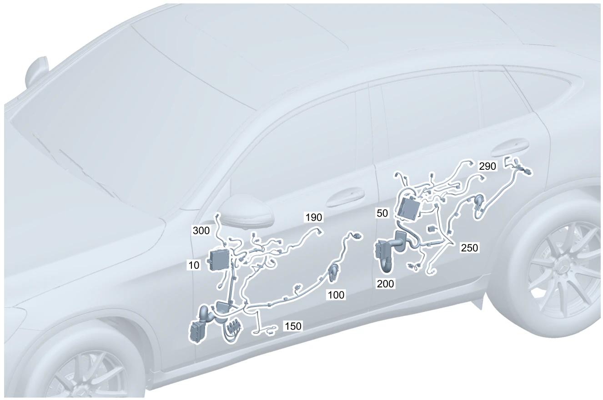

| № | Артикул | Название | Кол. | Примечание | Ограничение |
|---|---|---|---|---|---|
| 10 | A 167 900 36 11 | Блок управления (CONTROL UNIT) | 1 | Передняя дверь слева [672] ДЕТАЛЬ ПОСЛЕ УСТАН.ПРОВЕРИТЬ НА АКТУАЛЬНОСТЬ "ПРОШИВНОГО" ПО | |
| 10 | A 167 900 36 11 | Блок управления (CONTROL UNIT) | 1 | Передняя дверь слева [672] ДЕТАЛЬ ПОСЛЕ УСТАН.ПРОВЕРИТЬ НА АКТУАЛЬНОСТЬ "ПРОШИВНОГО" ПО | (460/494) |
| 10 | A 167 900 37 11 | Блок управления (CONTROL UNIT) | 1 | Передняя дверь слева [672] ДЕТАЛЬ ПОСЛЕ УСТАН.ПРОВЕРИТЬ НА АКТУАЛЬНОСТЬ "ПРОШИВНОГО" ПО [697] ДЕТАЛЬ ПОСТАВЛЯЕТСЯ ТОЛЬКО/ИЛИ ТАКЖЕ КАК ЗАП.ЧАСТЬ | (460/494)+(P49/275/401/873/877/221) |
| 10 | A 167 900 38 11 | Блок управления (CONTROL UNIT) | 1 | Передняя дверь слева [672] ДЕТАЛЬ ПОСЛЕ УСТАН.ПРОВЕРИТЬ НА АКТУАЛЬНОСТЬ "ПРОШИВНОГО" ПО [697] ДЕТАЛЬ ПОСТАВЛЯЕТСЯ ТОЛЬКО/ИЛИ ТАКЖЕ КАК ЗАП.ЧАСТЬ | (460/494)+(885/889/234/233/(885/889/234/233)+(P49/275/401/873/877/221)) |
| 10 | A 167 900 38 11 | Блок управления (CONTROL UNIT) | 1 | Передняя дверь слева [672] ДЕТАЛЬ ПОСЛЕ УСТАН.ПРОВЕРИТЬ НА АКТУАЛЬНОСТЬ "ПРОШИВНОГО" ПО [697] ДЕТАЛЬ ПОСТАВЛЯЕТСЯ ТОЛЬКО/ИЛИ ТАКЖЕ КАК ЗАП.ЧАСТЬ | 801+(460/494)+(885/889/234/233/(885/889/234/233)+(P49/275/401/873/877/221)) |
| 10 | A 167 900 25 18 | Блок управления (CONTROL UNIT) | 1 | Передняя дверь слева [672] ДЕТАЛЬ ПОСЛЕ УСТАН.ПРОВЕРИТЬ НА АКТУАЛЬНОСТЬ "ПРОШИВНОГО" ПО | 802+(460/494) |
| 10 | A 167 900 26 18 | Блок управления (CONTROL UNIT) | 1 | Передняя дверь слева [672] ДЕТАЛЬ ПОСЛЕ УСТАН.ПРОВЕРИТЬ НА АКТУАЛЬНОСТЬ "ПРОШИВНОГО" ПО | 802+(460/494)+(P49/275/401/873/877/221) |
| 10 | A 167 900 27 18 | Блок управления (CONTROL UNIT) | 1 | Передняя дверь слева [672] ДЕТАЛЬ ПОСЛЕ УСТАН.ПРОВЕРИТЬ НА АКТУАЛЬНОСТЬ "ПРОШИВНОГО" ПО | 802+(460/494)+(885/889/234/233/(885/889/234/233)+(P49/275/401/873/877/221)) |
| 10 | A 167 900 25 18 | Блок управления (CONTROL UNIT) | 1 | Передняя дверь слева [672] ДЕТАЛЬ ПОСЛЕ УСТАН.ПРОВЕРИТЬ НА АКТУАЛЬНОСТЬ "ПРОШИВНОГО" ПО | 802 |
| 10 | A 167 900 26 18 | Блок управления (CONTROL UNIT) | 1 | Передняя дверь слева [672] ДЕТАЛЬ ПОСЛЕ УСТАН.ПРОВЕРИТЬ НА АКТУАЛЬНОСТЬ "ПРОШИВНОГО" ПО | 802+(P49/275/401/873/877/221) |
| 10 | A 167 900 27 18 | Блок управления (CONTROL UNIT) | 1 | Передняя дверь слева [672] ДЕТАЛЬ ПОСЛЕ УСТАН.ПРОВЕРИТЬ НА АКТУАЛЬНОСТЬ "ПРОШИВНОГО" ПО | 802+(885/889/234/233/(885/889/234/233)+(P49/275/401/873/877/221)) |
| 10 | A 167 900 36 11 | Блок управления (CONTROL UNIT) | 1 | Передняя дверь слева [672] ДЕТАЛЬ ПОСЛЕ УСТАН.ПРОВЕРИТЬ НА АКТУАЛЬНОСТЬ "ПРОШИВНОГО" ПО | 801 |
| 10 | A 167 900 36 11 | Блок управления (CONTROL UNIT) | 1 | Передняя дверь слева [672] ДЕТАЛЬ ПОСЛЕ УСТАН.ПРОВЕРИТЬ НА АКТУАЛЬНОСТЬ "ПРОШИВНОГО" ПО | |
| 10 | A 167 900 37 11 | Блок управления (CONTROL UNIT) | 1 | Передняя дверь слева [672] ДЕТАЛЬ ПОСЛЕ УСТАН.ПРОВЕРИТЬ НА АКТУАЛЬНОСТЬ "ПРОШИВНОГО" ПО [697] ДЕТАЛЬ ПОСТАВЛЯЕТСЯ ТОЛЬКО/ИЛИ ТАКЖЕ КАК ЗАП.ЧАСТЬ | 801+(P49/275/401/873/877/221) |
| 10 | A 167 900 37 11 | Блок управления (CONTROL UNIT) | 1 | Передняя дверь слева [672] ДЕТАЛЬ ПОСЛЕ УСТАН.ПРОВЕРИТЬ НА АКТУАЛЬНОСТЬ "ПРОШИВНОГО" ПО [697] ДЕТАЛЬ ПОСТАВЛЯЕТСЯ ТОЛЬКО/ИЛИ ТАКЖЕ КАК ЗАП.ЧАСТЬ | (P49/275/401/873/877/221) |
| 10 | A 167 900 38 11 | Блок управления (CONTROL UNIT) | 1 | Передняя дверь слева [672] ДЕТАЛЬ ПОСЛЕ УСТАН.ПРОВЕРИТЬ НА АКТУАЛЬНОСТЬ "ПРОШИВНОГО" ПО [697] ДЕТАЛЬ ПОСТАВЛЯЕТСЯ ТОЛЬКО/ИЛИ ТАКЖЕ КАК ЗАП.ЧАСТЬ | 801+(885/889/234/233/(885/889/234/233)+(P49/275/401/873/877/221)) |
| 10 | A 167 900 38 11 | Блок управления (CONTROL UNIT) | 1 | Передняя дверь слева [672] ДЕТАЛЬ ПОСЛЕ УСТАН.ПРОВЕРИТЬ НА АКТУАЛЬНОСТЬ "ПРОШИВНОГО" ПО [697] ДЕТАЛЬ ПОСТАВЛЯЕТСЯ ТОЛЬКО/ИЛИ ТАКЖЕ КАК ЗАП.ЧАСТЬ | (885/889/234/233/(885/889/234/233)+(P49/275/401/873/877/221)) |
| 10 | A 167 900 40 11 | Блок управления (CONTROL UNIT) | 1 | Передняя дверь справа [672] ДЕТАЛЬ ПОСЛЕ УСТАН.ПРОВЕРИТЬ НА АКТУАЛЬНОСТЬ "ПРОШИВНОГО" ПО [697] ДЕТАЛЬ ПОСТАВЛЯЕТСЯ ТОЛЬКО/ИЛИ ТАКЖЕ КАК ЗАП.ЧАСТЬ | |
| 10 | A 167 900 37 11 | Блок управления (CONTROL UNIT) | 1 | Передняя дверь слева [672] ДЕТАЛЬ ПОСЛЕ УСТАН.ПРОВЕРИТЬ НА АКТУАЛЬНОСТЬ "ПРОШИВНОГО" ПО [697] ДЕТАЛЬ ПОСТАВЛЯЕТСЯ ТОЛЬКО/ИЛИ ТАКЖЕ КАК ЗАП.ЧАСТЬ | P49/275/401/873/877/221 |
| 10 | A 167 900 41 11 | Блок управления (CONTROL UNIT) | 1 | Передняя дверь справа [672] ДЕТАЛЬ ПОСЛЕ УСТАН.ПРОВЕРИТЬ НА АКТУАЛЬНОСТЬ "ПРОШИВНОГО" ПО [697] ДЕТАЛЬ ПОСТАВЛЯЕТСЯ ТОЛЬКО/ИЛИ ТАКЖЕ КАК ЗАП.ЧАСТЬ | P49/275/401/873/877/222 |
| 10 | A 167 900 83 11 | Блок управления (CONTROL UNIT) | 1 | Передняя дверь слева [672] ДЕТАЛЬ ПОСЛЕ УСТАН.ПРОВЕРИТЬ НА АКТУАЛЬНОСТЬ "ПРОШИВНОГО" ПО | 800+(885/889/234/233/(885/889/234/233)+(P49/275/401/873/877/221)) |
| 10 | A 167 900 38 11 | Блок управления (CONTROL UNIT) | 1 | Передняя дверь слева [672] ДЕТАЛЬ ПОСЛЕ УСТАН.ПРОВЕРИТЬ НА АКТУАЛЬНОСТЬ "ПРОШИВНОГО" ПО [697] ДЕТАЛЬ ПОСТАВЛЯЕТСЯ ТОЛЬКО/ИЛИ ТАКЖЕ КАК ЗАП.ЧАСТЬ | (885/889/234/233/(885/889/234/233)+(P49/275/401/873/877/221)) |
| 10 | A 167 900 38 11 | Блок управления (CONTROL UNIT) | 1 | Передняя дверь слева [672] ДЕТАЛЬ ПОСЛЕ УСТАН.ПРОВЕРИТЬ НА АКТУАЛЬНОСТЬ "ПРОШИВНОГО" ПО [697] ДЕТАЛЬ ПОСТАВЛЯЕТСЯ ТОЛЬКО/ИЛИ ТАКЖЕ КАК ЗАП.ЧАСТЬ | (800+050/801)+(885/889/234/233/(885/889/234/233)+(P49/275/401/873/877/221)) |
| 10 | A 167 900 87 11 | Блок управления | 1 | Передняя дверь справа [672] ДЕТАЛЬ ПОСЛЕ УСТАН.ПРОВЕРИТЬ НА АКТУАЛЬНОСТЬ "ПРОШИВНОГО" ПО | 800+(885/889/234/233/(885/889/234/233)+(P49/275/401/873/877/222)) |
| 10 | A 167 900 42 11 | Блок управления (CONTROL UNIT) | 1 | Передняя дверь справа [672] ДЕТАЛЬ ПОСЛЕ УСТАН.ПРОВЕРИТЬ НА АКТУАЛЬНОСТЬ "ПРОШИВНОГО" ПО [697] ДЕТАЛЬ ПОСТАВЛЯЕТСЯ ТОЛЬКО/ИЛИ ТАКЖЕ КАК ЗАП.ЧАСТЬ | (885/889/234/233/(885/889/234/233)+(P49/275/401/873/877/222)) |
| 10 | A 167 900 42 11 | Блок управления (CONTROL UNIT) | 1 | Передняя дверь справа [672] ДЕТАЛЬ ПОСЛЕ УСТАН.ПРОВЕРИТЬ НА АКТУАЛЬНОСТЬ "ПРОШИВНОГО" ПО [697] ДЕТАЛЬ ПОСТАВЛЯЕТСЯ ТОЛЬКО/ИЛИ ТАКЖЕ КАК ЗАП.ЧАСТЬ | (800+050/801)+(885/889/234/233/(885/889/234/233)+(P49/275/401/873/877/222)) |
| 10 | A 167 900 39 11 | Блок управления (CONTROL UNIT) | 1 | Передняя дверь слева Рулевое управление: Влево [672] ДЕТАЛЬ ПОСЛЕ УСТАН.ПРОВЕРИТЬ НА АКТУАЛЬНОСТЬ "ПРОШИВНОГО" ПО [697] ДЕТАЛЬ ПОСТАВЛЯЕТСЯ ТОЛЬКО/ИЛИ ТАКЖЕ КАК ЗАП.ЧАСТЬ | 550 |
| 10 | A 167 900 43 11 | Блок управления (CONTROL UNIT) | 1 | Передняя дверь справа Рулевое управление: Вправо [672] ДЕТАЛЬ ПОСЛЕ УСТАН.ПРОВЕРИТЬ НА АКТУАЛЬНОСТЬ "ПРОШИВНОГО" ПО [697] ДЕТАЛЬ ПОСТАВЛЯЕТСЯ ТОЛЬКО/ИЛИ ТАКЖЕ КАК ЗАП.ЧАСТЬ | 550 |
| 10 | A 167 900 36 11 | Блок управления (CONTROL UNIT) | 1 | Передняя дверь слева [672] ДЕТАЛЬ ПОСЛЕ УСТАН.ПРОВЕРИТЬ НА АКТУАЛЬНОСТЬ "ПРОШИВНОГО" ПО | 460/494 |
| 10 | A 167 900 36 11 | Блок управления (CONTROL UNIT) | 1 | Передняя дверь слева [672] ДЕТАЛЬ ПОСЛЕ УСТАН.ПРОВЕРИТЬ НА АКТУАЛЬНОСТЬ "ПРОШИВНОГО" ПО | 801+(460/494) |
| 10 | A 167 900 40 11 | Блок управления (CONTROL UNIT) | 1 | Передняя дверь справа [672] ДЕТАЛЬ ПОСЛЕ УСТАН.ПРОВЕРИТЬ НА АКТУАЛЬНОСТЬ "ПРОШИВНОГО" ПО [697] ДЕТАЛЬ ПОСТАВЛЯЕТСЯ ТОЛЬКО/ИЛИ ТАКЖЕ КАК ЗАП.ЧАСТЬ | 460/494 |
| 10 | A 167 900 83 11 | Блок управления (CONTROL UNIT) | 1 | Передняя дверь слева [672] ДЕТАЛЬ ПОСЛЕ УСТАН.ПРОВЕРИТЬ НА АКТУАЛЬНОСТЬ "ПРОШИВНОГО" ПО | 800+(460/494/496)+(885/889/234/233/(885/889/234/233)+(P49/275/401/873/877/221)) |
| 10 | A 167 900 37 11 | Блок управления (CONTROL UNIT) | 1 | Передняя дверь слева [672] ДЕТАЛЬ ПОСЛЕ УСТАН.ПРОВЕРИТЬ НА АКТУАЛЬНОСТЬ "ПРОШИВНОГО" ПО [697] ДЕТАЛЬ ПОСТАВЛЯЕТСЯ ТОЛЬКО/ИЛИ ТАКЖЕ КАК ЗАП.ЧАСТЬ | (460/494)+(P49/275/401/873/877/221) |
| 10 | A 167 900 37 11 | Блок управления (CONTROL UNIT) | 1 | Передняя дверь слева [672] ДЕТАЛЬ ПОСЛЕ УСТАН.ПРОВЕРИТЬ НА АКТУАЛЬНОСТЬ "ПРОШИВНОГО" ПО [697] ДЕТАЛЬ ПОСТАВЛЯЕТСЯ ТОЛЬКО/ИЛИ ТАКЖЕ КАК ЗАП.ЧАСТЬ | 801+(460/494)+(P49/275/401/873/877/221) |
| 10 | A 167 900 41 11 | Блок управления (CONTROL UNIT) | 1 | Передняя дверь справа [672] ДЕТАЛЬ ПОСЛЕ УСТАН.ПРОВЕРИТЬ НА АКТУАЛЬНОСТЬ "ПРОШИВНОГО" ПО [697] ДЕТАЛЬ ПОСТАВЛЯЕТСЯ ТОЛЬКО/ИЛИ ТАКЖЕ КАК ЗАП.ЧАСТЬ | (460/494)+(P49/275/401/873/877/222) |
| 10 | A 167 900 40 11 | Блок управления (CONTROL UNIT) | 1 | Передняя дверь справа [672] ДЕТАЛЬ ПОСЛЕ УСТАН.ПРОВЕРИТЬ НА АКТУАЛЬНОСТЬ "ПРОШИВНОГО" ПО [697] ДЕТАЛЬ ПОСТАВЛЯЕТСЯ ТОЛЬКО/ИЛИ ТАКЖЕ КАК ЗАП.ЧАСТЬ | 801+(460/494) |
| 10 | A 167 900 83 11 | Блок управления (CONTROL UNIT) | 1 | Передняя дверь слева [672] ДЕТАЛЬ ПОСЛЕ УСТАН.ПРОВЕРИТЬ НА АКТУАЛЬНОСТЬ "ПРОШИВНОГО" ПО | 800+496+(885/889/234/233/(885/889/234/233)+(P49/275/401/873/877/221)) |
| 10 | A 167 900 38 11 | Блок управления (CONTROL UNIT) | 1 | Передняя дверь слева [672] ДЕТАЛЬ ПОСЛЕ УСТАН.ПРОВЕРИТЬ НА АКТУАЛЬНОСТЬ "ПРОШИВНОГО" ПО [697] ДЕТАЛЬ ПОСТАВЛЯЕТСЯ ТОЛЬКО/ИЛИ ТАКЖЕ КАК ЗАП.ЧАСТЬ | (460/494)+(885/889/234/233/(885/889/234/233)+(P49/275/401/873/877/221)) |
| 10 | A 167 900 38 11 | Блок управления (CONTROL UNIT) | 1 | Передняя дверь слева [672] ДЕТАЛЬ ПОСЛЕ УСТАН.ПРОВЕРИТЬ НА АКТУАЛЬНОСТЬ "ПРОШИВНОГО" ПО [697] ДЕТАЛЬ ПОСТАВЛЯЕТСЯ ТОЛЬКО/ИЛИ ТАКЖЕ КАК ЗАП.ЧАСТЬ | (800+050)+(460/494/267)+(885/889/234/233/(885/889/234/233)+(P49/275/401/873/877/221)) |
| 10 | A 167 900 38 11 | Блок управления (CONTROL UNIT) | 1 | Передняя дверь слева [672] ДЕТАЛЬ ПОСЛЕ УСТАН.ПРОВЕРИТЬ НА АКТУАЛЬНОСТЬ "ПРОШИВНОГО" ПО [697] ДЕТАЛЬ ПОСТАВЛЯЕТСЯ ТОЛЬКО/ИЛИ ТАКЖЕ КАК ЗАП.ЧАСТЬ | (800+050)+(460/494/267)+(885/889/234/233/(885/889/234/233)+(P49/275/401/873/877/221)) |
| 10 | A 167 900 38 11 | Блок управления (CONTROL UNIT) | 1 | Передняя дверь слева [672] ДЕТАЛЬ ПОСЛЕ УСТАН.ПРОВЕРИТЬ НА АКТУАЛЬНОСТЬ "ПРОШИВНОГО" ПО [697] ДЕТАЛЬ ПОСТАВЛЯЕТСЯ ТОЛЬКО/ИЛИ ТАКЖЕ КАК ЗАП.ЧАСТЬ | 801+(460/494)+(885/889/234/233/(885/889/234/233)+(P49/275/401/873/877/221)) |
| 10 | A 167 900 87 11 | Блок управления | 1 | Передняя дверь справа [672] ДЕТАЛЬ ПОСЛЕ УСТАН.ПРОВЕРИТЬ НА АКТУАЛЬНОСТЬ "ПРОШИВНОГО" ПО | 800+496+(885/889/234/233/(885/889/234/233)+(P49/275/401/873/877/222)) |
| 10 | A 167 900 42 11 | Блок управления (CONTROL UNIT) | 1 | Передняя дверь справа [672] ДЕТАЛЬ ПОСЛЕ УСТАН.ПРОВЕРИТЬ НА АКТУАЛЬНОСТЬ "ПРОШИВНОГО" ПО [697] ДЕТАЛЬ ПОСТАВЛЯЕТСЯ ТОЛЬКО/ИЛИ ТАКЖЕ КАК ЗАП.ЧАСТЬ | (460/494)+(885/889/234/233/(885/889/234/233)+(P49/275/401/873/877/222)) |
| 10 | A 167 900 42 11 | Блок управления (CONTROL UNIT) | 1 | Передняя дверь справа [672] ДЕТАЛЬ ПОСЛЕ УСТАН.ПРОВЕРИТЬ НА АКТУАЛЬНОСТЬ "ПРОШИВНОГО" ПО [697] ДЕТАЛЬ ПОСТАВЛЯЕТСЯ ТОЛЬКО/ИЛИ ТАКЖЕ КАК ЗАП.ЧАСТЬ | (800+050)+(460/494/267)+(885/889/234/233/(885/889/234/233)+(P49/275/401/873/877/222)) |
| 10 | A 167 900 43 11 | Блок управления (CONTROL UNIT) | 1 | Передняя дверь справа Рулевое управление: Вправо [672] ДЕТАЛЬ ПОСЛЕ УСТАН.ПРОВЕРИТЬ НА АКТУАЛЬНОСТЬ "ПРОШИВНОГО" ПО [697] ДЕТАЛЬ ПОСТАВЛЯЕТСЯ ТОЛЬКО/ИЛИ ТАКЖЕ КАК ЗАП.ЧАСТЬ | (800+050/801)+550 |
| 10 | A 167 900 40 11 | Блок управления (CONTROL UNIT) | 1 | Передняя дверь справа [672] ДЕТАЛЬ ПОСЛЕ УСТАН.ПРОВЕРИТЬ НА АКТУАЛЬНОСТЬ "ПРОШИВНОГО" ПО [697] ДЕТАЛЬ ПОСТАВЛЯЕТСЯ ТОЛЬКО/ИЛИ ТАКЖЕ КАК ЗАП.ЧАСТЬ | (460/494) |
| 10 | A 167 900 41 11 | Блок управления (CONTROL UNIT) | 1 | Передняя дверь справа [672] ДЕТАЛЬ ПОСЛЕ УСТАН.ПРОВЕРИТЬ НА АКТУАЛЬНОСТЬ "ПРОШИВНОГО" ПО [697] ДЕТАЛЬ ПОСТАВЛЯЕТСЯ ТОЛЬКО/ИЛИ ТАКЖЕ КАК ЗАП.ЧАСТЬ | 801+(460/494)+(P49/275/401/873/877/222) |
| 10 | A 167 900 41 11 | Блок управления (CONTROL UNIT) | 1 | Передняя дверь справа [672] ДЕТАЛЬ ПОСЛЕ УСТАН.ПРОВЕРИТЬ НА АКТУАЛЬНОСТЬ "ПРОШИВНОГО" ПО [697] ДЕТАЛЬ ПОСТАВЛЯЕТСЯ ТОЛЬКО/ИЛИ ТАКЖЕ КАК ЗАП.ЧАСТЬ | (460/494)+(P49/275/401/873/877/222) |
| 10 | A 167 900 42 11 | Блок управления (CONTROL UNIT) | 1 | Передняя дверь справа [672] ДЕТАЛЬ ПОСЛЕ УСТАН.ПРОВЕРИТЬ НА АКТУАЛЬНОСТЬ "ПРОШИВНОГО" ПО [697] ДЕТАЛЬ ПОСТАВЛЯЕТСЯ ТОЛЬКО/ИЛИ ТАКЖЕ КАК ЗАП.ЧАСТЬ | 801+(460/494)+(885/889/234/233/(885/889/234/233)+(P49/275/401/873/877/222)) |
| 10 | A 167 900 42 11 | Блок управления (CONTROL UNIT) | 1 | Передняя дверь справа [672] ДЕТАЛЬ ПОСЛЕ УСТАН.ПРОВЕРИТЬ НА АКТУАЛЬНОСТЬ "ПРОШИВНОГО" ПО [697] ДЕТАЛЬ ПОСТАВЛЯЕТСЯ ТОЛЬКО/ИЛИ ТАКЖЕ КАК ЗАП.ЧАСТЬ | (460/494)+(885/889/234/233/(885/889/234/233)+(P49/275/401/873/877/222)) |
| 10 | A 167 900 42 11 | Блок управления (CONTROL UNIT) | 1 | Передняя дверь справа [672] ДЕТАЛЬ ПОСЛЕ УСТАН.ПРОВЕРИТЬ НА АКТУАЛЬНОСТЬ "ПРОШИВНОГО" ПО [697] ДЕТАЛЬ ПОСТАВЛЯЕТСЯ ТОЛЬКО/ИЛИ ТАКЖЕ КАК ЗАП.ЧАСТЬ | 801+(460/494)+(885/889/234/233/(885/889/234/233)+(P49/275/401/873/877/222)) |
| 10 | A 167 900 29 18 | Блок управления (CONTROL UNIT) | 1 | Передняя дверь справа [672] ДЕТАЛЬ ПОСЛЕ УСТАН.ПРОВЕРИТЬ НА АКТУАЛЬНОСТЬ "ПРОШИВНОГО" ПО | 802+(460/494) |
| 10 | A 167 900 30 18 | Блок управления (CONTROL UNIT) | 1 | Передняя дверь справа [672] ДЕТАЛЬ ПОСЛЕ УСТАН.ПРОВЕРИТЬ НА АКТУАЛЬНОСТЬ "ПРОШИВНОГО" ПО [697] ДЕТАЛЬ ПОСТАВЛЯЕТСЯ ТОЛЬКО/ИЛИ ТАКЖЕ КАК ЗАП.ЧАСТЬ | 802+(460/494)+(P49/275/401/873/877/222) |
| 10 | A 167 900 31 18 | Блок управления (CONTROL UNIT) | 1 | Передняя дверь справа [672] ДЕТАЛЬ ПОСЛЕ УСТАН.ПРОВЕРИТЬ НА АКТУАЛЬНОСТЬ "ПРОШИВНОГО" ПО | 802+(460/494)+(885/889/234/233/(885/889/234/233)+(P49/275/401/873/877/222)) |
| 10 | A 167 900 29 18 | Блок управления (CONTROL UNIT) | 1 | Передняя дверь справа [672] ДЕТАЛЬ ПОСЛЕ УСТАН.ПРОВЕРИТЬ НА АКТУАЛЬНОСТЬ "ПРОШИВНОГО" ПО | 802 |
| 10 | A 167 900 30 18 | Блок управления (CONTROL UNIT) | 1 | Передняя дверь справа [672] ДЕТАЛЬ ПОСЛЕ УСТАН.ПРОВЕРИТЬ НА АКТУАЛЬНОСТЬ "ПРОШИВНОГО" ПО [697] ДЕТАЛЬ ПОСТАВЛЯЕТСЯ ТОЛЬКО/ИЛИ ТАКЖЕ КАК ЗАП.ЧАСТЬ | 802+(P49/275/401/873/877/222) |
| 10 | A 167 900 31 18 | Блок управления (CONTROL UNIT) | 1 | Передняя дверь справа [672] ДЕТАЛЬ ПОСЛЕ УСТАН.ПРОВЕРИТЬ НА АКТУАЛЬНОСТЬ "ПРОШИВНОГО" ПО | 802+(885/889/234/233/(885/889/234/233)+(P49/275/401/873/877/222)) |
| 10 | A 167 900 40 11 | Блок управления (CONTROL UNIT) | 1 | Передняя дверь справа [672] ДЕТАЛЬ ПОСЛЕ УСТАН.ПРОВЕРИТЬ НА АКТУАЛЬНОСТЬ "ПРОШИВНОГО" ПО [697] ДЕТАЛЬ ПОСТАВЛЯЕТСЯ ТОЛЬКО/ИЛИ ТАКЖЕ КАК ЗАП.ЧАСТЬ | 801 |
| 10 | A 167 900 40 11 | Блок управления (CONTROL UNIT) | 1 | Передняя дверь справа [672] ДЕТАЛЬ ПОСЛЕ УСТАН.ПРОВЕРИТЬ НА АКТУАЛЬНОСТЬ "ПРОШИВНОГО" ПО [697] ДЕТАЛЬ ПОСТАВЛЯЕТСЯ ТОЛЬКО/ИЛИ ТАКЖЕ КАК ЗАП.ЧАСТЬ | |
| 10 | A 167 900 41 11 | Блок управления (CONTROL UNIT) | 1 | Передняя дверь справа [672] ДЕТАЛЬ ПОСЛЕ УСТАН.ПРОВЕРИТЬ НА АКТУАЛЬНОСТЬ "ПРОШИВНОГО" ПО [697] ДЕТАЛЬ ПОСТАВЛЯЕТСЯ ТОЛЬКО/ИЛИ ТАКЖЕ КАК ЗАП.ЧАСТЬ | 801+(P49/275/401/873/877/222) |
| 10 | A 167 900 41 11 | Блок управления (CONTROL UNIT) | 1 | Передняя дверь справа [672] ДЕТАЛЬ ПОСЛЕ УСТАН.ПРОВЕРИТЬ НА АКТУАЛЬНОСТЬ "ПРОШИВНОГО" ПО [697] ДЕТАЛЬ ПОСТАВЛЯЕТСЯ ТОЛЬКО/ИЛИ ТАКЖЕ КАК ЗАП.ЧАСТЬ | (P49/275/401/873/877/222) |
| 10 | A 167 900 42 11 | Блок управления (CONTROL UNIT) | 1 | Передняя дверь справа [672] ДЕТАЛЬ ПОСЛЕ УСТАН.ПРОВЕРИТЬ НА АКТУАЛЬНОСТЬ "ПРОШИВНОГО" ПО [697] ДЕТАЛЬ ПОСТАВЛЯЕТСЯ ТОЛЬКО/ИЛИ ТАКЖЕ КАК ЗАП.ЧАСТЬ | 801+(885/889/234/233/(885/889/234/233)+(P49/275/401/873/877/222)) |
| 10 | A 167 900 42 11 | Блок управления (CONTROL UNIT) | 1 | Передняя дверь справа [672] ДЕТАЛЬ ПОСЛЕ УСТАН.ПРОВЕРИТЬ НА АКТУАЛЬНОСТЬ "ПРОШИВНОГО" ПО [697] ДЕТАЛЬ ПОСТАВЛЯЕТСЯ ТОЛЬКО/ИЛИ ТАКЖЕ КАК ЗАП.ЧАСТЬ | (885/889/234/233/(885/889/234/233)+(P49/275/401/873/877/222)) |
| 10 | A 167 900 25 18 | Блок управления (CONTROL UNIT) | 1 | Передняя дверь слева [672] ДЕТАЛЬ ПОСЛЕ УСТАН.ПРОВЕРИТЬ НА АКТУАЛЬНОСТЬ "ПРОШИВНОГО" ПО | 460/494 |
| 10 | A 167 900 26 18 | Блок управления (CONTROL UNIT) | 1 | Передняя дверь слева [672] ДЕТАЛЬ ПОСЛЕ УСТАН.ПРОВЕРИТЬ НА АКТУАЛЬНОСТЬ "ПРОШИВНОГО" ПО | (460/494)+(P49/275/401/873/877/221) |
| 10 | A 167 900 27 18 | Блок управления (CONTROL UNIT) | 1 | Передняя дверь слева [672] ДЕТАЛЬ ПОСЛЕ УСТАН.ПРОВЕРИТЬ НА АКТУАЛЬНОСТЬ "ПРОШИВНОГО" ПО | (460/494)+(885/889/234/233/(885/889/234/233)+(P49/275/401/873/877/221)) |
| 10 | A 167 900 25 18 | Блок управления (CONTROL UNIT) | 1 | Передняя дверь слева [672] ДЕТАЛЬ ПОСЛЕ УСТАН.ПРОВЕРИТЬ НА АКТУАЛЬНОСТЬ "ПРОШИВНОГО" ПО | |
| 10 | A 167 900 26 18 | Блок управления (CONTROL UNIT) | 1 | Передняя дверь слева [672] ДЕТАЛЬ ПОСЛЕ УСТАН.ПРОВЕРИТЬ НА АКТУАЛЬНОСТЬ "ПРОШИВНОГО" ПО | P49/275/401/873/877/221 |
| 10 | A 167 900 27 18 | Блок управления (CONTROL UNIT) | 1 | Передняя дверь слева [672] ДЕТАЛЬ ПОСЛЕ УСТАН.ПРОВЕРИТЬ НА АКТУАЛЬНОСТЬ "ПРОШИВНОГО" ПО | (885/889/234/233/(885/889/234/233)+(P49/275/401/873/877/221)) |
| 10 | A 167 900 29 18 | Блок управления (CONTROL UNIT) | 1 | Передняя дверь справа [672] ДЕТАЛЬ ПОСЛЕ УСТАН.ПРОВЕРИТЬ НА АКТУАЛЬНОСТЬ "ПРОШИВНОГО" ПО | 460/494 |
| 10 | A 167 900 30 18 | Блок управления (CONTROL UNIT) | 1 | Передняя дверь справа [672] ДЕТАЛЬ ПОСЛЕ УСТАН.ПРОВЕРИТЬ НА АКТУАЛЬНОСТЬ "ПРОШИВНОГО" ПО [697] ДЕТАЛЬ ПОСТАВЛЯЕТСЯ ТОЛЬКО/ИЛИ ТАКЖЕ КАК ЗАП.ЧАСТЬ | (460/494)+(P49/275/401/873/877/222) |
| 10 | A 167 900 31 18 | Блок управления (CONTROL UNIT) | 1 | Передняя дверь справа [672] ДЕТАЛЬ ПОСЛЕ УСТАН.ПРОВЕРИТЬ НА АКТУАЛЬНОСТЬ "ПРОШИВНОГО" ПО | (460/494)+(885/889/234/233/(885/889/234/233)+(P49/275/401/873/877/222)) |
| 10 | A 167 900 29 18 | Блок управления (CONTROL UNIT) | 1 | Передняя дверь справа [672] ДЕТАЛЬ ПОСЛЕ УСТАН.ПРОВЕРИТЬ НА АКТУАЛЬНОСТЬ "ПРОШИВНОГО" ПО | |
| 10 | A 167 900 30 18 | Блок управления (CONTROL UNIT) | 1 | Передняя дверь справа [672] ДЕТАЛЬ ПОСЛЕ УСТАН.ПРОВЕРИТЬ НА АКТУАЛЬНОСТЬ "ПРОШИВНОГО" ПО [697] ДЕТАЛЬ ПОСТАВЛЯЕТСЯ ТОЛЬКО/ИЛИ ТАКЖЕ КАК ЗАП.ЧАСТЬ | P49/275/401/873/877/222 |
| 10 | A 167 900 31 18 | Блок управления (CONTROL UNIT) | 1 | Передняя дверь справа [672] ДЕТАЛЬ ПОСЛЕ УСТАН.ПРОВЕРИТЬ НА АКТУАЛЬНОСТЬ "ПРОШИВНОГО" ПО | (885/889/234/233/(885/889/234/233)+(P49/275/401/873/877/222)) |
| 50 | A 167 900 44 11 | Блок управления (CONTROL UNIT) | 1 | Блок управления задней дверью слева [672] ДЕТАЛЬ ПОСЛЕ УСТАН.ПРОВЕРИТЬ НА АКТУАЛЬНОСТЬ "ПРОШИВНОГО" ПО | |
| 50 | A 167 900 47 11 | Блок управления (CONTROL UNIT) | 1 | Блок управления задней дверью справа [672] ДЕТАЛЬ ПОСЛЕ УСТАН.ПРОВЕРИТЬ НА АКТУАЛЬНОСТЬ "ПРОШИВНОГО" ПО | |
| 50 | A 167 900 45 11 | Блок управления (CONTROL UNIT) | 1 | Блок управления задней дверью слева [672] ДЕТАЛЬ ПОСЛЕ УСТАН.ПРОВЕРИТЬ НА АКТУАЛЬНОСТЬ "ПРОШИВНОГО" ПО [697] ДЕТАЛЬ ПОСТАВЛЯЕТСЯ ТОЛЬКО/ИЛИ ТАКЖЕ КАК ЗАП.ЧАСТЬ | 877/885/889/247/872 |
| 50 | A 167 900 33 18 | Блок управления (CONTROL UNIT) | 1 | Блок управления задней дверью слева [672] ДЕТАЛЬ ПОСЛЕ УСТАН.ПРОВЕРИТЬ НА АКТУАЛЬНОСТЬ "ПРОШИВНОГО" ПО | 802 |
| 50 | A 167 900 34 18 | Блок управления (CONTROL UNIT) | 1 | Блок управления задней дверью слева [672] ДЕТАЛЬ ПОСЛЕ УСТАН.ПРОВЕРИТЬ НА АКТУАЛЬНОСТЬ "ПРОШИВНОГО" ПО | 802+(877/885/889/247/872) |
| 50 | A 167 900 48 11 | Блок управления (CONTROL UNIT) | 1 | Блок управления задней дверью справа [672] ДЕТАЛЬ ПОСЛЕ УСТАН.ПРОВЕРИТЬ НА АКТУАЛЬНОСТЬ "ПРОШИВНОГО" ПО [697] ДЕТАЛЬ ПОСТАВЛЯЕТСЯ ТОЛЬКО/ИЛИ ТАКЖЕ КАК ЗАП.ЧАСТЬ | 877/885/889/247/872 |
| 50 | A 167 900 36 18 | Блок управления (CONTROL UNIT) | 1 | Блок управления задней дверью справа [672] ДЕТАЛЬ ПОСЛЕ УСТАН.ПРОВЕРИТЬ НА АКТУАЛЬНОСТЬ "ПРОШИВНОГО" ПО | 802 |
| 50 | A 167 900 37 18 | Блок управления (CONTROL UNIT) | 1 | Блок управления задней дверью справа [672] ДЕТАЛЬ ПОСЛЕ УСТАН.ПРОВЕРИТЬ НА АКТУАЛЬНОСТЬ "ПРОШИВНОГО" ПО [697] ДЕТАЛЬ ПОСТАВЛЯЕТСЯ ТОЛЬКО/ИЛИ ТАКЖЕ КАК ЗАП.ЧАСТЬ | 802+(877/885/889/247/872) |
| 50 | A 167 900 33 18 | Блок управления (CONTROL UNIT) | 1 | Блок управления задней дверью слева [672] ДЕТАЛЬ ПОСЛЕ УСТАН.ПРОВЕРИТЬ НА АКТУАЛЬНОСТЬ "ПРОШИВНОГО" ПО | |
| 50 | A 167 900 34 18 | Блок управления (CONTROL UNIT) | 1 | Блок управления задней дверью слева [672] ДЕТАЛЬ ПОСЛЕ УСТАН.ПРОВЕРИТЬ НА АКТУАЛЬНОСТЬ "ПРОШИВНОГО" ПО | 877/885/889/247/872 |
| 50 | A 167 900 36 18 | Блок управления (CONTROL UNIT) | 1 | Блок управления задней дверью справа [672] ДЕТАЛЬ ПОСЛЕ УСТАН.ПРОВЕРИТЬ НА АКТУАЛЬНОСТЬ "ПРОШИВНОГО" ПО | |
| 50 | A 167 900 37 18 | Блок управления (CONTROL UNIT) | 1 | Блок управления задней дверью справа [672] ДЕТАЛЬ ПОСЛЕ УСТАН.ПРОВЕРИТЬ НА АКТУАЛЬНОСТЬ "ПРОШИВНОГО" ПО [697] ДЕТАЛЬ ПОСТАВЛЯЕТСЯ ТОЛЬКО/ИЛИ ТАКЖЕ КАК ЗАП.ЧАСТЬ | 877/885/889/247/872 |
| 100 | A 205 540 61 48 | Электрический жгут (ELECTRICAL WIRING HARNESS) | 1 | Дверь спереди слева, разъем двери к блоку управления и потребителю | |
| 100 | A 205 540 62 48 | Электрический жгут (ELECTRICAL WIRING HARNESS) | 1 | Дверь спереди слева, разъем двери к блоку управления и потребителю; ! Рулевое управление: Вправо | 274 |
| 100 | A 205 540 63 48 | Электрический жгут (ELECTRICAL WIRING HARNESS) | 1 | Дверь спереди слева, разъем двери к блоку управления и потребителю; ! Рулевое управление: Вправо | 501+274 |
| 100 | A 205 540 97 48 | Электрический жгут (ELECTRICAL WIRING HARNESS) | 1 | Дверь спереди слева, разъем двери к блоку управления и потребителю | 889 |
| 100 | A 205 540 07 63 | Электрический жгут (ELECTRICAL WIRING HARNESS) | 1 | Дверь спереди слева, разъем двери к блоку управления и потребителю | 801+889 |
| 100 | A 205 540 07 63 | Электрический жгут (ELECTRICAL WIRING HARNESS) | 1 | Дверь спереди слева, разъем двери к блоку управления и потребителю | 889 |
| 100 | A 205 540 98 48 | Электрический жгут (ELECTRICAL WIRING HARNESS) | 1 | Дверь спереди слева, разъем двери к блоку управления и потребителю; ! Рулевое управление: Вправо | 889+274 |
| 100 | A 205 540 08 45 | Электрический жгут (ELECTRICAL WIRING HARNESS) | 1 | Дверь спереди слева, разъем двери к блоку управления и потребителю Рулевое управление: Вправо | 801+889+274 |
| 100 | A 205 540 08 45 | Электрический жгут (ELECTRICAL WIRING HARNESS) | 1 | Дверь спереди слева, разъем двери к блоку управления и потребителю Рулевое управление: Вправо | 889+274 |
| 100 | A 205 540 99 48 | Электрический жгут (ELECTRICAL WIRING HARNESS) | 1 | Дверь спереди слева, разъем двери к блоку управления и потребителю Рулевое управление: Вправо | 889+501+274 |
| 100 | A 205 540 08 63 | Электрический жгут (ELECTRICAL WIRING HARNESS) | 1 | Дверь спереди слева, разъем двери к блоку управления и потребителю Рулевое управление: Вправо | 801+889+501+274 |
| 100 | A 205 540 08 63 | Электрический жгут (ELECTRICAL WIRING HARNESS) | 1 | Дверь спереди слева, разъем двери к блоку управления и потребителю Рулевое управление: Вправо | 889+501+274 |
| 100 | A 205 540 64 48 | Электрический жгут (ELECTRICAL WIRING HARNESS) | 1 | Дверь спереди слева, разъем двери к блоку управления и потребителю Рулевое управление: Влево | 270 |
| 100 | A 205 540 60 47 | Электрический жгут | 1 | Дверь спереди слева, разъем двери к блоку управления и потребителю Рулевое управление: Влево | 270+896 |
| 100 | A 205 540 15 48 | Электрический жгут (ELECTRICAL WIRING HARNESS) | 1 | Дверь спереди слева, разъем двери к блоку управления и потребителю Рулевое управление: Влево | 270+274 |
| 100 | A 205 540 61 47 | Электрический жгут | 1 | Дверь спереди слева, разъем двери к блоку управления и потребителю Рулевое управление: Влево | 270+274+896 |
| 100 | A 205 540 16 48 | Электрический жгут (ELECTRICAL WIRING HARNESS) | 1 | Дверь спереди слева, разъем двери к блоку управления и потребителю Рулевое управление: Влево | 501+270+274 |
| 100 | A 205 540 62 47 | Электрический жгут | 1 | Дверь спереди слева, разъем двери к блоку управления и потребителю Рулевое управление: Влево | 501+270+274+896 |
| 100 | A 205 540 00 49 | Электрический жгут | 1 | Дверь спереди слева, разъем двери к блоку управления и потребителю Рулевое управление: Влево | 889+270 |
| 100 | A 205 540 09 45 | Электрический жгут | 1 | Дверь спереди слева, разъем двери к блоку управления и потребителю Рулевое управление: Влево | 801+889+270 |
| 100 | A 205 540 09 45 | Электрический жгут | 1 | Дверь спереди слева, разъем двери к блоку управления и потребителю Рулевое управление: Влево | 889+270 |
| 100 | A 205 540 63 47 | Электрический жгут | 1 | Дверь спереди слева, разъем двери к блоку управления и потребителю Рулевое управление: Влево | 889+270+896 |
| 100 | A 205 540 16 63 | Электрический жгут | 1 | Дверь спереди слева, разъем двери к блоку управления и потребителю Рулевое управление: Влево | 801+889+270+896 |
| 100 | A 205 540 16 63 | Электрический жгут | 1 | Дверь спереди слева, разъем двери к блоку управления и потребителю Рулевое управление: Влево | 889+270+896 |
| 100 | A 205 540 01 49 | Электрический жгут (ELECTRICAL WIRING HARNESS) | 1 | Дверь спереди слева, разъем двери к блоку управления и потребителю Рулевое управление: Влево | 889+270+274 |
| 100 | A 205 540 09 63 | Электрический жгут (ELECTRICAL WIRING HARNESS) | 1 | Дверь спереди слева, разъем двери к блоку управления и потребителю Рулевое управление: Влево | 801+889+270+274 |
| 100 | A 205 540 09 63 | Электрический жгут (ELECTRICAL WIRING HARNESS) | 1 | Дверь спереди слева, разъем двери к блоку управления и потребителю Рулевое управление: Влево | 889+270+274 |
| 100 | A 205 540 64 47 | Электрический жгут | 1 | Дверь спереди слева, разъем двери к блоку управления и потребителю Рулевое управление: Влево | 889+270+274+896 |
| 100 | A 205 540 17 63 | Электрический жгут | 1 | Дверь спереди слева, разъем двери к блоку управления и потребителю Рулевое управление: Влево | 801+889+270+274+896 |
| 100 | A 205 540 17 63 | Электрический жгут | 1 | Дверь спереди слева, разъем двери к блоку управления и потребителю Рулевое управление: Влево | 889+270+274+896 |
| 100 | A 205 540 02 49 | Электрический жгут (ELECTRICAL WIRING HARNESS) | 1 | Дверь спереди слева, разъем двери к блоку управления и потребителю Рулевое управление: Влево | 889+501+270+274 |
| 100 | A 205 540 10 63 | Электрический жгут (ELECTRICAL WIRING HARNESS) | 1 | Дверь спереди слева, разъем двери к блоку управления и потребителю Рулевое управление: Влево | 801+889+501+270+274 |
| 100 | A 205 540 10 63 | Электрический жгут (ELECTRICAL WIRING HARNESS) | 1 | Дверь спереди слева, разъем двери к блоку управления и потребителю Рулевое управление: Влево | 889+501+270+274 |
| 100 | A 205 540 65 47 | Электрический жгут (ELECTRICAL WIRING HARNESS) | 1 | Дверь спереди слева, разъем двери к блоку управления и потребителю Рулевое управление: Влево | 889+501+270+274+896 |
| 100 | A 205 540 18 63 | Электрический жгут (ELECTRICAL WIRING HARNESS) | 1 | Дверь спереди слева, разъем двери к блоку управления и потребителю Рулевое управление: Влево | 801+889+501+270+274+896 |
| 100 | A 205 540 18 63 | Электрический жгут (ELECTRICAL WIRING HARNESS) | 1 | Дверь спереди слева, разъем двери к блоку управления и потребителю Рулевое управление: Влево | 889+501+270+274+896 |
| 100 | A 253 540 58 15 | Электрический жгут (ELECTRICAL WIRING HARNESS) | 1 | Дверь спереди слева, разъем двери к блоку управления и потребителю Рулевое управление: Вправо | 885 |
| 100 | A 253 540 12 14 | Электрический жгут (ELECTRICAL WIRING HARNESS) | 1 | Дверь спереди слева, разъем двери к блоку управления и потребителю Рулевое управление: Вправо | 885+889 |
| 100 | A 253 540 73 31 | Электрический жгут (ELECTRICAL WIRING HARNESS) | 1 | Дверь спереди слева, разъем двери к блоку управления и потребителю Рулевое управление: Вправо | 801+885+889 |
| 100 | A 253 540 73 31 | Электрический жгут (ELECTRICAL WIRING HARNESS) | 1 | Дверь спереди слева, разъем двери к блоку управления и потребителю Рулевое управление: Вправо | 885+889 |
| 100 | A 253 540 59 15 | Электрический жгут (ELECTRICAL WIRING HARNESS) | 1 | Дверь спереди слева, разъем двери к блоку управления и потребителю Рулевое управление: Вправо | 885+274 |
| 100 | A 253 540 14 14 | Электрический жгут (ELECTRICAL WIRING HARNESS) | 1 | Дверь спереди слева, разъем двери к блоку управления и потребителю Рулевое управление: Вправо | 885+889+274 |
| 100 | A 253 540 74 31 | Электрический жгут (ELECTRICAL WIRING HARNESS) | 1 | Дверь спереди слева, разъем двери к блоку управления и потребителю Рулевое управление: Вправо | 801+885+889+274 |
| 100 | A 253 540 74 31 | Электрический жгут (ELECTRICAL WIRING HARNESS) | 1 | Дверь спереди слева, разъем двери к блоку управления и потребителю Рулевое управление: Вправо | 885+889+274 |
| 100 | A 253 540 60 15 | Электрический жгут (ELECTRICAL WIRING HARNESS) | 1 | Дверь спереди слева, разъем двери к блоку управления и потребителю Рулевое управление: Вправо | 885+501+274 |
| 100 | A 253 540 15 14 | Электрический жгут (ELECTRICAL WIRING HARNESS) | 1 | Дверь спереди слева, разъем двери к блоку управления и потребителю Рулевое управление: Вправо | 885+889+501+274 |
| 100 | A 253 540 75 31 | Электрический жгут (ELECTRICAL WIRING HARNESS) | 1 | Дверь спереди слева, разъем двери к блоку управления и потребителю Рулевое управление: Вправо | 801+885+889+501+274 |
| 100 | A 253 540 75 31 | Электрический жгут (ELECTRICAL WIRING HARNESS) | 1 | Дверь спереди слева, разъем двери к блоку управления и потребителю Рулевое управление: Вправо | 885+889+501+274 |
| 100 | A 205 540 61 48 | Электрический жгут (ELECTRICAL WIRING HARNESS) | 1 | Дверь спереди справа, разъем двери к блоку управления и потребителю | |
| 100 | A 205 540 62 48 | Электрический жгут (ELECTRICAL WIRING HARNESS) | 1 | Дверь спереди справа, разъем двери к блоку управления и потребителю; ! Рулевое управление: Влево | 274 |
| 100 | A 205 540 63 48 | Электрический жгут (ELECTRICAL WIRING HARNESS) | 1 | Дверь спереди справа, разъем двери к блоку управления и потребителю; ! Рулевое управление: Влево | 501+274 |
| 100 | A 205 540 97 48 | Электрический жгут (ELECTRICAL WIRING HARNESS) | 1 | Дверь спереди справа, разъем двери к блоку управления и потребителю | 889 |
| 100 | A 205 540 07 63 | Электрический жгут (ELECTRICAL WIRING HARNESS) | 1 | Дверь спереди справа, разъем двери к блоку управления и потребителю | 801+889 |
| 100 | A 205 540 07 63 | Электрический жгут (ELECTRICAL WIRING HARNESS) | 1 | Дверь спереди справа, разъем двери к блоку управления и потребителю | 889 |
| 100 | A 205 540 98 48 | Электрический жгут (ELECTRICAL WIRING HARNESS) | 1 | Дверь спереди справа, разъем двери к блоку управления и потребителю; ! Рулевое управление: Влево | 889+274 |
| 100 | A 205 540 08 45 | Электрический жгут (ELECTRICAL WIRING HARNESS) | 1 | Дверь спереди справа, разъем двери к блоку управления и потребителю Рулевое управление: Влево | 801+889+274 |
| 100 | A 205 540 08 45 | Электрический жгут (ELECTRICAL WIRING HARNESS) | 1 | Дверь спереди справа, разъем двери к блоку управления и потребителю Рулевое управление: Влево | 889+274 |
| 100 | A 205 540 99 48 | Электрический жгут (ELECTRICAL WIRING HARNESS) | 1 | Дверь спереди справа, разъем двери к блоку управления и потребителю Рулевое управление: Влево | 889+501+274 |
| 100 | A 205 540 08 63 | Электрический жгут (ELECTRICAL WIRING HARNESS) | 1 | Дверь спереди справа, разъем двери к блоку управления и потребителю Рулевое управление: Влево | 801+889+501+274 |
| 100 | A 205 540 08 63 | Электрический жгут (ELECTRICAL WIRING HARNESS) | 1 | Дверь спереди справа, разъем двери к блоку управления и потребителю Рулевое управление: Влево | 889+501+274 |
| 100 | A 205 540 64 48 | Электрический жгут (ELECTRICAL WIRING HARNESS) | 1 | Дверь спереди справа, разъем двери к блоку управления и потребителю Рулевое управление: Вправо | 270 |
| 100 | A 205 540 60 47 | Электрический жгут | 1 | Дверь спереди справа, разъем двери к блоку управления и потребителю Рулевое управление: Вправо | 270+896 |
| 100 | A 205 540 15 48 | Электрический жгут (ELECTRICAL WIRING HARNESS) | 1 | Дверь спереди справа, разъем двери к блоку управления и потребителю Рулевое управление: Вправо | 270+274 |
| 100 | A 205 540 61 47 | Электрический жгут | 1 | Дверь спереди справа, разъем двери к блоку управления и потребителю Рулевое управление: Вправо | 270+274+896 |
| 100 | A 205 540 16 48 | Электрический жгут (ELECTRICAL WIRING HARNESS) | 1 | Дверь спереди справа, разъем двери к блоку управления и потребителю Рулевое управление: Вправо | 501+270+274 |
| 100 | A 205 540 62 47 | Электрический жгут | 1 | Дверь спереди справа, разъем двери к блоку управления и потребителю Рулевое управление: Вправо | 501+270+274+896 |
| 100 | A 205 540 00 49 | Электрический жгут | 1 | Дверь спереди справа, разъем двери к блоку управления и потребителю Рулевое управление: Вправо | 889+270 |
| 100 | A 205 540 09 45 | Электрический жгут | 1 | Дверь спереди справа, разъем двери к блоку управления и потребителю Рулевое управление: Вправо | 801+889+270 |
| 100 | A 205 540 09 45 | Электрический жгут | 1 | Дверь спереди справа, разъем двери к блоку управления и потребителю Рулевое управление: Вправо | 889+270 |
| 100 | A 205 540 63 47 | Электрический жгут | 1 | Дверь спереди справа, разъем двери к блоку управления и потребителю Рулевое управление: Вправо | 889+270+896 |
| 100 | A 205 540 16 63 | Электрический жгут | 1 | Дверь спереди справа, разъем двери к блоку управления и потребителю Рулевое управление: Вправо | 801+889+270+896 |
| 100 | A 205 540 16 63 | Электрический жгут | 1 | Дверь спереди справа, разъем двери к блоку управления и потребителю Рулевое управление: Вправо | 889+270+896 |
| 100 | A 205 540 01 49 | Электрический жгут (ELECTRICAL WIRING HARNESS) | 1 | Дверь спереди справа, разъем двери к блоку управления и потребителю Рулевое управление: Вправо | 889+270+274 |
| 100 | A 205 540 09 63 | Электрический жгут (ELECTRICAL WIRING HARNESS) | 1 | Дверь спереди справа, разъем двери к блоку управления и потребителю Рулевое управление: Вправо | 801+889+270+274 |
| 100 | A 205 540 09 63 | Электрический жгут (ELECTRICAL WIRING HARNESS) | 1 | Дверь спереди справа, разъем двери к блоку управления и потребителю Рулевое управление: Вправо | 889+270+274 |
| 100 | A 205 540 64 47 | Электрический жгут | 1 | Дверь спереди справа, разъем двери к блоку управления и потребителю Рулевое управление: Вправо | 889+270+274+896 |
| 100 | A 205 540 17 63 | Электрический жгут | 1 | Дверь спереди справа, разъем двери к блоку управления и потребителю Рулевое управление: Вправо | 801+889+270+274+896 |
| 100 | A 205 540 17 63 | Электрический жгут | 1 | Дверь спереди справа, разъем двери к блоку управления и потребителю Рулевое управление: Вправо | 889+270+274+896 |
| 100 | A 205 540 02 49 | Электрический жгут (ELECTRICAL WIRING HARNESS) | 1 | Дверь спереди справа, разъем двери к блоку управления и потребителю Рулевое управление: Вправо | 889+501+270+274 |
| 100 | A 205 540 10 63 | Электрический жгут (ELECTRICAL WIRING HARNESS) | 1 | Дверь спереди справа, разъем двери к блоку управления и потребителю Рулевое управление: Вправо | 801+889+501+270+274 |
| 100 | A 205 540 10 63 | Электрический жгут (ELECTRICAL WIRING HARNESS) | 1 | Дверь спереди справа, разъем двери к блоку управления и потребителю Рулевое управление: Вправо | 889+501+270+274 |
| 100 | A 205 540 65 47 | Электрический жгут (ELECTRICAL WIRING HARNESS) | 1 | Дверь спереди справа, разъем двери к блоку управления и потребителю Рулевое управление: Вправо | 889+501+270+274+896 |
| 100 | A 205 540 18 63 | Электрический жгут (ELECTRICAL WIRING HARNESS) | 1 | Дверь спереди справа, разъем двери к блоку управления и потребителю Рулевое управление: Вправо | 801+889+501+270+274+896 |
| 100 | A 205 540 18 63 | Электрический жгут (ELECTRICAL WIRING HARNESS) | 1 | Дверь спереди справа, разъем двери к блоку управления и потребителю Рулевое управление: Вправо | 889+501+270+274+896 |
| 100 | A 253 540 58 15 | Электрический жгут (ELECTRICAL WIRING HARNESS) | 1 | Дверь спереди справа, разъем двери к блоку управления и потребителю Рулевое управление: Вправо | 885 |
| 100 | A 253 540 12 14 | Электрический жгут (ELECTRICAL WIRING HARNESS) | 1 | Дверь спереди справа, разъем двери к блоку управления и потребителю Рулевое управление: Вправо | 885+889 |
| 100 | A 253 540 73 31 | Электрический жгут (ELECTRICAL WIRING HARNESS) | 1 | Дверь спереди справа, разъем двери к блоку управления и потребителю Рулевое управление: Вправо | 801+885+889 |
| 100 | A 253 540 73 31 | Электрический жгут (ELECTRICAL WIRING HARNESS) | 1 | Дверь спереди справа, разъем двери к блоку управления и потребителю Рулевое управление: Вправо | 885+889 |
| 100 | A 253 540 63 15 | Электрический жгут (ELECTRICAL WIRING HARNESS) | 1 | Дверь спереди справа, разъем двери к блоку управления и потребителю Рулевое управление: Вправо | 885+501+270+274 |
| 100 | A 253 540 22 14 | Электрический жгут (ELECTRICAL WIRING HARNESS) | 1 | Дверь спереди справа, разъем двери к блоку управления и потребителю Рулевое управление: Вправо | 885+501+270+274+896 |
| 100 | A 253 540 20 14 | Электрический жгут (ELECTRICAL WIRING HARNESS) | 1 | Дверь спереди справа, разъем двери к блоку управления и потребителю Рулевое управление: Вправо | 885+889+270+274 |
| 100 | A 253 540 77 31 | Электрический жгут (ELECTRICAL WIRING HARNESS) | 1 | Дверь спереди справа, разъем двери к блоку управления и потребителю Рулевое управление: Вправо | 801+885+889+270+274 |
| 100 | A 253 540 77 31 | Электрический жгут (ELECTRICAL WIRING HARNESS) | 1 | Дверь спереди справа, разъем двери к блоку управления и потребителю Рулевое управление: Вправо | 885+889+270+274 |
| 100 | A 253 540 21 14 | Электрический жгут (ELECTRICAL WIRING HARNESS) | 1 | Дверь спереди справа, разъем двери к блоку управления и потребителю Рулевое управление: Вправо | 885+889+270+274+896 |
| 100 | A 253 540 80 31 | Электрический жгут (ELECTRICAL WIRING HARNESS) | 1 | Дверь спереди справа, разъем двери к блоку управления и потребителю Рулевое управление: Вправо | 801+885+889+270+274+896 |
| 100 | A 253 540 80 31 | Электрический жгут (ELECTRICAL WIRING HARNESS) | 1 | Дверь спереди справа, разъем двери к блоку управления и потребителю Рулевое управление: Вправо | 885+889+270+274+896 |
| 100 | A 253 540 23 14 | Электрический жгут (ELECTRICAL WIRING HARNESS) | 1 | Дверь спереди справа, разъем двери к блоку управления и потребителю Рулевое управление: Вправо | 885+889+501+270+274 |
| 100 | A 253 540 78 31 | Электрический жгут (ELECTRICAL WIRING HARNESS) | 1 | Дверь спереди справа, разъем двери к блоку управления и потребителю Рулевое управление: Вправо | 801+885+889+501+270+274 |
| 100 | A 253 540 78 31 | Электрический жгут (ELECTRICAL WIRING HARNESS) | 1 | Дверь спереди справа, разъем двери к блоку управления и потребителю Рулевое управление: Вправо | 885+889+501+270+274 |
| 100 | A 253 540 24 14 | Электрический жгут (ELECTRICAL WIRING HARNESS) | 1 | Дверь спереди справа, разъем двери к блоку управления и потребителю Рулевое управление: Вправо | 885+889+501+270+274+896 |
| 100 | A 253 540 81 31 | Электрический жгут (ELECTRICAL WIRING HARNESS) | 1 | Дверь спереди справа, разъем двери к блоку управления и потребителю Рулевое управление: Вправо | 801+885+889+501+270+274+896 |
| 100 | A 253 540 81 31 | Электрический жгут (ELECTRICAL WIRING HARNESS) | 1 | Дверь спереди справа, разъем двери к блоку управления и потребителю Рулевое управление: Вправо | 885+889+501+270+274+896 |
| 100 | A 253 540 61 15 | Электрический жгут (ELECTRICAL WIRING HARNESS) | 1 | Дверь спереди справа, разъем двери к блоку управления и потребителю Рулевое управление: Вправо | 885+270 |
| 100 | A 253 540 16 14 | Электрический жгут (ELECTRICAL WIRING HARNESS) | 1 | Дверь спереди справа, разъем двери к блоку управления и потребителю Рулевое управление: Вправо | 885+270+896 |
| 100 | A 253 540 17 14 | Электрический жгут (ELECTRICAL WIRING HARNESS) | 1 | Дверь спереди справа, разъем двери к блоку управления и потребителю Рулевое управление: Вправо | 885+889+270 |
| 100 | A 253 540 76 31 | Электрический жгут (ELECTRICAL WIRING HARNESS) | 1 | Дверь спереди справа, разъем двери к блоку управления и потребителю Рулевое управление: Вправо | 801+885+889+270 |
| 100 | A 253 540 76 31 | Электрический жгут (ELECTRICAL WIRING HARNESS) | 1 | Дверь спереди справа, разъем двери к блоку управления и потребителю Рулевое управление: Вправо | 885+889+270 |
| 100 | A 253 540 18 14 | Электрический жгут (ELECTRICAL WIRING HARNESS) | 1 | Дверь спереди справа, разъем двери к блоку управления и потребителю Рулевое управление: Вправо | 885+889+270+896 |
| 100 | A 253 540 79 31 | Электрический жгут (ELECTRICAL WIRING HARNESS) | 1 | Дверь спереди справа, разъем двери к блоку управления и потребителю Рулевое управление: Вправо | 801+885+889+270+896 |
| 100 | A 253 540 79 31 | Электрический жгут (ELECTRICAL WIRING HARNESS) | 1 | Дверь спереди справа, разъем двери к блоку управления и потребителю Рулевое управление: Вправо | 885+889+270+896 |
| 100 | A 253 540 62 15 | Электрический жгут (ELECTRICAL WIRING HARNESS) | 1 | Дверь спереди справа, разъем двери к блоку управления и потребителю Рулевое управление: Вправо | 885+270+274 |
| 100 | A 253 540 19 14 | Электрический жгут (ELECTRICAL WIRING HARNESS) | 1 | Дверь спереди справа, разъем двери к блоку управления и потребителю Рулевое управление: Вправо | 885+270+274+896 |
| 150 | A 205 540 60 65 | Электрический жгут | 1 | Дверь спереди слева, блок управления к потребителю Рулевое управление: Влево | |
| 150 | A 205 540 62 65 | Электрический жгут (ELECTRICAL WIRING HARNESS) | 1 | Дверь спереди слева, блок управления к потребителю Рулевое управление: Влево | 876 |
| 150 | A 205 540 90 91 | Электрический жгут (ELECTRICAL WIRING HARNESS) | 1 | Дверь спереди слева, блок управления к потребителю Рулевое управление: Влево | 876+877 |
| 150 | A 205 540 66 65 | Электрический жгут (ELECTRICAL WIRING HARNESS) | 1 | Дверь спереди слева, блок управления к потребителю Рулевое управление: Влево | 890 |
| 150 | A 205 540 84 65 | Электрический жгут (ELECTRICAL WIRING HARNESS) | 1 | Дверь спереди слева, блок управления к потребителю Рулевое управление: Влево | 876+890 |
| 150 | A 205 540 92 91 | Электрический жгут (ELECTRICAL WIRING HARNESS) | 1 | Дверь спереди слева, блок управления к потребителю Рулевое управление: Влево | 876+877+890 |
| 150 | A 205 540 90 65 | Электрический жгут | 1 | Дверь спереди слева, блок управления к потребителю Рулевое управление: Влево | (873/401) |
| 150 | A 205 540 95 65 | Электрический жгут (ELECTRICAL WIRING HARNESS) | 1 | Дверь спереди слева, блок управления к потребителю Рулевое управление: Влево | (873/401)+876 |
| 150 | A 205 540 99 91 | Электрический жгут (ELECTRICAL WIRING HARNESS) | 1 | Дверь спереди слева, блок управления к потребителю Рулевое управление: Влево | (873/401)+876+877 |
| 150 | A 205 540 00 66 | Электрический жгут (ELECTRICAL WIRING HARNESS) | 1 | Дверь спереди слева, блок управления к потребителю Рулевое управление: Влево | (873/401)+890 |
| 150 | A 205 540 02 66 | Электрический жгут (ELECTRICAL WIRING HARNESS) | 1 | Дверь спереди слева, блок управления к потребителю Рулевое управление: Влево | (873/401)+876+890 |
| 150 | A 205 540 02 92 | Электрический жгут (ELECTRICAL WIRING HARNESS) | 1 | Дверь спереди слева, блок управления к потребителю Рулевое управление: Влево | (873/401)+876+877+890 |
| 150 | A 205 540 60 65 | Электрический жгут | 1 | Дверь спереди слева, блок управления к потребителю Рулевое управление: Влево | 801 |
| 150 | A 205 540 60 65 | Электрический жгут | 1 | Дверь спереди слева, блок управления к потребителю Рулевое управление: Влево | |
| 150 | A 205 540 62 65 | Электрический жгут (ELECTRICAL WIRING HARNESS) | 1 | Дверь спереди слева, блок управления к потребителю Рулевое управление: Влево | 801+876 |
| 150 | A 205 540 62 65 | Электрический жгут (ELECTRICAL WIRING HARNESS) | 1 | Дверь спереди слева, блок управления к потребителю Рулевое управление: Влево | 876 |
| 150 | A 205 540 90 91 | Электрический жгут (ELECTRICAL WIRING HARNESS) | 1 | Дверь спереди слева, блок управления к потребителю Рулевое управление: Влево | 801+876+877 |
| 150 | A 205 540 90 91 | Электрический жгут (ELECTRICAL WIRING HARNESS) | 1 | Дверь спереди слева, блок управления к потребителю Рулевое управление: Влево | 876+877 |
| 150 | A 205 540 66 65 | Электрический жгут (ELECTRICAL WIRING HARNESS) | 1 | Дверь спереди слева, блок управления к потребителю Рулевое управление: Влево | 801+890 |
| 150 | A 205 540 66 65 | Электрический жгут (ELECTRICAL WIRING HARNESS) | 1 | Дверь спереди слева, блок управления к потребителю Рулевое управление: Влево | 890 |
| 150 | A 205 540 84 65 | Электрический жгут (ELECTRICAL WIRING HARNESS) | 1 | Дверь спереди слева, блок управления к потребителю Рулевое управление: Влево | 801+876+890 |
| 150 | A 205 540 84 65 | Электрический жгут (ELECTRICAL WIRING HARNESS) | 1 | Дверь спереди слева, блок управления к потребителю Рулевое управление: Влево | 876+890 |
| 150 | A 205 540 92 91 | Электрический жгут (ELECTRICAL WIRING HARNESS) | 1 | Дверь спереди слева, блок управления к потребителю Рулевое управление: Влево | 801+876+877+890 |
| 150 | A 205 540 92 91 | Электрический жгут (ELECTRICAL WIRING HARNESS) | 1 | Дверь спереди слева, блок управления к потребителю Рулевое управление: Влево | 876+877+890 |
| 150 | A 205 540 90 65 | Электрический жгут | 1 | Дверь спереди слева, блок управления к потребителю Рулевое управление: Влево | 801+(873/401) |
| 150 | A 205 540 90 65 | Электрический жгут | 1 | Дверь спереди слева, блок управления к потребителю Рулевое управление: Влево | (873/401) |
| 150 | A 205 540 95 65 | Электрический жгут (ELECTRICAL WIRING HARNESS) | 1 | Дверь спереди слева, блок управления к потребителю Рулевое управление: Влево | 801+(873/401)+876 |
| 150 | A 205 540 95 65 | Электрический жгут (ELECTRICAL WIRING HARNESS) | 1 | Дверь спереди слева, блок управления к потребителю Рулевое управление: Влево | (873/401)+876 |
| 150 | A 205 540 99 91 | Электрический жгут (ELECTRICAL WIRING HARNESS) | 1 | Дверь спереди слева, блок управления к потребителю Рулевое управление: Влево | 801+(873/401)+876+877 |
| 150 | A 205 540 99 91 | Электрический жгут (ELECTRICAL WIRING HARNESS) | 1 | Дверь спереди слева, блок управления к потребителю Рулевое управление: Влево | (873/401)+876+877 |
| 150 | A 205 540 00 66 | Электрический жгут (ELECTRICAL WIRING HARNESS) | 1 | Дверь спереди слева, блок управления к потребителю Рулевое управление: Влево | 801+(873/401)+890 |
| 150 | A 205 540 00 66 | Электрический жгут (ELECTRICAL WIRING HARNESS) | 1 | Дверь спереди слева, блок управления к потребителю Рулевое управление: Влево | (873/401)+890 |
| 150 | A 205 540 02 66 | Электрический жгут (ELECTRICAL WIRING HARNESS) | 1 | Дверь спереди слева, блок управления к потребителю Рулевое управление: Влево | 801+(873/401)+876+890 |
| 150 | A 205 540 02 66 | Электрический жгут (ELECTRICAL WIRING HARNESS) | 1 | Дверь спереди слева, блок управления к потребителю Рулевое управление: Влево | (873/401)+876+890 |
| 150 | A 205 540 02 92 | Электрический жгут (ELECTRICAL WIRING HARNESS) | 1 | Дверь спереди слева, блок управления к потребителю Рулевое управление: Влево | 801+(873/401)+876+877+890 |
| 150 | A 205 540 02 92 | Электрический жгут (ELECTRICAL WIRING HARNESS) | 1 | Дверь спереди слева, блок управления к потребителю Рулевое управление: Влево | (873/401)+876+877+890 |
| 150 | A 205 540 60 65 | Электрический жгут | 1 | Дверь спереди слева, блок управления к потребителю Рулевое управление: Влево | 802 |
| 150 | A 205 540 90 91 | Электрический жгут (ELECTRICAL WIRING HARNESS) | 1 | Дверь спереди слева, блок управления к потребителю Рулевое управление: Влево | 802+876+877 |
| 150 | A 205 540 66 65 | Электрический жгут (ELECTRICAL WIRING HARNESS) | 1 | Дверь спереди слева, блок управления к потребителю Рулевое управление: Влево | 802+890 |
| 150 | A 205 540 92 91 | Электрический жгут (ELECTRICAL WIRING HARNESS) | 1 | Дверь спереди слева, блок управления к потребителю Рулевое управление: Влево | 802+876+877+890 |
| 150 | A 205 540 90 65 | Электрический жгут | 1 | Дверь спереди слева, блок управления к потребителю Рулевое управление: Влево | 802+(873/401) |
| 150 | A 205 540 99 91 | Электрический жгут (ELECTRICAL WIRING HARNESS) | 1 | Дверь спереди слева, блок управления к потребителю Рулевое управление: Влево | 802+(873/401)+876+877 |
| 150 | A 205 540 00 66 | Электрический жгут (ELECTRICAL WIRING HARNESS) | 1 | Дверь спереди слева, блок управления к потребителю Рулевое управление: Влево | 802+(873/401)+890 |
| 150 | A 205 540 02 92 | Электрический жгут (ELECTRICAL WIRING HARNESS) | 1 | Дверь спереди слева, блок управления к потребителю Рулевое управление: Влево | 802+(873/401)+876+877+890 |
| 150 | A 205 540 61 65 | Электрический жгут (ELECTRICAL WIRING HARNESS) | 1 | Дверь спереди слева, блок управления к потребителю Рулевое управление: Влево | ME05+(494/460/835/B10) |
| 150 | A 205 540 63 65 | Электрический жгут (ELECTRICAL WIRING HARNESS) | 1 | Дверь спереди слева, блок управления к потребителю Рулевое управление: Влево | ME05+(494/460/835/B10)+876 |
| 150 | A 205 540 91 91 | Электрический жгут (ELECTRICAL WIRING HARNESS) | 1 | Дверь спереди слева, блок управления к потребителю Рулевое управление: Влево | ME05+(494/460/835/B10)+876+877 |
| 150 | A 205 540 81 65 | Электрический жгут (ELECTRICAL WIRING HARNESS) | 1 | Дверь спереди слева, блок управления к потребителю Рулевое управление: Влево | ME05+(494/460/835/B10)+890 |
| 150 | A 205 540 85 65 | Электрический жгут (ELECTRICAL WIRING HARNESS) | 1 | Дверь спереди слева, блок управления к потребителю Рулевое управление: Влево | ME05+(494/460/835/B10)+876+890 |
| 150 | A 205 540 98 91 | Электрический жгут (ELECTRICAL WIRING HARNESS) | 1 | Дверь спереди слева, блок управления к потребителю Рулевое управление: Влево | ME05+(494/460/835/B10)+876+877+890 |
| 150 | A 205 540 91 65 | Электрический жгут (ELECTRICAL WIRING HARNESS) | 1 | Дверь спереди слева, блок управления к потребителю Рулевое управление: Влево | ME05+(494/460/835/B10)+(873/401) |
| 150 | A 205 540 96 65 | Электрический жгут (ELECTRICAL WIRING HARNESS) | 1 | Дверь спереди слева, блок управления к потребителю Рулевое управление: Влево | ME05+(494/460/835/B10)+(873/401)+876 |
| 150 | A 205 540 00 92 | Электрический жгут (ELECTRICAL WIRING HARNESS) | 1 | Дверь спереди слева, блок управления к потребителю Рулевое управление: Влево | ME05+(494/460/835/B10)+(873/401)+876+877 |
| 150 | A 205 540 01 66 | Электрический жгут (ELECTRICAL WIRING HARNESS) | 1 | Дверь спереди слева, блок управления к потребителю Рулевое управление: Влево | ME05+(494/460/835/B10)+(873/401)+890 |
| 150 | A 205 540 03 66 | Электрический жгут (ELECTRICAL WIRING HARNESS) | 1 | Дверь спереди слева, блок управления к потребителю Рулевое управление: Влево | ME05+(494/460/835/B10)+(873/401)+876+890 |
| 150 | A 205 540 03 92 | Электрический жгут (ELECTRICAL WIRING HARNESS) | 1 | Дверь спереди слева, блок управления к потребителю Рулевое управление: Влево | ME05+(494/460/835/B10)+(873/401)+876+877+890 |
| 150 | A 205 540 61 65 | Электрический жгут (ELECTRICAL WIRING HARNESS) | 1 | Дверь спереди слева, блок управления к потребителю Рулевое управление: Влево | 802+ME05+(494/460/835/B10) |
| 150 | A 253 540 11 32 | Электрический жгут (ELECTRICAL WIRING HARNESS) | 1 | Дверь спереди слева, блок управления к потребителю Рулевое управление: Влево | 802+ME05+(494/460/835/B10)+876 |
| 150 | A 205 540 91 91 | Электрический жгут (ELECTRICAL WIRING HARNESS) | 1 | Дверь спереди слева, блок управления к потребителю Рулевое управление: Влево | 802+ME05+(494/460/835/B10)+876+877 |
| 150 | A 205 540 81 65 | Электрический жгут (ELECTRICAL WIRING HARNESS) | 1 | Дверь спереди слева, блок управления к потребителю Рулевое управление: Влево | 802+ME05+(494/460/835/B10)+890 |
| 150 | A 253 540 12 32 | Электрический жгут (ELECTRICAL WIRING HARNESS) | 1 | Дверь спереди слева, блок управления к потребителю Рулевое управление: Влево | 802+ME05+(494/460/835/B10)+876+890 |
| 150 | A 205 540 98 91 | Электрический жгут (ELECTRICAL WIRING HARNESS) | 1 | Дверь спереди слева, блок управления к потребителю Рулевое управление: Влево | 802+ME05+(494/460/835/B10)+876+877+890 |
| 150 | A 205 540 91 65 | Электрический жгут (ELECTRICAL WIRING HARNESS) | 1 | Дверь спереди слева, блок управления к потребителю Рулевое управление: Влево | 802+ME05+(494/460/835/B10)+(873/401) |
| 150 | A 253 540 13 32 | Электрический жгут (ELECTRICAL WIRING HARNESS) | 1 | Дверь спереди слева, блок управления к потребителю Рулевое управление: Влево | 802+ME05+(494/460/835/B10)+(873/401)+876 |
| 150 | A 205 540 00 92 | Электрический жгут (ELECTRICAL WIRING HARNESS) | 1 | Дверь спереди слева, блок управления к потребителю Рулевое управление: Влево | 802+ME05+(494/460/835/B10)+(873/401)+876+877 |
| 150 | A 205 540 01 66 | Электрический жгут (ELECTRICAL WIRING HARNESS) | 1 | Дверь спереди слева, блок управления к потребителю Рулевое управление: Влево | 802+ME05+(494/460/835/B10)+(873/401)+890 |
| 150 | A 253 540 14 32 | Электрический жгут (ELECTRICAL WIRING HARNESS) | 1 | Дверь спереди слева, блок управления к потребителю Рулевое управление: Влево | 802+ME05+(494/460/835/B10)+(873/401)+876+890 |
| 150 | A 205 540 03 92 | Электрический жгут (ELECTRICAL WIRING HARNESS) | 1 | Дверь спереди слева, блок управления к потребителю Рулевое управление: Влево | 802+ME05+(494/460/835/B10)+(873/401)+876+877+890 |
| 150 | A 205 540 07 66 | Электрический жгут (ELECTRICAL WIRING HARNESS) | 1 | Дверь спереди слева, блок управления к потребителю Рулевое управление: Влево | (221/275) |
| 150 | A 205 540 12 66 | Электрический жгут (ELECTRICAL WIRING HARNESS) | 1 | Дверь спереди слева, блок управления к потребителю Рулевое управление: Влево | 876+(221/275) |
| 150 | A 205 540 04 92 | Электрический жгут (ELECTRICAL WIRING HARNESS) | 1 | Дверь спереди слева, блок управления к потребителю Рулевое управление: Влево | 876+877+(221/275) |
| 150 | A 205 540 18 66 | Электрический жгут (ELECTRICAL WIRING HARNESS) | 1 | Дверь спереди слева, блок управления к потребителю Рулевое управление: Влево | 890+(221/275) |
| 150 | A 205 540 24 66 | Электрический жгут (ELECTRICAL WIRING HARNESS) | 1 | Дверь спереди слева, блок управления к потребителю Рулевое управление: Влево | 876+890+(221/275) |
| 150 | A 205 540 93 91 | Электрический жгут (ELECTRICAL WIRING HARNESS) | 1 | Дверь спереди слева, блок управления к потребителю Рулевое управление: Влево | 876+877+890+(221/275) |
| 150 | A 205 540 30 66 | Электрический жгут (ELECTRICAL WIRING HARNESS) | 1 | Дверь спереди слева, блок управления к потребителю Рулевое управление: Влево | (873/401)+(221/275) |
| 150 | A 205 540 32 66 | Электрический жгут (ELECTRICAL WIRING HARNESS) | 1 | Дверь спереди слева, блок управления к потребителю Рулевое управление: Влево | (873/401)+876+(221/275) |
| 150 | A 205 540 07 92 | Электрический жгут (ELECTRICAL WIRING HARNESS) | 1 | Дверь спереди слева, блок управления к потребителю Рулевое управление: Влево | (873/401)+876+877+(221/275) |
| 150 | A 205 540 36 66 | Электрический жгут (ELECTRICAL WIRING HARNESS) | 1 | Дверь спереди слева, блок управления к потребителю Рулевое управление: Влево | (873/401)+890+(221/275) |
| 150 | A 205 540 39 66 | Электрический жгут (ELECTRICAL WIRING HARNESS) | 1 | Дверь спереди слева, блок управления к потребителю Рулевое управление: Влево | (873/401)+876+890+(221/275) |
| 150 | A 205 540 94 91 | Электрический жгут (ELECTRICAL WIRING HARNESS) | 1 | Дверь спереди слева, блок управления к потребителю Рулевое управление: Влево | (873/401)+876+877+890+(221/275) |
| 150 | A 205 540 07 66 | Электрический жгут (ELECTRICAL WIRING HARNESS) | 1 | Дверь спереди слева, блок управления к потребителю Рулевое управление: Влево | 801+(221/275) |
| 150 | A 205 540 07 66 | Электрический жгут (ELECTRICAL WIRING HARNESS) | 1 | Дверь спереди слева, блок управления к потребителю Рулевое управление: Влево | (221/275) |
| 150 | A 205 540 12 66 | Электрический жгут (ELECTRICAL WIRING HARNESS) | 1 | Дверь спереди слева, блок управления к потребителю Рулевое управление: Влево | 801+876+(221/275) |
| 150 | A 205 540 12 66 | Электрический жгут (ELECTRICAL WIRING HARNESS) | 1 | Дверь спереди слева, блок управления к потребителю Рулевое управление: Влево | 876+(221/275) |
| 150 | A 205 540 04 92 | Электрический жгут (ELECTRICAL WIRING HARNESS) | 1 | Дверь спереди слева, блок управления к потребителю Рулевое управление: Влево | 801+876+877+(221/275) |
| 150 | A 205 540 04 92 | Электрический жгут (ELECTRICAL WIRING HARNESS) | 1 | Дверь спереди слева, блок управления к потребителю Рулевое управление: Влево | 876+877+(221/275) |
| 150 | A 205 540 18 66 | Электрический жгут (ELECTRICAL WIRING HARNESS) | 1 | Дверь спереди слева, блок управления к потребителю Рулевое управление: Влево | 801+890+(221/275) |
| 150 | A 205 540 18 66 | Электрический жгут (ELECTRICAL WIRING HARNESS) | 1 | Дверь спереди слева, блок управления к потребителю Рулевое управление: Влево | 890+(221/275) |
| 150 | A 205 540 24 66 | Электрический жгут (ELECTRICAL WIRING HARNESS) | 1 | Дверь спереди слева, блок управления к потребителю Рулевое управление: Влево | 801+876+890+(221/275) |
| 150 | A 205 540 24 66 | Электрический жгут (ELECTRICAL WIRING HARNESS) | 1 | Дверь спереди слева, блок управления к потребителю Рулевое управление: Влево | 876+890+(221/275) |
| 150 | A 205 540 93 91 | Электрический жгут (ELECTRICAL WIRING HARNESS) | 1 | Дверь спереди слева, блок управления к потребителю Рулевое управление: Влево | 801+876+877+890+(221/275) |
| 150 | A 205 540 93 91 | Электрический жгут (ELECTRICAL WIRING HARNESS) | 1 | Дверь спереди слева, блок управления к потребителю Рулевое управление: Влево | 876+877+890+(221/275) |
| 150 | A 205 540 30 66 | Электрический жгут (ELECTRICAL WIRING HARNESS) | 1 | Дверь спереди слева, блок управления к потребителю Рулевое управление: Влево | 801+(873/401)+(221/275) |
| 150 | A 205 540 30 66 | Электрический жгут (ELECTRICAL WIRING HARNESS) | 1 | Дверь спереди слева, блок управления к потребителю Рулевое управление: Влево | (873/401)+(221/275) |
| 150 | A 205 540 32 66 | Электрический жгут (ELECTRICAL WIRING HARNESS) | 1 | Дверь спереди слева, блок управления к потребителю Рулевое управление: Влево | 801+(873/401)+876+(221/275) |
| 150 | A 205 540 32 66 | Электрический жгут (ELECTRICAL WIRING HARNESS) | 1 | Дверь спереди слева, блок управления к потребителю Рулевое управление: Влево | (873/401)+876+(221/275) |
| 150 | A 205 540 07 92 | Электрический жгут (ELECTRICAL WIRING HARNESS) | 1 | Дверь спереди слева, блок управления к потребителю Рулевое управление: Влево | 801+(873/401)+876+877+(221/275) |
| 150 | A 205 540 07 92 | Электрический жгут (ELECTRICAL WIRING HARNESS) | 1 | Дверь спереди слева, блок управления к потребителю Рулевое управление: Влево | (873/401)+876+877+(221/275) |
| 150 | A 205 540 36 66 | Электрический жгут (ELECTRICAL WIRING HARNESS) | 1 | Дверь спереди слева, блок управления к потребителю Рулевое управление: Влево | 801+(873/401)+890+(221/275) |
| 150 | A 205 540 36 66 | Электрический жгут (ELECTRICAL WIRING HARNESS) | 1 | Дверь спереди слева, блок управления к потребителю Рулевое управление: Влево | (873/401)+890+(221/275) |
| 150 | A 205 540 39 66 | Электрический жгут (ELECTRICAL WIRING HARNESS) | 1 | Дверь спереди слева, блок управления к потребителю Рулевое управление: Влево | 801+(873/401)+876+890+(221/275) |
| 150 | A 205 540 39 66 | Электрический жгут (ELECTRICAL WIRING HARNESS) | 1 | Дверь спереди слева, блок управления к потребителю Рулевое управление: Влево | (873/401)+876+890+(221/275) |
| 150 | A 205 540 94 91 | Электрический жгут (ELECTRICAL WIRING HARNESS) | 1 | Дверь спереди слева, блок управления к потребителю Рулевое управление: Влево | 801+(873/401)+876+877+890+(221/275) |
| 150 | A 205 540 94 91 | Электрический жгут (ELECTRICAL WIRING HARNESS) | 1 | Дверь спереди слева, блок управления к потребителю Рулевое управление: Влево | (873/401)+876+877+890+(221/275) |
| 150 | A 205 540 07 66 | Электрический жгут (ELECTRICAL WIRING HARNESS) | 1 | Дверь спереди слева, блок управления к потребителю Рулевое управление: Влево | 802+(221/275) |
| 150 | A 205 540 04 92 | Электрический жгут (ELECTRICAL WIRING HARNESS) | 1 | Дверь спереди слева, блок управления к потребителю Рулевое управление: Влево | 802+876+877+(221/275) |
| 150 | A 205 540 18 66 | Электрический жгут (ELECTRICAL WIRING HARNESS) | 1 | Дверь спереди слева, блок управления к потребителю Рулевое управление: Влево | 802+890+(221/275) |
| 150 | A 205 540 93 91 | Электрический жгут (ELECTRICAL WIRING HARNESS) | 1 | Дверь спереди слева, блок управления к потребителю Рулевое управление: Влево | 802+876+877+890+(221/275) |
| 150 | A 205 540 30 66 | Электрический жгут (ELECTRICAL WIRING HARNESS) | 1 | Дверь спереди слева, блок управления к потребителю Рулевое управление: Влево | 802+(873/401)+(221/275) |
| 150 | A 205 540 07 92 | Электрический жгут (ELECTRICAL WIRING HARNESS) | 1 | Дверь спереди слева, блок управления к потребителю Рулевое управление: Влево | 802+(873/401)+876+877+(221/275) |
| 150 | A 205 540 36 66 | Электрический жгут (ELECTRICAL WIRING HARNESS) | 1 | Дверь спереди слева, блок управления к потребителю Рулевое управление: Влево | 802+(873/401)+890+(221/275) |
| 150 | A 205 540 94 91 | Электрический жгут (ELECTRICAL WIRING HARNESS) | 1 | Дверь спереди слева, блок управления к потребителю Рулевое управление: Влево | 802+(873/401)+876+877+890+(221/275) |
| 150 | A 205 540 11 66 | Электрический жгут (ELECTRICAL WIRING HARNESS) | 1 | Дверь спереди слева, блок управления к потребителю Рулевое управление: Влево | 802+ME05+(494/460/835/B10)+(221/275) |
| 150 | A 253 540 50 32 | Электрический жгут (ELECTRICAL WIRING HARNESS) | 1 | Дверь спереди слева, блок управления к потребителю Рулевое управление: Влево | 802+ME05+(494/460/835/B10)+876+(221/275) |
| 150 | A 205 540 05 92 | Электрический жгут (ELECTRICAL WIRING HARNESS) | 1 | Дверь спереди слева, блок управления к потребителю Рулевое управление: Влево | 802+ME05+(494/460/835/B10)+876+877+(221/275) |
| 150 | A 205 540 23 66 | Электрический жгут (ELECTRICAL WIRING HARNESS) | 1 | Дверь спереди слева, блок управления к потребителю Рулевое управление: Влево | 802+ME05+(494/460/835/B10)+890+(221/275) |
| 150 | A 253 540 51 32 | Электрический жгут | 1 | Дверь спереди слева, блок управления к потребителю Рулевое управление: Влево | 802+ME05+(494/460/835/B10)+876+890+(221/275) |
| 150 | A 205 540 06 92 | Электрический жгут (ELECTRICAL WIRING HARNESS) | 1 | Дверь спереди слева, блок управления к потребителю Рулевое управление: Влево | 802+ME05+(494/460/835/B10)+876+877+890+(221/275) |
| 150 | A 205 540 11 66 | Электрический жгут (ELECTRICAL WIRING HARNESS) | 1 | Дверь спереди слева, блок управления к потребителю Рулевое управление: Влево | ME05+(494/460/835/B10)+(221/275) |
| 150 | A 205 540 13 66 | Электрический жгут (ELECTRICAL WIRING HARNESS) | 1 | Дверь спереди слева, блок управления к потребителю Рулевое управление: Влево | ME05+(494/460/835/B10)+876+(221/275) |
| 150 | A 205 540 05 92 | Электрический жгут (ELECTRICAL WIRING HARNESS) | 1 | Дверь спереди слева, блок управления к потребителю Рулевое управление: Влево | ME05+(494/460/835/B10)+876+877+(221/275) |
| 150 | A 205 540 23 66 | Электрический жгут (ELECTRICAL WIRING HARNESS) | 1 | Дверь спереди слева, блок управления к потребителю Рулевое управление: Влево | ME05+(494/460/835/B10)+890+(221/275) |
| 150 | A 205 540 25 66 | Электрический жгут (ELECTRICAL WIRING HARNESS) | 1 | Дверь спереди слева, блок управления к потребителю Рулевое управление: Влево | ME05+(494/460/835/B10)+876+890+(221/275) |
| 150 | A 205 540 06 92 | Электрический жгут (ELECTRICAL WIRING HARNESS) | 1 | Дверь спереди слева, блок управления к потребителю Рулевое управление: Влево | ME05+(494/460/835/B10)+876+877+890+(221/275) |
| 150 | A 205 540 31 66 | Электрический жгут (ELECTRICAL WIRING HARNESS) | 1 | Дверь спереди слева, блок управления к потребителю Рулевое управление: Влево | ME05+(494/460/835/B10)+873+(221/275) |
| 150 | A 205 540 31 66 | Электрический жгут (ELECTRICAL WIRING HARNESS) | 1 | Дверь спереди слева, блок управления к потребителю Рулевое управление: Влево | ME05+(494/460/835/B10)+401+(221/275) |
| 150 | A 205 540 33 66 | Электрический жгут (ELECTRICAL WIRING HARNESS) | 1 | Дверь спереди слева, блок управления к потребителю Рулевое управление: Влево | ME05+(494/460/835/B10)+873+876+(221/275) |
| 150 | A 205 540 33 66 | Электрический жгут (ELECTRICAL WIRING HARNESS) | 1 | Дверь спереди слева, блок управления к потребителю Рулевое управление: Влево | ME05+(494/460/835/B10)+401+876+(221/275) |
| 150 | A 205 540 11 92 | Электрический жгут (ELECTRICAL WIRING HARNESS) | 1 | Дверь спереди слева, блок управления к потребителю Рулевое управление: Влево | ME05+(494/460/835/B10)+873+876+877+(221/275) |
| 150 | A 205 540 11 92 | Электрический жгут (ELECTRICAL WIRING HARNESS) | 1 | Дверь спереди слева, блок управления к потребителю Рулевое управление: Влево | ME05+(494/460/835/B10)+401+876+877+(221/275) |
| 150 | A 205 540 37 66 | Электрический жгут (ELECTRICAL WIRING HARNESS) | 1 | Дверь спереди слева, блок управления к потребителю Рулевое управление: Влево | ME05+(494/460/835/B10)+873+890+(221/275) |
| 150 | A 205 540 37 66 | Электрический жгут (ELECTRICAL WIRING HARNESS) | 1 | Дверь спереди слева, блок управления к потребителю Рулевое управление: Влево | ME05+(494/460/835/B10)+401+890+(221/275) |
| 150 | A 205 540 40 66 | Электрический жгут (ELECTRICAL WIRING HARNESS) | 1 | Дверь спереди слева, блок управления к потребителю Рулевое управление: Влево | ME05+(494/460/835/B10)+873+876+890+(221/275) |
| 150 | A 205 540 40 66 | Электрический жгут (ELECTRICAL WIRING HARNESS) | 1 | Дверь спереди слева, блок управления к потребителю Рулевое управление: Влево | ME05+(494/460/835/B10)+401+876+890+(221/275) |
| 150 | A 205 540 12 92 | Электрический жгут (ELECTRICAL WIRING HARNESS) | 1 | Дверь спереди слева, блок управления к потребителю Рулевое управление: Влево | ME05+(494/460/835/B10)+873+876+877+890+(221/275) |
| 150 | A 205 540 12 92 | Электрический жгут (ELECTRICAL WIRING HARNESS) | 1 | Дверь спереди слева, блок управления к потребителю Рулевое управление: Влево | ME05+(494/460/835/B10)+401+876+877+890+(221/275) |
| 150 | A 205 540 31 66 | Электрический жгут (ELECTRICAL WIRING HARNESS) | 1 | Дверь спереди слева, блок управления к потребителю Рулевое управление: Влево | 802+ME05+(494/460)+(873/401)+(221/275) |
| 150 | A 253 540 52 32 | Электрический жгут | 1 | Дверь спереди слева, блок управления к потребителю Рулевое управление: Влево | 802+ME05+(494/460)+(873/401)+876+(221/275) |
| 150 | A 205 540 11 92 | Электрический жгут (ELECTRICAL WIRING HARNESS) | 1 | Дверь спереди слева, блок управления к потребителю Рулевое управление: Влево | 802+ME05+(494/460)+(873/401)+876+877+(221/275) |
| 150 | A 205 540 37 66 | Электрический жгут (ELECTRICAL WIRING HARNESS) | 1 | Дверь спереди слева, блок управления к потребителю Рулевое управление: Влево | 802+ME05+(494/460)+(873/401)+890+(221/275) |
| 150 | A 253 540 53 32 | Электрический жгут (ELECTRICAL WIRING HARNESS) | 1 | Дверь спереди слева, блок управления к потребителю Рулевое управление: Влево | 802+ME05+(494/460)+(873/401)+876+890+(221/275) |
| 150 | A 205 540 12 92 | Электрический жгут (ELECTRICAL WIRING HARNESS) | 1 | Дверь спереди слева, блок управления к потребителю Рулевое управление: Влево | 802+ME05+(494/460)+(873/401)+876+877+890+(221/275) |
| 150 | A 205 540 31 66 | Электрический жгут (ELECTRICAL WIRING HARNESS) | 1 | Дверь спереди слева, блок управления к потребителю Рулевое управление: Влево | 802+ME05+(835/B10)+(873/401)+(221/275) |
| 150 | A 253 540 52 32 | Электрический жгут | 1 | Дверь спереди слева, блок управления к потребителю Рулевое управление: Влево | 802+ME05+(835/B10)+(873/401)+876+(221/275) |
| 150 | A 205 540 11 92 | Электрический жгут (ELECTRICAL WIRING HARNESS) | 1 | Дверь спереди слева, блок управления к потребителю Рулевое управление: Влево | 802+ME05+(835/B10)+(873/401)+876+877+(221/275) |
| 150 | A 205 540 37 66 | Электрический жгут (ELECTRICAL WIRING HARNESS) | 1 | Дверь спереди слева, блок управления к потребителю Рулевое управление: Влево | 802+ME05+(835/B10)+(873/401)+890+(221/275) |
| 150 | A 253 540 53 32 | Электрический жгут (ELECTRICAL WIRING HARNESS) | 1 | Дверь спереди слева, блок управления к потребителю Рулевое управление: Влево | 802+ME05+(835/B10)+(873/401)+876+890+(221/275) |
| 150 | A 205 540 12 92 | Электрический жгут (ELECTRICAL WIRING HARNESS) | 1 | Дверь спереди слева, блок управления к потребителю Рулевое управление: Влево | 802+ME05+(835/B10)+(873/401)+876+877+890+(221/275) |
| 150 | A 253 540 72 15 | Электрический жгут (ELECTRICAL WIRING HARNESS) | 1 | Дверь спереди слева, блок управления к потребителю Рулевое управление: Влево | (550/553) |
| 150 | A 253 540 73 15 | Электрический жгут (ELECTRICAL WIRING HARNESS) | 1 | Дверь спереди слева, блок управления к потребителю Рулевое управление: Влево | (550/553)+876 |
| 150 | A 253 540 74 15 | Электрический жгут (ELECTRICAL WIRING HARNESS) | 1 | Дверь спереди слева, блок управления к потребителю Рулевое управление: Влево | (550/553)+876+877 |
| 150 | A 253 540 75 15 | Электрический жгут (ELECTRICAL WIRING HARNESS) | 1 | Дверь спереди слева, блок управления к потребителю Рулевое управление: Влево | (550/553)+890 |
| 150 | A 253 540 76 15 | Электрический жгут (ELECTRICAL WIRING HARNESS) | 1 | Дверь спереди слева, блок управления к потребителю Рулевое управление: Влево | (550/553)+876+890 |
| 150 | A 253 540 77 15 | Электрический жгут (ELECTRICAL WIRING HARNESS) | 1 | Дверь спереди слева, блок управления к потребителю Рулевое управление: Влево | (550/553)+876+877+890 |
| 150 | A 253 540 78 15 | Электрический жгут (ELECTRICAL WIRING HARNESS) | 1 | Дверь спереди слева, блок управления к потребителю Рулевое управление: Влево | (550/553)+(873/401) |
| 150 | A 253 540 79 15 | Электрический жгут (ELECTRICAL WIRING HARNESS) | 1 | Дверь спереди слева, блок управления к потребителю Рулевое управление: Влево | (550/553)+(873/401)+876 |
| 150 | A 253 540 80 15 | Электрический жгут (ELECTRICAL WIRING HARNESS) | 1 | Дверь спереди слева, блок управления к потребителю Рулевое управление: Влево | (550/553)+(873/401)+876+877 |
| 150 | A 253 540 81 15 | Электрический жгут (ELECTRICAL WIRING HARNESS) | 1 | Дверь спереди слева, блок управления к потребителю Рулевое управление: Влево | (550/553)+(873/401)+890 |
| 150 | A 253 540 82 15 | Электрический жгут (ELECTRICAL WIRING HARNESS) | 1 | Дверь спереди слева, блок управления к потребителю Рулевое управление: Влево | (550/553)+(873/401)+876+890 |
| 150 | A 253 540 83 15 | Электрический жгут (ELECTRICAL WIRING HARNESS) | 1 | Дверь спереди слева, блок управления к потребителю Рулевое управление: Влево | (550/553)+(873/401)+876+877+890 |
| 150 | A 253 540 84 15 | Электрический жгут (ELECTRICAL WIRING HARNESS) | 1 | Дверь спереди слева, блок управления к потребителю Рулевое управление: Влево | (550/553)+(221/275) |
| 150 | A 253 540 85 15 | Электрический жгут (ELECTRICAL WIRING HARNESS) | 1 | Дверь спереди слева, блок управления к потребителю Рулевое управление: Влево | (550/553)+876+(221/275) |
| 150 | A 253 540 86 15 | Электрический жгут (ELECTRICAL WIRING HARNESS) | 1 | Дверь спереди слева, блок управления к потребителю Рулевое управление: Влево | (550/553)+876+877+(221/275) |
| 150 | A 253 540 87 15 | Электрический жгут (ELECTRICAL WIRING HARNESS) | 1 | Дверь спереди слева, блок управления к потребителю Рулевое управление: Влево | (550/553)+890+(221/275) |
| 150 | A 253 540 88 15 | Электрический жгут (ELECTRICAL WIRING HARNESS) | 1 | Дверь спереди слева, блок управления к потребителю Рулевое управление: Влево | (550/553)+876+890+(221/275) |
| 150 | A 253 540 89 15 | Электрический жгут (ELECTRICAL WIRING HARNESS) | 1 | Дверь спереди слева, блок управления к потребителю Рулевое управление: Влево | (550/553)+876+877+890+(221/275) |
| 150 | A 253 540 90 15 | Электрический жгут (ELECTRICAL WIRING HARNESS) | 1 | Дверь спереди слева, блок управления к потребителю Рулевое управление: Влево | (550/553)+(873/401)+(221/275) |
| 150 | A 253 540 91 15 | Электрический жгут (ELECTRICAL WIRING HARNESS) | 1 | Дверь спереди слева, блок управления к потребителю Рулевое управление: Влево | (550/553)+(873/401)+876+(221/275) |
| 150 | A 253 540 92 15 | Электрический жгут (ELECTRICAL WIRING HARNESS) | 1 | Дверь спереди слева, блок управления к потребителю Рулевое управление: Влево | (550/553)+(873/401)+876+877+(221/275) |
| 150 | A 253 540 93 15 | Электрический жгут (ELECTRICAL WIRING HARNESS) | 1 | Дверь спереди слева, блок управления к потребителю Рулевое управление: Влево | (550/553)+(873/401)+890+(221/275) |
| 150 | A 253 540 02 16 | Электрический жгут (ELECTRICAL WIRING HARNESS) | 1 | Дверь спереди слева, блок управления к потребителю Рулевое управление: Влево | (550/553)+(873/401)+876+890+(221/275) |
| 150 | A 253 540 03 16 | Электрический жгут (ELECTRICAL WIRING HARNESS) | 1 | Дверь спереди слева, блок управления к потребителю Рулевое управление: Влево | (550/553)+(873/401)+876+877+890+(221/275) |
| 150 | A 205 540 61 65 | Электрический жгут (ELECTRICAL WIRING HARNESS) | 1 | Дверь спереди слева, блок управления к потребителю Рулевое управление: Влево | ME05+550+(494/460/B10) |
| 150 | A 205 540 63 65 | Электрический жгут (ELECTRICAL WIRING HARNESS) | 1 | Дверь спереди слева, блок управления к потребителю Рулевое управление: Влево | ME05+876+550+(494/460/B10) |
| 150 | A 205 540 91 91 | Электрический жгут (ELECTRICAL WIRING HARNESS) | 1 | Дверь спереди слева, блок управления к потребителю Рулевое управление: Влево | ME05+876+877+550+(494/460/B10) |
| 150 | A 205 540 81 65 | Электрический жгут (ELECTRICAL WIRING HARNESS) | 1 | Дверь спереди слева, блок управления к потребителю Рулевое управление: Влево | ME05+890+550+(494/460/B10) |
| 150 | A 205 540 85 65 | Электрический жгут (ELECTRICAL WIRING HARNESS) | 1 | Дверь спереди слева, блок управления к потребителю Рулевое управление: Влево | ME05+876+890+550+(494/460/B10) |
| 150 | A 205 540 98 91 | Электрический жгут (ELECTRICAL WIRING HARNESS) | 1 | Дверь спереди слева, блок управления к потребителю Рулевое управление: Влево | ME05+876+877+890+550+(494/460/B10) |
| 150 | A 205 540 91 65 | Электрический жгут (ELECTRICAL WIRING HARNESS) | 1 | Дверь спереди слева, блок управления к потребителю Рулевое управление: Влево | ME05+(873/401)+550+(494/460/B10) |
| 150 | A 205 540 96 65 | Электрический жгут (ELECTRICAL WIRING HARNESS) | 1 | Дверь спереди слева, блок управления к потребителю Рулевое управление: Влево | ME05+(873/401)+876+550+(494/460/B10) |
| 150 | A 205 540 00 92 | Электрический жгут (ELECTRICAL WIRING HARNESS) | 1 | Дверь спереди слева, блок управления к потребителю Рулевое управление: Влево | ME05+(873/401)+876+877+550+(494/460/B10) |
| 150 | A 205 540 01 66 | Электрический жгут (ELECTRICAL WIRING HARNESS) | 1 | Дверь спереди слева, блок управления к потребителю Рулевое управление: Влево | ME05+(873/401)+890+550+(494/460/B10) |
| 150 | A 205 540 03 66 | Электрический жгут (ELECTRICAL WIRING HARNESS) | 1 | Дверь спереди слева, блок управления к потребителю Рулевое управление: Влево | ME05+(873/401)+876+890+550+(494/460/B10) |
| 150 | A 205 540 03 92 | Электрический жгут (ELECTRICAL WIRING HARNESS) | 1 | Дверь спереди слева, блок управления к потребителю Рулевое управление: Влево | ME05+(873/401)+876+877+890+550+(494/460/B10) |
| 150 | A 205 540 61 65 | Электрический жгут (ELECTRICAL WIRING HARNESS) | 1 | Дверь спереди слева, блок управления к потребителю Рулевое управление: Влево | 802+ME05+550+(494/460/B10) |
| 150 | A 253 540 11 32 | Электрический жгут (ELECTRICAL WIRING HARNESS) | 1 | Дверь спереди слева, блок управления к потребителю Рулевое управление: Влево | 802+ME05+876+550+(494/460/B10) |
| 150 | A 205 540 91 91 | Электрический жгут (ELECTRICAL WIRING HARNESS) | 1 | Дверь спереди слева, блок управления к потребителю Рулевое управление: Влево | 802+ME05+876+877+550+(494/460/B10) |
| 150 | A 205 540 81 65 | Электрический жгут (ELECTRICAL WIRING HARNESS) | 1 | Дверь спереди слева, блок управления к потребителю Рулевое управление: Влево | 802+ME05+890+550+(494/460/B10) |
| 150 | A 253 540 12 32 | Электрический жгут (ELECTRICAL WIRING HARNESS) | 1 | Дверь спереди слева, блок управления к потребителю Рулевое управление: Влево | 802+ME05+876+890+550+(494/460/B10) |
| 150 | A 205 540 98 91 | Электрический жгут (ELECTRICAL WIRING HARNESS) | 1 | Дверь спереди слева, блок управления к потребителю Рулевое управление: Влево | 802+ME05+876+877+890+550+(494/460/B10) |
| 150 | A 205 540 91 65 | Электрический жгут (ELECTRICAL WIRING HARNESS) | 1 | Дверь спереди слева, блок управления к потребителю Рулевое управление: Влево | 802+ME05+(873/401)+550+(494/460/B10) |
| 150 | A 253 540 13 32 | Электрический жгут (ELECTRICAL WIRING HARNESS) | 1 | Дверь спереди слева, блок управления к потребителю Рулевое управление: Влево | 802+ME05+(873/401)+876+550+(494/460/B10) |
| 150 | A 205 540 00 92 | Электрический жгут (ELECTRICAL WIRING HARNESS) | 1 | Дверь спереди слева, блок управления к потребителю Рулевое управление: Влево | 802+ME05+(873/401)+876+877+550+(494/460/B10) |
| 150 | A 205 540 01 66 | Электрический жгут (ELECTRICAL WIRING HARNESS) | 1 | Дверь спереди слева, блок управления к потребителю Рулевое управление: Влево | 802+ME05+(873/401)+890+550+(494/460/B10) |
| 150 | A 253 540 14 32 | Электрический жгут (ELECTRICAL WIRING HARNESS) | 1 | Дверь спереди слева, блок управления к потребителю Рулевое управление: Влево | 802+ME05+(873/401)+876+890+550+(494/460/B10) |
| 150 | A 205 540 03 92 | Электрический жгут (ELECTRICAL WIRING HARNESS) | 1 | Дверь спереди слева, блок управления к потребителю Рулевое управление: Влево | 802+ME05+(873/401)+876+877+890+550+(494/460/B10) |
| 150 | A 205 540 11 66 | Электрический жгут (ELECTRICAL WIRING HARNESS) | 1 | Дверь спереди слева, блок управления к потребителю Рулевое управление: Влево | ME05+(221/275)+550+(494/460/B10) |
| 150 | A 205 540 13 66 | Электрический жгут (ELECTRICAL WIRING HARNESS) | 1 | Дверь спереди слева, блок управления к потребителю Рулевое управление: Влево | ME05+876+(221/275)+550+(494/460/B10) |
| 150 | A 205 540 05 92 | Электрический жгут (ELECTRICAL WIRING HARNESS) | 1 | Дверь спереди слева, блок управления к потребителю Рулевое управление: Влево | ME05+876+877+(221/275)+550+(494/460/B10) |
| 150 | A 205 540 23 66 | Электрический жгут (ELECTRICAL WIRING HARNESS) | 1 | Дверь спереди слева, блок управления к потребителю Рулевое управление: Влево | ME05+890+(221/275)+550+(494/460/B10) |
| 150 | A 205 540 25 66 | Электрический жгут (ELECTRICAL WIRING HARNESS) | 1 | Дверь спереди слева, блок управления к потребителю Рулевое управление: Влево | ME05+876+890+(221/275)+550+(494/460/B10) |
| 150 | A 205 540 06 92 | Электрический жгут (ELECTRICAL WIRING HARNESS) | 1 | Дверь спереди слева, блок управления к потребителю Рулевое управление: Влево | ME05+876+877+890+(221/275)+550+(494/460/B10) |
| 150 | A 205 540 31 66 | Электрический жгут (ELECTRICAL WIRING HARNESS) | 1 | Дверь спереди слева, блок управления к потребителю Рулевое управление: Влево | ME05+(873/401)+(221/275)+550+(494/460/B10) |
| 150 | A 205 540 33 66 | Электрический жгут (ELECTRICAL WIRING HARNESS) | 1 | Дверь спереди слева, блок управления к потребителю Рулевое управление: Влево | ME05+(873/401)+876+(221/275)+550+(494/460/B10) |
| 150 | A 205 540 11 92 | Электрический жгут (ELECTRICAL WIRING HARNESS) | 1 | Дверь спереди слева, блок управления к потребителю Рулевое управление: Влево | ME05+(873/401)+876+877+(221/275)+550+(494/460/B10) |
| 150 | A 205 540 37 66 | Электрический жгут (ELECTRICAL WIRING HARNESS) | 1 | Дверь спереди слева, блок управления к потребителю Рулевое управление: Влево | ME05+(873/401)+890+(221/275)+550+(494/460/B10) |
| 150 | A 205 540 40 66 | Электрический жгут (ELECTRICAL WIRING HARNESS) | 1 | Дверь спереди слева, блок управления к потребителю Рулевое управление: Влево | ME05+(873/401)+876+890+(221/275)+550+(494/460/B10) |
| 150 | A 205 540 12 92 | Электрический жгут (ELECTRICAL WIRING HARNESS) | 1 | Дверь спереди слева, блок управления к потребителю Рулевое управление: Влево | ME05+(873/401)+876+877+890+(221/275)+550+(494/460/B10) |
| 150 | A 205 540 11 66 | Электрический жгут (ELECTRICAL WIRING HARNESS) | 1 | Дверь спереди слева, блок управления к потребителю Рулевое управление: Влево | 802+ME05+(221/275)+550+(494/460/B10) |
| 150 | A 253 540 50 32 | Электрический жгут (ELECTRICAL WIRING HARNESS) | 1 | Дверь спереди слева, блок управления к потребителю Рулевое управление: Влево | 802+ME05+876+(221/275)+550+(494/460/B10) |
| 150 | A 205 540 05 92 | Электрический жгут (ELECTRICAL WIRING HARNESS) | 1 | Дверь спереди слева, блок управления к потребителю Рулевое управление: Влево | 802+ME05+876+877+(221/275)+550+(494/460/B10) |
| 150 | A 205 540 23 66 | Электрический жгут (ELECTRICAL WIRING HARNESS) | 1 | Дверь спереди слева, блок управления к потребителю Рулевое управление: Влево | 802+ME05+890+(221/275)+550+(494/460/B10) |
| 150 | A 253 540 51 32 | Электрический жгут | 1 | Дверь спереди слева, блок управления к потребителю Рулевое управление: Влево | 802+ME05+876+890+(221/275)+550+(494/460/B10) |
| 150 | A 205 540 06 92 | Электрический жгут (ELECTRICAL WIRING HARNESS) | 1 | Дверь спереди слева, блок управления к потребителю Рулевое управление: Влево | 802+ME05+876+877+890+(221/275)+550+(494/460/B10) |
| 150 | A 205 540 31 66 | Электрический жгут (ELECTRICAL WIRING HARNESS) | 1 | Дверь спереди слева, блок управления к потребителю Рулевое управление: Влево | 802+ME05+(873/401)+(221/275)+550+(494/460/B10) |
| 150 | A 253 540 52 32 | Электрический жгут | 1 | Дверь спереди слева, блок управления к потребителю Рулевое управление: Влево | 802+ME05+(873/401)+876+(221/275)+550+(494/460/B10) |
| 150 | A 205 540 11 92 | Электрический жгут (ELECTRICAL WIRING HARNESS) | 1 | Дверь спереди слева, блок управления к потребителю Рулевое управление: Влево | 802+ME05+(873/401)+876+877+(221/275)+550+(494/460/B10) |
| 150 | A 205 540 37 66 | Электрический жгут (ELECTRICAL WIRING HARNESS) | 1 | Дверь спереди слева, блок управления к потребителю Рулевое управление: Влево | 802+ME05+(873/401)+890+(221/275)+550+(494/460/B10) |
| 150 | A 253 540 53 32 | Электрический жгут (ELECTRICAL WIRING HARNESS) | 1 | Дверь спереди слева, блок управления к потребителю Рулевое управление: Влево | 802+ME05+(873/401)+876+890+(221/275)+550+(494/460/B10) |
| 150 | A 205 540 12 92 | Электрический жгут (ELECTRICAL WIRING HARNESS) | 1 | Дверь спереди слева, блок управления к потребителю Рулевое управление: Влево | 802+ME05+(873/401)+876+877+890+(221/275)+550+(494/460/B10) |
| 150 | A 205 540 46 66 | Электрический жгут | 1 | Дверь спереди слева, блок управления к потребителю Рулевое управление: Вправо | |
| 150 | A 205 540 47 66 | Электрический жгут (ELECTRICAL WIRING HARNESS) | 1 | Дверь спереди слева, блок управления к потребителю Рулевое управление: Вправо | 876 |
| 150 | A 205 540 13 92 | Электрический жгут (ELECTRICAL WIRING HARNESS) | 1 | Дверь спереди слева, блок управления к потребителю Рулевое управление: Вправо | 876+877 |
| 150 | A 205 540 52 66 | Электрический жгут (ELECTRICAL WIRING HARNESS) | 1 | Дверь спереди слева, блок управления к потребителю Рулевое управление: Вправо | (873/401) |
| 150 | A 205 540 53 66 | Электрический жгут (ELECTRICAL WIRING HARNESS) | 1 | Дверь спереди слева, блок управления к потребителю Рулевое управление: Вправо | (873/401)+876 |
| 150 | A 205 540 14 92 | Электрический жгут (ELECTRICAL WIRING HARNESS) | 1 | Дверь спереди слева, блок управления к потребителю Рулевое управление: Вправо | (873/401)+876+877 |
| 150 | A 205 540 55 66 | Электрический жгут (ELECTRICAL WIRING HARNESS) | 1 | Дверь спереди слева, блок управления к потребителю Рулевое управление: Вправо | (221/241) |
| 150 | A 205 540 86 66 | Электрический жгут (ELECTRICAL WIRING HARNESS) | 1 | Дверь спереди слева, блок управления к потребителю Рулевое управление: Вправо | 876+(221/241) |
| 150 | A 205 540 15 92 | Электрический жгут (ELECTRICAL WIRING HARNESS) | 1 | Дверь спереди слева, блок управления к потребителю Рулевое управление: Вправо | 876+877+(221/241) |
| 150 | A 205 540 88 66 | Электрический жгут (ELECTRICAL WIRING HARNESS) | 1 | Дверь спереди слева, блок управления к потребителю Рулевое управление: Вправо | (873/401)+(221/241) |
| 150 | A 205 540 89 66 | Электрический жгут (ELECTRICAL WIRING HARNESS) | 1 | Дверь спереди слева, блок управления к потребителю Рулевое управление: Вправо | (873/401)+876+(221/241) |
| 150 | A 205 540 16 92 | Электрический жгут (ELECTRICAL WIRING HARNESS) | 1 | Дверь спереди слева, блок управления к потребителю Рулевое управление: Вправо | (873/401)+876+877+(221/241) |
| 150 | A 205 540 46 66 | Электрический жгут | 1 | Дверь спереди слева, блок управления к потребителю Рулевое управление: Вправо | 802 |
| 150 | A 205 540 13 92 | Электрический жгут (ELECTRICAL WIRING HARNESS) | 1 | Дверь спереди слева, блок управления к потребителю Рулевое управление: Вправо | 802+876+877 |
| 150 | A 205 540 52 66 | Электрический жгут (ELECTRICAL WIRING HARNESS) | 1 | Дверь спереди слева, блок управления к потребителю Рулевое управление: Вправо | 802+(873/401) |
| 150 | A 205 540 14 92 | Электрический жгут (ELECTRICAL WIRING HARNESS) | 1 | Дверь спереди слева, блок управления к потребителю Рулевое управление: Вправо | 802+(873/401)+876+877 |
| 150 | A 205 540 55 66 | Электрический жгут (ELECTRICAL WIRING HARNESS) | 1 | Дверь спереди слева, блок управления к потребителю Рулевое управление: Вправо | 802+(221/241) |
| 150 | A 205 540 15 92 | Электрический жгут (ELECTRICAL WIRING HARNESS) | 1 | Дверь спереди слева, блок управления к потребителю Рулевое управление: Вправо | 802+876+877+(221/241) |
| 150 | A 205 540 88 66 | Электрический жгут (ELECTRICAL WIRING HARNESS) | 1 | Дверь спереди справа, блок управления к потребителю Рулевое управление: Вправо | 802+(873/401)+(221/241) |
| 150 | A 205 540 16 92 | Электрический жгут (ELECTRICAL WIRING HARNESS) | 1 | Дверь спереди справа, блок управления к потребителю Рулевое управление: Вправо | 802+(873/401)+876+877+(221/241) |
| 150 | A 205 540 60 65 | Электрический жгут | 1 | Дверь спереди справа, блок управления к потребителю Рулевое управление: Вправо | |
| 150 | A 205 540 62 65 | Электрический жгут (ELECTRICAL WIRING HARNESS) | 1 | Дверь спереди справа, блок управления к потребителю Рулевое управление: Вправо | 876 |
| 150 | A 205 540 90 91 | Электрический жгут (ELECTRICAL WIRING HARNESS) | 1 | Дверь спереди справа, блок управления к потребителю Рулевое управление: Вправо | 876+877 |
| 150 | A 205 540 66 65 | Электрический жгут (ELECTRICAL WIRING HARNESS) | 1 | Дверь спереди справа, блок управления к потребителю Рулевое управление: Вправо | 890 |
| 150 | A 205 540 84 65 | Электрический жгут (ELECTRICAL WIRING HARNESS) | 1 | Дверь спереди справа, блок управления к потребителю Рулевое управление: Вправо | 876+890 |
| 150 | A 205 540 92 91 | Электрический жгут (ELECTRICAL WIRING HARNESS) | 1 | Дверь спереди справа, блок управления к потребителю Рулевое управление: Вправо | 876+877+890 |
| 150 | A 205 540 90 65 | Электрический жгут | 1 | Дверь спереди справа, блок управления к потребителю Рулевое управление: Вправо | (873/401) |
| 150 | A 205 540 95 65 | Электрический жгут (ELECTRICAL WIRING HARNESS) | 1 | Дверь спереди справа, блок управления к потребителю Рулевое управление: Вправо | (873/401)+876 |
| 150 | A 205 540 99 91 | Электрический жгут (ELECTRICAL WIRING HARNESS) | 1 | Дверь спереди справа, блок управления к потребителю Рулевое управление: Вправо | (873/401)+876+877 |
| 150 | A 205 540 00 66 | Электрический жгут (ELECTRICAL WIRING HARNESS) | 1 | Дверь спереди справа, блок управления к потребителю Рулевое управление: Вправо | (873/401)+890 |
| 150 | A 205 540 02 66 | Электрический жгут (ELECTRICAL WIRING HARNESS) | 1 | Дверь спереди справа, блок управления к потребителю Рулевое управление: Вправо | (873/401)+876+890 |
| 150 | A 205 540 02 92 | Электрический жгут (ELECTRICAL WIRING HARNESS) | 1 | Дверь спереди справа, блок управления к потребителю Рулевое управление: Вправо | (873/401)+876+877+890 |
| 150 | A 205 540 60 65 | Электрический жгут | 1 | Дверь спереди справа, блок управления к потребителю Рулевое управление: Вправо | 802 |
| 150 | A 205 540 90 91 | Электрический жгут (ELECTRICAL WIRING HARNESS) | 1 | Дверь спереди справа, блок управления к потребителю Рулевое управление: Вправо | 802+876+877 |
| 150 | A 205 540 66 65 | Электрический жгут (ELECTRICAL WIRING HARNESS) | 1 | Дверь спереди справа, блок управления к потребителю Рулевое управление: Вправо | 802+890 |
| 150 | A 205 540 92 91 | Электрический жгут (ELECTRICAL WIRING HARNESS) | 1 | Дверь спереди справа, блок управления к потребителю Рулевое управление: Вправо | 802+876+877+890 |
| 150 | A 205 540 90 65 | Электрический жгут | 1 | Дверь спереди справа, блок управления к потребителю Рулевое управление: Вправо | 802+(873/401) |
| 150 | A 205 540 99 91 | Электрический жгут (ELECTRICAL WIRING HARNESS) | 1 | Дверь спереди справа, блок управления к потребителю Рулевое управление: Вправо | 802+(873/401)+876+877 |
| 150 | A 205 540 00 66 | Электрический жгут (ELECTRICAL WIRING HARNESS) | 1 | Дверь спереди справа, блок управления к потребителю Рулевое управление: Вправо | 802+(873/401)+890 |
| 150 | A 205 540 02 92 | Электрический жгут (ELECTRICAL WIRING HARNESS) | 1 | Дверь спереди справа, блок управления к потребителю Рулевое управление: Вправо | 802+(873/401)+876+877+890 |
| 150 | A 205 540 07 66 | Электрический жгут (ELECTRICAL WIRING HARNESS) | 1 | Дверь спереди справа, блок управления к потребителю Рулевое управление: Вправо | (222/275) |
| 150 | A 205 540 12 66 | Электрический жгут (ELECTRICAL WIRING HARNESS) | 1 | Дверь спереди справа, блок управления к потребителю Рулевое управление: Вправо | 876+(222/275) |
| 150 | A 205 540 04 92 | Электрический жгут (ELECTRICAL WIRING HARNESS) | 1 | Дверь спереди справа, блок управления к потребителю Рулевое управление: Вправо | 876+877+(222/275) |
| 150 | A 205 540 18 66 | Электрический жгут (ELECTRICAL WIRING HARNESS) | 1 | Дверь спереди справа, блок управления к потребителю Рулевое управление: Вправо | 890+(222/275) |
| 150 | A 205 540 24 66 | Электрический жгут (ELECTRICAL WIRING HARNESS) | 1 | Дверь спереди справа, блок управления к потребителю Рулевое управление: Вправо | 876+890+(222/275) |
| 150 | A 205 540 93 91 | Электрический жгут (ELECTRICAL WIRING HARNESS) | 1 | Дверь спереди справа, блок управления к потребителю Рулевое управление: Вправо | 876+877+890+(222/275) |
| 150 | A 205 540 30 66 | Электрический жгут (ELECTRICAL WIRING HARNESS) | 1 | Дверь спереди справа, блок управления к потребителю Рулевое управление: Вправо | (873/401)+(222/275) |
| 150 | A 205 540 32 66 | Электрический жгут (ELECTRICAL WIRING HARNESS) | 1 | Дверь спереди справа, блок управления к потребителю Рулевое управление: Вправо | (873/401)+876+(222/275) |
| 150 | A 205 540 07 92 | Электрический жгут (ELECTRICAL WIRING HARNESS) | 1 | Дверь спереди справа, блок управления к потребителю Рулевое управление: Вправо | (873/401)+876+877+(222/275) |
| 150 | A 205 540 36 66 | Электрический жгут (ELECTRICAL WIRING HARNESS) | 1 | Дверь спереди справа, блок управления к потребителю Рулевое управление: Вправо | (873/401)+890+(222/275) |
| 150 | A 205 540 39 66 | Электрический жгут (ELECTRICAL WIRING HARNESS) | 1 | Дверь спереди справа, блок управления к потребителю Рулевое управление: Вправо | (873/401)+876+890+(222/275) |
| 150 | A 205 540 94 91 | Электрический жгут (ELECTRICAL WIRING HARNESS) | 1 | Дверь спереди справа, блок управления к потребителю Рулевое управление: Вправо | (873/401)+876+877+890+(222/275) |
| 150 | A 205 540 07 66 | Электрический жгут (ELECTRICAL WIRING HARNESS) | 1 | Дверь спереди справа, блок управления к потребителю Рулевое управление: Вправо | 802+(222/275) |
| 150 | A 205 540 04 92 | Электрический жгут (ELECTRICAL WIRING HARNESS) | 1 | Дверь спереди справа, блок управления к потребителю Рулевое управление: Вправо | 802+876+877+(222/275) |
| 150 | A 205 540 18 66 | Электрический жгут (ELECTRICAL WIRING HARNESS) | 1 | Дверь спереди справа, блок управления к потребителю Рулевое управление: Вправо | 802+890+(222/275) |
| 150 | A 205 540 93 91 | Электрический жгут (ELECTRICAL WIRING HARNESS) | 1 | Дверь спереди справа, блок управления к потребителю Рулевое управление: Вправо | 802+876+877+890+(222/275) |
| 150 | A 205 540 30 66 | Электрический жгут (ELECTRICAL WIRING HARNESS) | 1 | Дверь спереди справа, блок управления к потребителю Рулевое управление: Вправо | 802+(873/401)+(222/275) |
| 150 | A 205 540 07 92 | Электрический жгут (ELECTRICAL WIRING HARNESS) | 1 | Дверь спереди справа, блок управления к потребителю Рулевое управление: Вправо | 802+(873/401)+876+877+(222/275) |
| 150 | A 205 540 36 66 | Электрический жгут (ELECTRICAL WIRING HARNESS) | 1 | Дверь спереди справа, блок управления к потребителю Рулевое управление: Вправо | 802+(873/401)+890+(222/275) |
| 150 | A 205 540 94 91 | Электрический жгут (ELECTRICAL WIRING HARNESS) | 1 | Дверь спереди справа, блок управления к потребителю Рулевое управление: Вправо | 802+(873/401)+876+877+890+(222/275) |
| 150 | A 253 540 72 15 | Электрический жгут (ELECTRICAL WIRING HARNESS) | 1 | Дверь спереди справа, блок управления к потребителю Рулевое управление: Вправо | (550/553) |
| 150 | A 253 540 73 15 | Электрический жгут (ELECTRICAL WIRING HARNESS) | 1 | Дверь спереди справа, блок управления к потребителю Рулевое управление: Вправо | (550/553)+876 |
| 150 | A 253 540 74 15 | Электрический жгут (ELECTRICAL WIRING HARNESS) | 1 | Дверь спереди справа, блок управления к потребителю Рулевое управление: Вправо | (550/553)+876+877 |
| 150 | A 253 540 75 15 | Электрический жгут (ELECTRICAL WIRING HARNESS) | 1 | Дверь спереди справа, блок управления к потребителю Рулевое управление: Вправо | (550/553)+890 |
| 150 | A 253 540 76 15 | Электрический жгут (ELECTRICAL WIRING HARNESS) | 1 | Дверь спереди справа, блок управления к потребителю Рулевое управление: Вправо | (550/553)+876+890 |
| 150 | A 253 540 77 15 | Электрический жгут (ELECTRICAL WIRING HARNESS) | 1 | Дверь спереди справа, блок управления к потребителю Рулевое управление: Вправо | (550/553)+876+877+890 |
| 150 | A 253 540 78 15 | Электрический жгут (ELECTRICAL WIRING HARNESS) | 1 | Дверь спереди справа, блок управления к потребителю Рулевое управление: Вправо | (550/553)+(873/401) |
| 150 | A 253 540 79 15 | Электрический жгут (ELECTRICAL WIRING HARNESS) | 1 | Дверь спереди справа, блок управления к потребителю Рулевое управление: Вправо | (550/553)+(873/401)+876 |
| 150 | A 253 540 80 15 | Электрический жгут (ELECTRICAL WIRING HARNESS) | 1 | Дверь спереди справа, блок управления к потребителю Рулевое управление: Вправо | (550/553)+(873/401)+876+877 |
| 150 | A 253 540 81 15 | Электрический жгут (ELECTRICAL WIRING HARNESS) | 1 | Дверь спереди справа, блок управления к потребителю Рулевое управление: Вправо | (550/553)+(873/401)+890 |
| 150 | A 253 540 82 15 | Электрический жгут (ELECTRICAL WIRING HARNESS) | 1 | Дверь спереди справа, блок управления к потребителю Рулевое управление: Вправо | (550/553)+(873/401)+876+890 |
| 150 | A 253 540 83 15 | Электрический жгут (ELECTRICAL WIRING HARNESS) | 1 | Дверь спереди справа, блок управления к потребителю Рулевое управление: Вправо | (550/553)+(873/401)+876+877+890 |
| 150 | A 253 540 84 15 | Электрический жгут (ELECTRICAL WIRING HARNESS) | 1 | Дверь спереди справа, блок управления к потребителю Рулевое управление: Вправо | (550/553)+(222/275) |
| 150 | A 253 540 85 15 | Электрический жгут (ELECTRICAL WIRING HARNESS) | 1 | Дверь спереди справа, блок управления к потребителю Рулевое управление: Вправо | (550/553)+876+(222/275) |
| 150 | A 253 540 86 15 | Электрический жгут (ELECTRICAL WIRING HARNESS) | 1 | Дверь спереди справа, блок управления к потребителю Рулевое управление: Вправо | (550/553)+876+877+(222/275) |
| 150 | A 253 540 87 15 | Электрический жгут (ELECTRICAL WIRING HARNESS) | 1 | Дверь спереди справа, блок управления к потребителю Рулевое управление: Вправо | (550/553)+890+(222/275) |
| 150 | A 253 540 88 15 | Электрический жгут (ELECTRICAL WIRING HARNESS) | 1 | Дверь спереди справа, блок управления к потребителю Рулевое управление: Вправо | (550/553)+876+890+(222/275) |
| 150 | A 253 540 89 15 | Электрический жгут (ELECTRICAL WIRING HARNESS) | 1 | Дверь спереди справа, блок управления к потребителю Рулевое управление: Вправо | (550/553)+876+877+890+(222/275) |
| 150 | A 253 540 90 15 | Электрический жгут (ELECTRICAL WIRING HARNESS) | 1 | Дверь спереди справа, блок управления к потребителю Рулевое управление: Вправо | (550/553)+(873/401)+(222/275) |
| 150 | A 253 540 91 15 | Электрический жгут (ELECTRICAL WIRING HARNESS) | 1 | Дверь спереди справа, блок управления к потребителю Рулевое управление: Вправо | (550/553)+(873/401)+876+(222/275) |
| 150 | A 253 540 92 15 | Электрический жгут (ELECTRICAL WIRING HARNESS) | 1 | Дверь спереди справа, блок управления к потребителю Рулевое управление: Вправо | (550/553)+(873/401)+876+877+(222/275) |
| 150 | A 253 540 93 15 | Электрический жгут (ELECTRICAL WIRING HARNESS) | 1 | Дверь спереди справа, блок управления к потребителю Рулевое управление: Вправо | (550/553)+(873/401)+890+(222/275) |
| 150 | A 253 540 02 16 | Электрический жгут (ELECTRICAL WIRING HARNESS) | 1 | Дверь спереди справа, блок управления к потребителю Рулевое управление: Вправо | (550/553)+(873/401)+876+890+(222/275) |
| 150 | A 253 540 03 16 | Электрический жгут (ELECTRICAL WIRING HARNESS) | 1 | Дверь спереди справа, блок управления к потребителю Рулевое управление: Вправо | (550/553)+(873/401)+876+877+890+(222/275) |
| 150 | A 205 540 61 65 | Электрический жгут (ELECTRICAL WIRING HARNESS) | 1 | Дверь спереди справа, блок управления к потребителю Рулевое управление: Вправо | ME05+550+B10 |
| 150 | A 205 540 63 65 | Электрический жгут (ELECTRICAL WIRING HARNESS) | 1 | Дверь спереди справа, блок управления к потребителю Рулевое управление: Вправо | ME05+876+550+B10 |
| 150 | A 205 540 91 91 | Электрический жгут (ELECTRICAL WIRING HARNESS) | 1 | Дверь спереди справа, блок управления к потребителю Рулевое управление: Вправо | ME05+876+877+550+B10 |
| 150 | A 205 540 81 65 | Электрический жгут (ELECTRICAL WIRING HARNESS) | 1 | Дверь спереди справа, блок управления к потребителю Рулевое управление: Вправо | ME05+890+550+B10 |
| 150 | A 205 540 85 65 | Электрический жгут (ELECTRICAL WIRING HARNESS) | 1 | Дверь спереди справа, блок управления к потребителю Рулевое управление: Вправо | ME05+876+890+550+B10 |
| 150 | A 205 540 98 91 | Электрический жгут (ELECTRICAL WIRING HARNESS) | 1 | Дверь спереди справа, блок управления к потребителю Рулевое управление: Вправо | ME05+876+877+890+550+B10 |
| 150 | A 205 540 91 65 | Электрический жгут (ELECTRICAL WIRING HARNESS) | 1 | Дверь спереди справа, блок управления к потребителю Рулевое управление: Вправо | ME05+(873/401)+550+B10 |
| 150 | A 205 540 96 65 | Электрический жгут (ELECTRICAL WIRING HARNESS) | 1 | Дверь спереди справа, блок управления к потребителю Рулевое управление: Вправо | ME05+(873/401)+876+550+B10 |
| 150 | A 205 540 00 92 | Электрический жгут (ELECTRICAL WIRING HARNESS) | 1 | Дверь спереди справа, блок управления к потребителю Рулевое управление: Вправо | ME05+(873/401)+876+877+550+B10 |
| 150 | A 205 540 01 66 | Электрический жгут (ELECTRICAL WIRING HARNESS) | 1 | Дверь спереди справа, блок управления к потребителю Рулевое управление: Вправо | ME05+(873/401)+890+550+B10 |
| 150 | A 205 540 03 66 | Электрический жгут (ELECTRICAL WIRING HARNESS) | 1 | Дверь спереди справа, блок управления к потребителю Рулевое управление: Вправо | ME05+(873/401)+876+890+550+B10 |
| 150 | A 205 540 03 92 | Электрический жгут (ELECTRICAL WIRING HARNESS) | 1 | Дверь спереди справа, блок управления к потребителю Рулевое управление: Вправо | ME05+(873/401)+876+877+890+550+B10 |
| 150 | A 205 540 61 65 | Электрический жгут (ELECTRICAL WIRING HARNESS) | 1 | Дверь спереди справа, блок управления к потребителю Рулевое управление: Вправо | 802+ME05+550+B10 |
| 150 | A 253 540 11 32 | Электрический жгут (ELECTRICAL WIRING HARNESS) | 1 | Дверь спереди справа, блок управления к потребителю Рулевое управление: Вправо | 802+ME05+876+550+B10 |
| 150 | A 205 540 91 91 | Электрический жгут (ELECTRICAL WIRING HARNESS) | 1 | Дверь спереди справа, блок управления к потребителю Рулевое управление: Вправо | 802+ME05+876+877+550+B10 |
| 150 | A 205 540 81 65 | Электрический жгут (ELECTRICAL WIRING HARNESS) | 1 | Дверь спереди справа, блок управления к потребителю Рулевое управление: Вправо | 802+ME05+890+550+B10 |
| 150 | A 253 540 12 32 | Электрический жгут (ELECTRICAL WIRING HARNESS) | 1 | Дверь спереди справа, блок управления к потребителю Рулевое управление: Вправо | 802+ME05+876+890+550+B10 |
| 150 | A 205 540 98 91 | Электрический жгут (ELECTRICAL WIRING HARNESS) | 1 | Дверь спереди справа, блок управления к потребителю Рулевое управление: Вправо | 802+ME05+876+877+890+550+B10 |
| 150 | A 205 540 91 65 | Электрический жгут (ELECTRICAL WIRING HARNESS) | 1 | Дверь спереди справа, блок управления к потребителю Рулевое управление: Вправо | 802+ME05+(873/401)+550+B10 |
| 150 | A 253 540 13 32 | Электрический жгут (ELECTRICAL WIRING HARNESS) | 1 | Дверь спереди справа, блок управления к потребителю Рулевое управление: Вправо | 802+ME05+(873/401)+876+550+B10 |
| 150 | A 205 540 00 92 | Электрический жгут (ELECTRICAL WIRING HARNESS) | 1 | Дверь спереди справа, блок управления к потребителю Рулевое управление: Вправо | 802+ME05+(873/401)+876+877+550+B10 |
| 150 | A 205 540 01 66 | Электрический жгут (ELECTRICAL WIRING HARNESS) | 1 | Дверь спереди справа, блок управления к потребителю Рулевое управление: Вправо | 802+ME05+(873/401)+890+550+B10 |
| 150 | A 253 540 14 32 | Электрический жгут (ELECTRICAL WIRING HARNESS) | 1 | Дверь спереди справа, блок управления к потребителю Рулевое управление: Вправо | 802+ME05+(873/401)+876+890+550+B10 |
| 150 | A 205 540 03 92 | Электрический жгут (ELECTRICAL WIRING HARNESS) | 1 | Дверь спереди справа, блок управления к потребителю Рулевое управление: Вправо | 802+ME05+(873/401)+876+877+890+550+B10 |
| 150 | A 205 540 11 66 | Электрический жгут (ELECTRICAL WIRING HARNESS) | 1 | Дверь спереди справа, блок управления к потребителю Рулевое управление: Вправо | ME05+(222/275)+550+B10 |
| 150 | A 205 540 13 66 | Электрический жгут (ELECTRICAL WIRING HARNESS) | 1 | Дверь спереди справа, блок управления к потребителю Рулевое управление: Вправо | ME05+876+(222/275)+550+B10 |
| 150 | A 205 540 05 92 | Электрический жгут (ELECTRICAL WIRING HARNESS) | 1 | Дверь спереди справа, блок управления к потребителю Рулевое управление: Вправо | ME05+876+877+(222/275)+550+B10 |
| 150 | A 205 540 23 66 | Электрический жгут (ELECTRICAL WIRING HARNESS) | 1 | Дверь спереди справа, блок управления к потребителю Рулевое управление: Вправо | ME05+890+(222/275)+550+B10 |
| 150 | A 205 540 25 66 | Электрический жгут (ELECTRICAL WIRING HARNESS) | 1 | Дверь спереди справа, блок управления к потребителю Рулевое управление: Вправо | ME05+876+890+(222/275)+550+B10 |
| 150 | A 205 540 06 92 | Электрический жгут (ELECTRICAL WIRING HARNESS) | 1 | Дверь спереди справа, блок управления к потребителю Рулевое управление: Вправо | ME05+876+877+890+(222/275)+550+B10 |
| 150 | A 205 540 31 66 | Электрический жгут (ELECTRICAL WIRING HARNESS) | 1 | Дверь спереди справа, блок управления к потребителю Рулевое управление: Вправо | ME05+(873/401)+(222/275)+550+B10 |
| 150 | A 205 540 33 66 | Электрический жгут (ELECTRICAL WIRING HARNESS) | 1 | Дверь спереди справа, блок управления к потребителю Рулевое управление: Вправо | ME05+(873/401)+876+(222/275)+550+B10 |
| 150 | A 205 540 11 92 | Электрический жгут (ELECTRICAL WIRING HARNESS) | 1 | Дверь спереди справа, блок управления к потребителю Рулевое управление: Вправо | ME05+(873/401)+876+877+(222/275)+550+B10 |
| 150 | A 205 540 37 66 | Электрический жгут (ELECTRICAL WIRING HARNESS) | 1 | Дверь спереди справа, блок управления к потребителю Рулевое управление: Вправо | ME05+(873/401)+890+(222/275)+550+B10 |
| 150 | A 205 540 40 66 | Электрический жгут (ELECTRICAL WIRING HARNESS) | 1 | Дверь спереди справа, блок управления к потребителю Рулевое управление: Вправо | ME05+(873/401)+876+890+(222/275)+550+B10 |
| 150 | A 205 540 12 92 | Электрический жгут (ELECTRICAL WIRING HARNESS) | 1 | Дверь спереди справа, блок управления к потребителю Рулевое управление: Вправо | ME05+(873/401)+876+877+890+(222/275)+550+B10 |
| 150 | A 205 540 11 66 | Электрический жгут (ELECTRICAL WIRING HARNESS) | 1 | Дверь спереди справа, блок управления к потребителю Рулевое управление: Вправо | 802+ME05+(222/275)+550+B10 |
| 150 | A 253 540 50 32 | Электрический жгут (ELECTRICAL WIRING HARNESS) | 1 | Дверь спереди справа, блок управления к потребителю Рулевое управление: Вправо | 802+ME05+876+(222/275)+550+B10 |
| 150 | A 205 540 05 92 | Электрический жгут (ELECTRICAL WIRING HARNESS) | 1 | Дверь спереди справа, блок управления к потребителю Рулевое управление: Вправо | 802+ME05+876+877+(222/275)+550+B10 |
| 150 | A 205 540 23 66 | Электрический жгут (ELECTRICAL WIRING HARNESS) | 1 | Дверь спереди справа, блок управления к потребителю Рулевое управление: Вправо | 802+ME05+890+(222/275)+550+B10 |
| 150 | A 253 540 51 32 | Электрический жгут | 1 | Дверь спереди справа, блок управления к потребителю Рулевое управление: Вправо | 802+ME05+876+890+(222/275)+550+B10 |
| 150 | A 205 540 06 92 | Электрический жгут (ELECTRICAL WIRING HARNESS) | 1 | Дверь спереди справа, блок управления к потребителю Рулевое управление: Вправо | 802+ME05+876+877+890+(222/275)+550+B10 |
| 150 | A 205 540 31 66 | Электрический жгут (ELECTRICAL WIRING HARNESS) | 1 | Дверь спереди справа, блок управления к потребителю Рулевое управление: Вправо | 802+ME05+(873/401)+(222/275)+550+B10 |
| 150 | A 253 540 52 32 | Электрический жгут | 1 | Дверь спереди справа, блок управления к потребителю Рулевое управление: Вправо | 802+ME05+(873/401)+876+(222/275)+550+B10 |
| 150 | A 205 540 11 92 | Электрический жгут (ELECTRICAL WIRING HARNESS) | 1 | Дверь спереди справа, блок управления к потребителю Рулевое управление: Вправо | 802+ME05+(873/401)+876+877+(222/275)+550+B10 |
| 150 | A 205 540 37 66 | Электрический жгут (ELECTRICAL WIRING HARNESS) | 1 | Дверь спереди справа, блок управления к потребителю Рулевое управление: Вправо | 802+ME05+(873/401)+890+(222/275)+550+B10 |
| 150 | A 253 540 53 32 | Электрический жгут (ELECTRICAL WIRING HARNESS) | 1 | Дверь спереди справа, блок управления к потребителю Рулевое управление: Вправо | 802+ME05+(873/401)+876+890+(222/275)+550+B10 |
| 150 | A 205 540 12 92 | Электрический жгут (ELECTRICAL WIRING HARNESS) | 1 | Дверь спереди справа, блок управления к потребителю Рулевое управление: Вправо | 802+ME05+(873/401)+876+877+890+(222/275)+550+B10 |
| 150 | A 205 540 46 66 | Электрический жгут | 1 | Дверь спереди справа, блок управления к потребителю Рулевое управление: Влево | |
| 150 | A 205 540 47 66 | Электрический жгут (ELECTRICAL WIRING HARNESS) | 1 | Дверь спереди справа, блок управления к потребителю Рулевое управление: Влево | 876 |
| 150 | A 205 540 13 92 | Электрический жгут (ELECTRICAL WIRING HARNESS) | 1 | Дверь спереди справа, блок управления к потребителю Рулевое управление: Влево | 876+877 |
| 150 | A 205 540 52 66 | Электрический жгут (ELECTRICAL WIRING HARNESS) | 1 | Дверь спереди справа, блок управления к потребителю Рулевое управление: Влево | (873/401) |
| 150 | A 205 540 53 66 | Электрический жгут (ELECTRICAL WIRING HARNESS) | 1 | Дверь спереди справа, блок управления к потребителю Рулевое управление: Влево | (873/401)+876 |
| 150 | A 205 540 14 92 | Электрический жгут (ELECTRICAL WIRING HARNESS) | 1 | Дверь спереди справа, блок управления к потребителю Рулевое управление: Влево | (873/401)+876+877 |
| 150 | A 205 540 55 66 | Электрический жгут (ELECTRICAL WIRING HARNESS) | 1 | Дверь спереди справа, блок управления к потребителю Рулевое управление: Влево | (222/242) |
| 150 | A 205 540 86 66 | Электрический жгут (ELECTRICAL WIRING HARNESS) | 1 | Дверь спереди справа, блок управления к потребителю Рулевое управление: Влево | 876+(222/242) |
| 150 | A 205 540 15 92 | Электрический жгут (ELECTRICAL WIRING HARNESS) | 1 | Дверь спереди справа, блок управления к потребителю Рулевое управление: Влево | 876+877+(222/242) |
| 150 | A 205 540 88 66 | Электрический жгут (ELECTRICAL WIRING HARNESS) | 1 | Дверь спереди справа, блок управления к потребителю Рулевое управление: Влево | (873/401)+(222/242) |
| 150 | A 205 540 89 66 | Электрический жгут (ELECTRICAL WIRING HARNESS) | 1 | Дверь спереди справа, блок управления к потребителю Рулевое управление: Влево | (873/401)+876+(222/242) |
| 150 | A 205 540 16 92 | Электрический жгут (ELECTRICAL WIRING HARNESS) | 1 | Дверь спереди справа, блок управления к потребителю Рулевое управление: Влево | (873/401)+876+877+(222/242) |
| 150 | A 205 540 46 66 | Электрический жгут | 1 | Дверь спереди справа, блок управления к потребителю Рулевое управление: Влево | 802 |
| 150 | A 205 540 13 92 | Электрический жгут (ELECTRICAL WIRING HARNESS) | 1 | Дверь спереди справа, блок управления к потребителю Рулевое управление: Влево | 802+876+877 |
| 150 | A 205 540 52 66 | Электрический жгут (ELECTRICAL WIRING HARNESS) | 1 | Дверь спереди справа, блок управления к потребителю Рулевое управление: Влево | 802+(873/401) |
| 150 | A 205 540 14 92 | Электрический жгут (ELECTRICAL WIRING HARNESS) | 1 | Дверь спереди справа, блок управления к потребителю Рулевое управление: Влево | 802+(873/401)+876+877 |
| 150 | A 205 540 55 66 | Электрический жгут (ELECTRICAL WIRING HARNESS) | 1 | Дверь спереди справа, блок управления к потребителю Рулевое управление: Влево | 802+(222/242) |
| 150 | A 205 540 15 92 | Электрический жгут (ELECTRICAL WIRING HARNESS) | 1 | Дверь спереди справа, блок управления к потребителю Рулевое управление: Влево | 802+876+877+(222/242) |
| 150 | A 205 540 88 66 | Электрический жгут (ELECTRICAL WIRING HARNESS) | 1 | Дверь спереди справа, блок управления к потребителю Рулевое управление: Влево | 802+(873/401)+(222/242) |
| 150 | A 205 540 16 92 | Электрический жгут (ELECTRICAL WIRING HARNESS) | 1 | Дверь спереди справа, блок управления к потребителю Рулевое управление: Влево | 802+(873/401)+876+877+(222/242) |
| 150 | A 205 540 91 66 | Электрический жгут | 1 | Дверь спереди справа, блок управления к потребителю; ! Рулевое управление: Влево | (460/494) |
| 150 | A 205 540 92 66 | Электрический жгут | 1 | Дверь спереди справа, блок управления к потребителю; ! Рулевое управление: Влево | (460/494)+876 |
| 150 | A 205 540 17 92 | Электрический жгут | 1 | Дверь спереди справа, блок управления к потребителю; ! Рулевое управление: Влево | (460/494)+876+877 |
| 150 | A 205 540 94 66 | Электрический жгут | 1 | Дверь спереди справа, блок управления к потребителю; ! Рулевое управление: Влево | (460/494)+(873/401) |
| 150 | A 205 540 95 66 | Электрический жгут | 1 | Дверь спереди справа, блок управления к потребителю; ! Рулевое управление: Влево | (460/494)+(873/401)+876 |
| 150 | A 205 540 18 92 | Электрический жгут | 1 | Дверь спереди справа, блок управления к потребителю; ! Рулевое управление: Влево | (460/494)+(873/401)+876+877 |
| 150 | A 205 540 97 66 | Электрический жгут | 1 | Дверь спереди справа, блок управления к потребителю; ! Рулевое управление: Влево | (460/494)+(222/242) |
| 150 | A 205 540 32 67 | Электрический жгут (ELECTRICAL WIRING HARNESS) | 1 | Дверь спереди справа, блок управления к потребителю; ! Рулевое управление: Влево | (460/494)+876+(222/242) |
| 150 | A 205 540 19 92 | Электрический жгут | 1 | Дверь спереди справа, блок управления к потребителю; ! Рулевое управление: Влево | (460/494)+876+877+(222/242) |
| 150 | A 205 540 34 67 | Электрический жгут | 1 | Дверь спереди справа, блок управления к потребителю; ! Рулевое управление: Влево | (460/494)+(873/401)+(222/242) |
| 150 | A 205 540 38 67 | Электрический жгут (ELECTRICAL WIRING HARNESS) | 1 | Дверь спереди справа, блок управления к потребителю; ! Рулевое управление: Влево | (460/494)+(873/401)+876+(222/242) |
| 150 | A 205 540 20 92 | Электрический жгут (ELECTRICAL WIRING HARNESS) | 1 | Дверь спереди справа, блок управления к потребителю; ! Рулевое управление: Влево | (460/494)+(873/401)+876+877+(222/242) |
| 150 | A 205 540 91 66 | Электрический жгут | 1 | Дверь спереди справа, блок управления к потребителю; ! Рулевое управление: Влево | 802+(460/494) |
| 150 | A 205 540 17 92 | Электрический жгут | 1 | Дверь спереди справа, блок управления к потребителю; ! Рулевое управление: Влево | 802+(460/494)+876+877 |
| 150 | A 205 540 94 66 | Электрический жгут | 1 | Дверь спереди справа, блок управления к потребителю; ! Рулевое управление: Влево | 802+(460/494)+(873/401) |
| 150 | A 205 540 18 92 | Электрический жгут | 1 | Дверь спереди справа, блок управления к потребителю; ! Рулевое управление: Влево | 802+(460/494)+(873/401)+876+877 |
| 150 | A 205 540 97 66 | Электрический жгут | 1 | Дверь спереди справа, блок управления к потребителю; ! Рулевое управление: Влево | 802+(460/494)+(222/242) |
| 150 | A 205 540 19 92 | Электрический жгут | 1 | Дверь спереди справа, блок управления к потребителю; ! Рулевое управление: Влево | 802+(460/494)+876+877+(222/242) |
| 150 | A 205 540 34 67 | Электрический жгут | 1 | Дверь спереди справа, блок управления к потребителю; ! Рулевое управление: Влево | 802+(460/494)+(873/401)+(222/242) |
| 150 | A 205 540 20 92 | Электрический жгут (ELECTRICAL WIRING HARNESS) | 1 | Дверь спереди справа, блок управления к потребителю; ! Рулевое управление: Влево | 802+(460/494)+(873/401)+876+877+(222/242) |
| 150 | A 205 540 60 65 | Электрический жгут | 1 | Дверь спереди справа, блок управления к потребителю Рулевое управление: Вправо | |
| 150 | A 205 540 62 65 | Электрический жгут (ELECTRICAL WIRING HARNESS) | 1 | Дверь спереди справа, блок управления к потребителю Рулевое управление: Вправо | 876 |
| 150 | A 205 540 90 91 | Электрический жгут (ELECTRICAL WIRING HARNESS) | 1 | Дверь спереди справа, блок управления к потребителю Рулевое управление: Вправо | 876+877 |
| 150 | A 205 540 66 65 | Электрический жгут (ELECTRICAL WIRING HARNESS) | 1 | Дверь спереди справа, блок управления к потребителю Рулевое управление: Вправо | 890 |
| 150 | A 205 540 84 65 | Электрический жгут (ELECTRICAL WIRING HARNESS) | 1 | Дверь спереди справа, блок управления к потребителю Рулевое управление: Вправо | 876+890 |
| 150 | A 205 540 92 91 | Электрический жгут (ELECTRICAL WIRING HARNESS) | 1 | Дверь спереди справа, блок управления к потребителю Рулевое управление: Вправо | 876+877+890 |
| 150 | A 205 540 90 65 | Электрический жгут | 1 | Дверь спереди справа, блок управления к потребителю Рулевое управление: Вправо | (873/401) |
| 150 | A 205 540 95 65 | Электрический жгут (ELECTRICAL WIRING HARNESS) | 1 | Дверь спереди справа, блок управления к потребителю Рулевое управление: Вправо | (873/401)+876 |
| 150 | A 205 540 99 91 | Электрический жгут (ELECTRICAL WIRING HARNESS) | 1 | Дверь спереди справа, блок управления к потребителю Рулевое управление: Вправо | (873/401)+876+877 |
| 150 | A 205 540 00 66 | Электрический жгут (ELECTRICAL WIRING HARNESS) | 1 | Дверь спереди справа, блок управления к потребителю Рулевое управление: Вправо | (873/401)+890 |
| 150 | A 205 540 02 66 | Электрический жгут (ELECTRICAL WIRING HARNESS) | 1 | Дверь спереди справа, блок управления к потребителю Рулевое управление: Вправо | (873/401)+876+890 |
| 150 | A 205 540 02 92 | Электрический жгут (ELECTRICAL WIRING HARNESS) | 1 | Дверь спереди справа, блок управления к потребителю Рулевое управление: Вправо | (873/401)+876+877+890 |
| 150 | A 205 540 60 65 | Электрический жгут | 1 | Дверь спереди справа, блок управления к потребителю Рулевое управление: Вправо | 801 |
| 150 | A 205 540 62 65 | Электрический жгут (ELECTRICAL WIRING HARNESS) | 1 | Дверь спереди справа, блок управления к потребителю Рулевое управление: Вправо | 801+876 |
| 150 | A 205 540 90 91 | Электрический жгут (ELECTRICAL WIRING HARNESS) | 1 | Дверь спереди справа, блок управления к потребителю Рулевое управление: Вправо | 801+876+877 |
| 150 | A 205 540 66 65 | Электрический жгут (ELECTRICAL WIRING HARNESS) | 1 | Дверь спереди справа, блок управления к потребителю Рулевое управление: Вправо | 801+890 |
| 150 | A 205 540 84 65 | Электрический жгут (ELECTRICAL WIRING HARNESS) | 1 | Дверь спереди справа, блок управления к потребителю Рулевое управление: Вправо | 801+876+890 |
| 150 | A 205 540 92 91 | Электрический жгут (ELECTRICAL WIRING HARNESS) | 1 | Дверь спереди справа, блок управления к потребителю Рулевое управление: Вправо | 801+876+877+890 |
| 150 | A 205 540 90 65 | Электрический жгут | 1 | Дверь спереди справа, блок управления к потребителю Рулевое управление: Вправо | 801+(873/401) |
| 150 | A 205 540 95 65 | Электрический жгут (ELECTRICAL WIRING HARNESS) | 1 | Дверь спереди справа, блок управления к потребителю Рулевое управление: Вправо | 801+(873/401)+876 |
| 150 | A 205 540 99 91 | Электрический жгут (ELECTRICAL WIRING HARNESS) | 1 | Дверь спереди справа, блок управления к потребителю Рулевое управление: Вправо | 801+(873/401)+876+877 |
| 150 | A 205 540 00 66 | Электрический жгут (ELECTRICAL WIRING HARNESS) | 1 | Дверь спереди справа, блок управления к потребителю Рулевое управление: Вправо | 801+(873/401)+890 |
| 150 | A 205 540 02 66 | Электрический жгут (ELECTRICAL WIRING HARNESS) | 1 | Дверь спереди справа, блок управления к потребителю Рулевое управление: Вправо | 801+(873/401)+876+890 |
| 150 | A 205 540 02 92 | Электрический жгут (ELECTRICAL WIRING HARNESS) | 1 | Дверь спереди справа, блок управления к потребителю Рулевое управление: Вправо | 801+(873/401)+876+877+890 |
| 150 | A 205 540 61 65 | Электрический жгут (ELECTRICAL WIRING HARNESS) | 1 | Дверь спереди справа, блок управления к потребителю Рулевое управление: Вправо | ME05+B10 |
| 150 | A 205 540 63 65 | Электрический жгут (ELECTRICAL WIRING HARNESS) | 1 | Дверь спереди справа, блок управления к потребителю Рулевое управление: Вправо | ME05+876+B10 |
| 150 | A 205 540 91 91 | Электрический жгут (ELECTRICAL WIRING HARNESS) | 1 | Дверь спереди справа, блок управления к потребителю Рулевое управление: Вправо | ME05+876+877+B10 |
| 150 | A 205 540 81 65 | Электрический жгут (ELECTRICAL WIRING HARNESS) | 1 | Дверь спереди справа, блок управления к потребителю Рулевое управление: Вправо | ME05+890+B10 |
| 150 | A 205 540 85 65 | Электрический жгут (ELECTRICAL WIRING HARNESS) | 1 | Дверь спереди справа, блок управления к потребителю Рулевое управление: Вправо | ME05+876+890+B10 |
| 150 | A 205 540 98 91 | Электрический жгут (ELECTRICAL WIRING HARNESS) | 1 | Дверь спереди справа, блок управления к потребителю Рулевое управление: Вправо | ME05+876+877+890+B10 |
| 150 | A 205 540 91 65 | Электрический жгут (ELECTRICAL WIRING HARNESS) | 1 | Дверь спереди справа, блок управления к потребителю Рулевое управление: Вправо | ME05+(873/401)+B10 |
| 150 | A 205 540 96 65 | Электрический жгут (ELECTRICAL WIRING HARNESS) | 1 | Дверь спереди справа, блок управления к потребителю Рулевое управление: Вправо | ME05+(873/401)+876+B10 |
| 150 | A 205 540 00 92 | Электрический жгут (ELECTRICAL WIRING HARNESS) | 1 | Дверь спереди справа, блок управления к потребителю Рулевое управление: Вправо | ME05+(873/401)+876+877+B10 |
| 150 | A 205 540 01 66 | Электрический жгут (ELECTRICAL WIRING HARNESS) | 1 | Дверь спереди справа, блок управления к потребителю Рулевое управление: Вправо | ME05+(873/401)+890+B10 |
| 150 | A 205 540 03 66 | Электрический жгут (ELECTRICAL WIRING HARNESS) | 1 | Дверь спереди справа, блок управления к потребителю Рулевое управление: Вправо | ME05+(873/401)+876+890+B10 |
| 150 | A 205 540 03 92 | Электрический жгут (ELECTRICAL WIRING HARNESS) | 1 | Дверь спереди справа, блок управления к потребителю Рулевое управление: Вправо | ME05+(873/401)+876+877+890+B10 |
| 150 | A 205 540 61 65 | Электрический жгут (ELECTRICAL WIRING HARNESS) | 1 | Дверь спереди справа, блок управления к потребителю Рулевое управление: Вправо | 802+ME05+B10 |
| 150 | A 253 540 11 32 | Электрический жгут (ELECTRICAL WIRING HARNESS) | 1 | Дверь спереди справа, блок управления к потребителю Рулевое управление: Вправо | 802+ME05+876+B10 |
| 150 | A 205 540 91 91 | Электрический жгут (ELECTRICAL WIRING HARNESS) | 1 | Дверь спереди справа, блок управления к потребителю Рулевое управление: Вправо | 802+ME05+876+877+B10 |
| 150 | A 205 540 81 65 | Электрический жгут (ELECTRICAL WIRING HARNESS) | 1 | Дверь спереди справа, блок управления к потребителю Рулевое управление: Вправо | 802+ME05+890+B10 |
| 150 | A 253 540 12 32 | Электрический жгут (ELECTRICAL WIRING HARNESS) | 1 | Дверь спереди справа, блок управления к потребителю Рулевое управление: Вправо | 802+ME05+876+890+B10 |
| 150 | A 205 540 98 91 | Электрический жгут (ELECTRICAL WIRING HARNESS) | 1 | Дверь спереди справа, блок управления к потребителю Рулевое управление: Вправо | 802+ME05+876+877+890+B10 |
| 150 | A 205 540 91 65 | Электрический жгут (ELECTRICAL WIRING HARNESS) | 1 | Дверь спереди справа, блок управления к потребителю Рулевое управление: Вправо | 802+ME05+(873/401)+B10 |
| 150 | A 253 540 13 32 | Электрический жгут (ELECTRICAL WIRING HARNESS) | 1 | Дверь спереди справа, блок управления к потребителю Рулевое управление: Вправо | 802+ME05+(873/401)+876+B10 |
| 150 | A 205 540 00 92 | Электрический жгут (ELECTRICAL WIRING HARNESS) | 1 | Дверь спереди справа, блок управления к потребителю Рулевое управление: Вправо | 802+ME05+(873/401)+876+877+B10 |
| 150 | A 205 540 01 66 | Электрический жгут (ELECTRICAL WIRING HARNESS) | 1 | Дверь спереди справа, блок управления к потребителю Рулевое управление: Вправо | 802+ME05+(873/401)+890+B10 |
| 150 | A 253 540 14 32 | Электрический жгут (ELECTRICAL WIRING HARNESS) | 1 | Дверь спереди справа, блок управления к потребителю Рулевое управление: Вправо | 802+ME05+(873/401)+876+890+B10 |
| 150 | A 205 540 03 92 | Электрический жгут (ELECTRICAL WIRING HARNESS) | 1 | Дверь спереди справа, блок управления к потребителю Рулевое управление: Вправо | 802+ME05+(873/401)+876+877+890+B10 |
| 150 | A 205 540 07 66 | Электрический жгут (ELECTRICAL WIRING HARNESS) | 1 | Дверь спереди справа, блок управления к потребителю Рулевое управление: Вправо | (222/275) |
| 150 | A 205 540 12 66 | Электрический жгут (ELECTRICAL WIRING HARNESS) | 1 | Дверь спереди справа, блок управления к потребителю Рулевое управление: Вправо | 876+(222/275) |
| 150 | A 205 540 04 92 | Электрический жгут (ELECTRICAL WIRING HARNESS) | 1 | Дверь спереди справа, блок управления к потребителю Рулевое управление: Вправо | 876+877+(222/275) |
| 150 | A 205 540 18 66 | Электрический жгут (ELECTRICAL WIRING HARNESS) | 1 | Дверь спереди справа, блок управления к потребителю Рулевое управление: Вправо | 890+(222/275) |
| 150 | A 205 540 24 66 | Электрический жгут (ELECTRICAL WIRING HARNESS) | 1 | Дверь спереди справа, блок управления к потребителю Рулевое управление: Вправо | 876+890+(222/275) |
| 150 | A 205 540 93 91 | Электрический жгут (ELECTRICAL WIRING HARNESS) | 1 | Дверь спереди справа, блок управления к потребителю Рулевое управление: Вправо | 876+877+890+(222/275) |
| 150 | A 205 540 30 66 | Электрический жгут (ELECTRICAL WIRING HARNESS) | 1 | Дверь спереди справа, блок управления к потребителю Рулевое управление: Вправо | (873/401)+(222/275) |
| 150 | A 205 540 32 66 | Электрический жгут (ELECTRICAL WIRING HARNESS) | 1 | Дверь спереди справа, блок управления к потребителю Рулевое управление: Вправо | (873/401)+876+(222/275) |
| 150 | A 205 540 07 92 | Электрический жгут (ELECTRICAL WIRING HARNESS) | 1 | Дверь спереди справа, блок управления к потребителю Рулевое управление: Вправо | (873/401)+876+877+(222/275) |
| 150 | A 205 540 36 66 | Электрический жгут (ELECTRICAL WIRING HARNESS) | 1 | Дверь спереди справа, блок управления к потребителю Рулевое управление: Вправо | (873/401)+890+(222/275) |
| 150 | A 205 540 39 66 | Электрический жгут (ELECTRICAL WIRING HARNESS) | 1 | Дверь спереди справа, блок управления к потребителю Рулевое управление: Вправо | (873/401)+876+890+(222/275) |
| 150 | A 205 540 94 91 | Электрический жгут (ELECTRICAL WIRING HARNESS) | 1 | Дверь спереди справа, блок управления к потребителю Рулевое управление: Вправо | (873/401)+876+877+890+(222/275) |
| 150 | A 205 540 07 66 | Электрический жгут (ELECTRICAL WIRING HARNESS) | 1 | Дверь спереди справа, блок управления к потребителю Рулевое управление: Вправо | 801+(222/275) |
| 150 | A 205 540 12 66 | Электрический жгут (ELECTRICAL WIRING HARNESS) | 1 | Дверь спереди справа, блок управления к потребителю Рулевое управление: Вправо | 801+876+(222/275) |
| 150 | A 205 540 04 92 | Электрический жгут (ELECTRICAL WIRING HARNESS) | 1 | Дверь спереди справа, блок управления к потребителю Рулевое управление: Вправо | 801+876+877+(222/275) |
| 150 | A 205 540 18 66 | Электрический жгут (ELECTRICAL WIRING HARNESS) | 1 | Дверь спереди справа, блок управления к потребителю Рулевое управление: Вправо | 801+890+(222/275) |
| 150 | A 205 540 24 66 | Электрический жгут (ELECTRICAL WIRING HARNESS) | 1 | Дверь спереди справа, блок управления к потребителю Рулевое управление: Вправо | 801+876+890+(222/275) |
| 150 | A 205 540 93 91 | Электрический жгут (ELECTRICAL WIRING HARNESS) | 1 | Дверь спереди справа, блок управления к потребителю Рулевое управление: Вправо | 801+876+877+890+(222/275) |
| 150 | A 205 540 30 66 | Электрический жгут (ELECTRICAL WIRING HARNESS) | 1 | Дверь спереди справа, блок управления к потребителю Рулевое управление: Вправо | 801+(873/401)+(222/275) |
| 150 | A 205 540 32 66 | Электрический жгут (ELECTRICAL WIRING HARNESS) | 1 | Дверь спереди справа, блок управления к потребителю Рулевое управление: Вправо | 801+(873/401)+876+(222/275) |
| 150 | A 205 540 07 92 | Электрический жгут (ELECTRICAL WIRING HARNESS) | 1 | Дверь спереди справа, блок управления к потребителю Рулевое управление: Вправо | 801+(873/401)+876+877+(222/275) |
| 150 | A 205 540 36 66 | Электрический жгут (ELECTRICAL WIRING HARNESS) | 1 | Дверь спереди справа, блок управления к потребителю Рулевое управление: Вправо | 801+(873/401)+890+(222/275) |
| 150 | A 205 540 39 66 | Электрический жгут (ELECTRICAL WIRING HARNESS) | 1 | Дверь спереди справа, блок управления к потребителю Рулевое управление: Вправо | 801+(873/401)+876+890+(222/275) |
| 150 | A 205 540 94 91 | Электрический жгут (ELECTRICAL WIRING HARNESS) | 1 | Дверь спереди справа, блок управления к потребителю Рулевое управление: Вправо | 801+(873/401)+876+877+890+(222/275) |
| 150 | A 205 540 11 66 | Электрический жгут (ELECTRICAL WIRING HARNESS) | 1 | Дверь спереди справа, блок управления к потребителю Рулевое управление: Вправо | ME05+(222/275)+B10 |
| 150 | A 205 540 13 66 | Электрический жгут (ELECTRICAL WIRING HARNESS) | 1 | Дверь спереди справа, блок управления к потребителю Рулевое управление: Вправо | ME05+876+(222/275)+B10 |
| 150 | A 205 540 05 92 | Электрический жгут (ELECTRICAL WIRING HARNESS) | 1 | Дверь спереди справа, блок управления к потребителю Рулевое управление: Вправо | ME05+876+877+(222/275)+B10 |
| 150 | A 205 540 23 66 | Электрический жгут (ELECTRICAL WIRING HARNESS) | 1 | Дверь спереди справа, блок управления к потребителю Рулевое управление: Вправо | ME05+890+(222/275)+B10 |
| 150 | A 205 540 25 66 | Электрический жгут (ELECTRICAL WIRING HARNESS) | 1 | Дверь спереди справа, блок управления к потребителю Рулевое управление: Вправо | ME05+876+890+(222/275)+B10 |
| 150 | A 205 540 06 92 | Электрический жгут (ELECTRICAL WIRING HARNESS) | 1 | Дверь спереди справа, блок управления к потребителю Рулевое управление: Вправо | ME05+876+877+890+(222/275)+B10 |
| 150 | A 205 540 31 66 | Электрический жгут (ELECTRICAL WIRING HARNESS) | 1 | Дверь спереди справа, блок управления к потребителю Рулевое управление: Вправо | ME05+(873/401)+(222/275)+B10 |
| 150 | A 205 540 33 66 | Электрический жгут (ELECTRICAL WIRING HARNESS) | 1 | Дверь спереди справа, блок управления к потребителю Рулевое управление: Вправо | ME05+(873/401)+876+(222/275)+B10 |
| 150 | A 205 540 11 92 | Электрический жгут (ELECTRICAL WIRING HARNESS) | 1 | Дверь спереди справа, блок управления к потребителю Рулевое управление: Вправо | ME05+(873/401)+876+877+(222/275)+B10 |
| 150 | A 205 540 37 66 | Электрический жгут (ELECTRICAL WIRING HARNESS) | 1 | Дверь спереди справа, блок управления к потребителю Рулевое управление: Вправо | ME05+(873/401)+890+(222/275)+B10 |
| 150 | A 205 540 40 66 | Электрический жгут (ELECTRICAL WIRING HARNESS) | 1 | Дверь спереди справа, блок управления к потребителю Рулевое управление: Вправо | ME05+(873/401)+876+890+(222/275)+B10 |
| 150 | A 205 540 12 92 | Электрический жгут (ELECTRICAL WIRING HARNESS) | 1 | Дверь спереди справа, блок управления к потребителю Рулевое управление: Вправо | ME05+(873/401)+876+877+890+(222/275)+B10 |
| 150 | A 205 540 11 66 | Электрический жгут (ELECTRICAL WIRING HARNESS) | 1 | Дверь спереди справа, блок управления к потребителю Рулевое управление: Вправо | 802+ME05+(222/275)+B10 |
| 150 | A 253 540 50 32 | Электрический жгут (ELECTRICAL WIRING HARNESS) | 1 | Дверь спереди справа, блок управления к потребителю Рулевое управление: Вправо | 802+ME05+876+(222/275)+B10 |
| 150 | A 205 540 05 92 | Электрический жгут (ELECTRICAL WIRING HARNESS) | 1 | Дверь спереди справа, блок управления к потребителю Рулевое управление: Вправо | 802+ME05+876+877+(222/275)+B10 |
| 150 | A 205 540 23 66 | Электрический жгут (ELECTRICAL WIRING HARNESS) | 1 | Дверь спереди справа, блок управления к потребителю Рулевое управление: Вправо | 802+ME05+890+(222/275)+B10 |
| 150 | A 253 540 51 32 | Электрический жгут | 1 | Дверь спереди справа, блок управления к потребителю Рулевое управление: Вправо | 802+ME05+876+890+(222/275)+B10 |
| 150 | A 205 540 06 92 | Электрический жгут (ELECTRICAL WIRING HARNESS) | 1 | Дверь спереди справа, блок управления к потребителю Рулевое управление: Вправо | 802+ME05+876+877+890+(222/275)+B10 |
| 150 | A 205 540 31 66 | Электрический жгут (ELECTRICAL WIRING HARNESS) | 1 | Дверь спереди справа, блок управления к потребителю Рулевое управление: Вправо | 802+ME05+(873/401)+(222/275)+B10 |
| 150 | A 253 540 52 32 | Электрический жгут | 1 | Дверь спереди справа, блок управления к потребителю Рулевое управление: Вправо | 802+ME05+(873/401)+876+(222/275)+B10 |
| 150 | A 205 540 11 92 | Электрический жгут (ELECTRICAL WIRING HARNESS) | 1 | Дверь спереди справа, блок управления к потребителю Рулевое управление: Вправо | 802+ME05+(873/401)+876+877+(222/275)+B10 |
| 150 | A 205 540 37 66 | Электрический жгут (ELECTRICAL WIRING HARNESS) | 1 | Дверь спереди справа, блок управления к потребителю Рулевое управление: Вправо | 802+ME05+(873/401)+890+(222/275)+B10 |
| 150 | A 253 540 53 32 | Электрический жгут (ELECTRICAL WIRING HARNESS) | 1 | Дверь спереди справа, блок управления к потребителю Рулевое управление: Вправо | 802+ME05+(873/401)+876+890+(222/275)+B10 |
| 150 | A 205 540 12 92 | Электрический жгут (ELECTRICAL WIRING HARNESS) | 1 | Дверь спереди справа, блок управления к потребителю Рулевое управление: Вправо | 802+ME05+(873/401)+876+877+890+(222/275)+B10 |
| 150 | A 205 540 60 65 | Электрический жгут | 1 | Дверь спереди слева, блок управления к потребителю Рулевое управление: Влево | |
| 150 | A 205 540 90 91 | Электрический жгут (ELECTRICAL WIRING HARNESS) | 1 | Дверь спереди слева, блок управления к потребителю Рулевое управление: Влево | 876+877 |
| 150 | A 205 540 66 65 | Электрический жгут (ELECTRICAL WIRING HARNESS) | 1 | Дверь спереди слева, блок управления к потребителю Рулевое управление: Влево | 890 |
| 150 | A 205 540 92 91 | Электрический жгут (ELECTRICAL WIRING HARNESS) | 1 | Дверь спереди слева, блок управления к потребителю Рулевое управление: Влево | 876+877+890 |
| 150 | A 205 540 90 65 | Электрический жгут | 1 | Дверь спереди слева, блок управления к потребителю Рулевое управление: Влево | (873/401) |
| 150 | A 205 540 99 91 | Электрический жгут (ELECTRICAL WIRING HARNESS) | 1 | Дверь спереди слева, блок управления к потребителю Рулевое управление: Влево | (873/401)+876+877 |
| 150 | A 205 540 00 66 | Электрический жгут (ELECTRICAL WIRING HARNESS) | 1 | Дверь спереди слева, блок управления к потребителю Рулевое управление: Влево | (873/401)+890 |
| 150 | A 205 540 02 92 | Электрический жгут (ELECTRICAL WIRING HARNESS) | 1 | Дверь спереди слева, блок управления к потребителю Рулевое управление: Влево | (873/401)+876+877+890 |
| 150 | A 205 540 61 65 | Электрический жгут (ELECTRICAL WIRING HARNESS) | 1 | Дверь спереди слева, блок управления к потребителю Рулевое управление: Влево | ME05+(494/460/835/B10) |
| 150 | A 253 540 11 32 | Электрический жгут (ELECTRICAL WIRING HARNESS) | 1 | Дверь спереди слева, блок управления к потребителю Рулевое управление: Влево | ME05+(494/460/835/B10)+876 |
| 150 | A 205 540 91 91 | Электрический жгут (ELECTRICAL WIRING HARNESS) | 1 | Дверь спереди слева, блок управления к потребителю Рулевое управление: Влево | ME05+(494/460/835/B10)+876+877 |
| 150 | A 205 540 81 65 | Электрический жгут (ELECTRICAL WIRING HARNESS) | 1 | Дверь спереди слева, блок управления к потребителю Рулевое управление: Влево | ME05+(494/460/835/B10)+890 |
| 150 | A 253 540 12 32 | Электрический жгут (ELECTRICAL WIRING HARNESS) | 1 | Дверь спереди слева, блок управления к потребителю Рулевое управление: Влево | ME05+(494/460/835/B10)+876+890 |
| 150 | A 205 540 98 91 | Электрический жгут (ELECTRICAL WIRING HARNESS) | 1 | Дверь спереди слева, блок управления к потребителю Рулевое управление: Влево | ME05+(494/460/835/B10)+876+877+890 |
| 150 | A 205 540 91 65 | Электрический жгут (ELECTRICAL WIRING HARNESS) | 1 | Дверь спереди слева, блок управления к потребителю Рулевое управление: Влево | ME05+(494/460/835/B10)+(873/401) |
| 150 | A 253 540 13 32 | Электрический жгут (ELECTRICAL WIRING HARNESS) | 1 | Дверь спереди слева, блок управления к потребителю Рулевое управление: Влево | ME05+(494/460/835/B10)+(873/401)+876 |
| 150 | A 205 540 00 92 | Электрический жгут (ELECTRICAL WIRING HARNESS) | 1 | Дверь спереди слева, блок управления к потребителю Рулевое управление: Влево | ME05+(494/460/835/B10)+(873/401)+876+877 |
| 150 | A 205 540 01 66 | Электрический жгут (ELECTRICAL WIRING HARNESS) | 1 | Дверь спереди слева, блок управления к потребителю Рулевое управление: Влево | ME05+(494/460/835/B10)+(873/401)+890 |
| 150 | A 253 540 14 32 | Электрический жгут (ELECTRICAL WIRING HARNESS) | 1 | Дверь спереди слева, блок управления к потребителю Рулевое управление: Влево | ME05+(494/460/835/B10)+(873/401)+876+890 |
| 150 | A 205 540 03 92 | Электрический жгут (ELECTRICAL WIRING HARNESS) | 1 | Дверь спереди слева, блок управления к потребителю Рулевое управление: Влево | ME05+(494/460/835/B10)+(873/401)+876+877+890 |
| 150 | A 205 540 07 66 | Электрический жгут (ELECTRICAL WIRING HARNESS) | 1 | Дверь спереди слева, блок управления к потребителю Рулевое управление: Влево | (221/275) |
| 150 | A 205 540 04 92 | Электрический жгут (ELECTRICAL WIRING HARNESS) | 1 | Дверь спереди слева, блок управления к потребителю Рулевое управление: Влево | 876+877+(221/275) |
| 150 | A 205 540 18 66 | Электрический жгут (ELECTRICAL WIRING HARNESS) | 1 | Дверь спереди слева, блок управления к потребителю Рулевое управление: Влево | 890+(221/275) |
| 150 | A 205 540 93 91 | Электрический жгут (ELECTRICAL WIRING HARNESS) | 1 | Дверь спереди слева, блок управления к потребителю Рулевое управление: Влево | 876+877+890+(221/275) |
| 150 | A 205 540 30 66 | Электрический жгут (ELECTRICAL WIRING HARNESS) | 1 | Дверь спереди слева, блок управления к потребителю Рулевое управление: Влево | (873/401)+(221/275) |
| 150 | A 205 540 07 92 | Электрический жгут (ELECTRICAL WIRING HARNESS) | 1 | Дверь спереди слева, блок управления к потребителю Рулевое управление: Влево | (873/401)+876+877+(221/275) |
| 150 | A 205 540 36 66 | Электрический жгут (ELECTRICAL WIRING HARNESS) | 1 | Дверь спереди слева, блок управления к потребителю Рулевое управление: Влево | (873/401)+890+(221/275) |
| 150 | A 205 540 94 91 | Электрический жгут (ELECTRICAL WIRING HARNESS) | 1 | Дверь спереди слева, блок управления к потребителю Рулевое управление: Влево | (873/401)+876+877+890+(221/275) |
| 150 | A 205 540 11 66 | Электрический жгут (ELECTRICAL WIRING HARNESS) | 1 | Дверь спереди слева, блок управления к потребителю Рулевое управление: Влево | ME05+(494/460/835/B10)+(221/275) |
| 150 | A 253 540 50 32 | Электрический жгут (ELECTRICAL WIRING HARNESS) | 1 | Дверь спереди слева, блок управления к потребителю Рулевое управление: Влево | ME05+(494/460/835/B10)+876+(221/275) |
| 150 | A 205 540 05 92 | Электрический жгут (ELECTRICAL WIRING HARNESS) | 1 | Дверь спереди слева, блок управления к потребителю Рулевое управление: Влево | ME05+(494/460/835/B10)+876+877+(221/275) |
| 150 | A 205 540 23 66 | Электрический жгут (ELECTRICAL WIRING HARNESS) | 1 | Дверь спереди слева, блок управления к потребителю Рулевое управление: Влево | ME05+(494/460/835/B10)+890+(221/275) |
| 150 | A 253 540 51 32 | Электрический жгут | 1 | Дверь спереди слева, блок управления к потребителю Рулевое управление: Влево | ME05+(494/460/835/B10)+876+890+(221/275) |
| 150 | A 205 540 06 92 | Электрический жгут (ELECTRICAL WIRING HARNESS) | 1 | Дверь спереди слева, блок управления к потребителю Рулевое управление: Влево | ME05+(494/460/835/B10)+876+877+890+(221/275) |
| 150 | A 205 540 31 66 | Электрический жгут (ELECTRICAL WIRING HARNESS) | 1 | Дверь спереди слева, блок управления к потребителю Рулевое управление: Влево | ME05+(494/460)+(873/401)+(221/275) |
| 150 | A 253 540 52 32 | Электрический жгут | 1 | Дверь спереди слева, блок управления к потребителю Рулевое управление: Влево | ME05+(494/460)+(873/401)+876+(221/275) |
| 150 | A 205 540 11 92 | Электрический жгут (ELECTRICAL WIRING HARNESS) | 1 | Дверь спереди слева, блок управления к потребителю Рулевое управление: Влево | ME05+(494/460)+(873/401)+876+877+(221/275) |
| 150 | A 205 540 37 66 | Электрический жгут (ELECTRICAL WIRING HARNESS) | 1 | Дверь спереди слева, блок управления к потребителю Рулевое управление: Влево | ME05+(494/460)+(873/401)+890+(221/275) |
| 150 | A 253 540 53 32 | Электрический жгут (ELECTRICAL WIRING HARNESS) | 1 | Дверь спереди слева, блок управления к потребителю Рулевое управление: Влево | ME05+(494/460)+(873/401)+876+890+(221/275) |
| 150 | A 205 540 12 92 | Электрический жгут (ELECTRICAL WIRING HARNESS) | 1 | Дверь спереди слева, блок управления к потребителю Рулевое управление: Влево | ME05+(494/460)+(873/401)+876+877+890+(221/275) |
| 150 | A 205 540 31 66 | Электрический жгут (ELECTRICAL WIRING HARNESS) | 1 | Дверь спереди слева, блок управления к потребителю Рулевое управление: Влево | ME05+(835/B10)+(873/401)+(221/275) |
| 150 | A 253 540 52 32 | Электрический жгут | 1 | Дверь спереди слева, блок управления к потребителю Рулевое управление: Влево | ME05+(835/B10)+(873/401)+876+(221/275) |
| 150 | A 205 540 11 92 | Электрический жгут (ELECTRICAL WIRING HARNESS) | 1 | Дверь спереди слева, блок управления к потребителю Рулевое управление: Влево | ME05+(835/B10)+(873/401)+876+877+(221/275) |
| 150 | A 205 540 37 66 | Электрический жгут (ELECTRICAL WIRING HARNESS) | 1 | Дверь спереди слева, блок управления к потребителю Рулевое управление: Влево | ME05+(835/B10)+(873/401)+890+(221/275) |
| 150 | A 253 540 53 32 | Электрический жгут (ELECTRICAL WIRING HARNESS) | 1 | Дверь спереди слева, блок управления к потребителю Рулевое управление: Влево | ME05+(835/B10)+(873/401)+876+890+(221/275) |
| 150 | A 205 540 12 92 | Электрический жгут (ELECTRICAL WIRING HARNESS) | 1 | Дверь спереди слева, блок управления к потребителю Рулевое управление: Влево | ME05+(835/B10)+(873/401)+876+877+890+(221/275) |
| 150 | A 205 540 61 65 | Электрический жгут (ELECTRICAL WIRING HARNESS) | 1 | Дверь спереди слева, блок управления к потребителю Рулевое управление: Влево | ME05+550+(494/460/B10) |
| 150 | A 253 540 11 32 | Электрический жгут (ELECTRICAL WIRING HARNESS) | 1 | Дверь спереди слева, блок управления к потребителю Рулевое управление: Влево | ME05+876+550+(494/460/B10) |
| 150 | A 205 540 91 91 | Электрический жгут (ELECTRICAL WIRING HARNESS) | 1 | Дверь спереди слева, блок управления к потребителю Рулевое управление: Влево | ME05+876+877+550+(494/460/B10) |
| 150 | A 205 540 81 65 | Электрический жгут (ELECTRICAL WIRING HARNESS) | 1 | Дверь спереди слева, блок управления к потребителю Рулевое управление: Влево | ME05+890+550+(494/460/B10) |
| 150 | A 253 540 12 32 | Электрический жгут (ELECTRICAL WIRING HARNESS) | 1 | Дверь спереди слева, блок управления к потребителю Рулевое управление: Влево | ME05+876+890+550+(494/460/B10) |
| 150 | A 205 540 98 91 | Электрический жгут (ELECTRICAL WIRING HARNESS) | 1 | Дверь спереди слева, блок управления к потребителю Рулевое управление: Влево | ME05+876+877+890+550+(494/460/B10) |
| 150 | A 205 540 91 65 | Электрический жгут (ELECTRICAL WIRING HARNESS) | 1 | Дверь спереди слева, блок управления к потребителю Рулевое управление: Влево | ME05+(873/401)+550+(494/460/B10) |
| 150 | A 253 540 13 32 | Электрический жгут (ELECTRICAL WIRING HARNESS) | 1 | Дверь спереди слева, блок управления к потребителю Рулевое управление: Влево | ME05+(873/401)+876+550+(494/460/B10) |
| 150 | A 205 540 00 92 | Электрический жгут (ELECTRICAL WIRING HARNESS) | 1 | Дверь спереди слева, блок управления к потребителю Рулевое управление: Влево | ME05+(873/401)+876+877+550+(494/460/B10) |
| 150 | A 205 540 01 66 | Электрический жгут (ELECTRICAL WIRING HARNESS) | 1 | Дверь спереди слева, блок управления к потребителю Рулевое управление: Влево | ME05+(873/401)+890+550+(494/460/B10) |
| 150 | A 253 540 14 32 | Электрический жгут (ELECTRICAL WIRING HARNESS) | 1 | Дверь спереди слева, блок управления к потребителю Рулевое управление: Влево | ME05+(873/401)+876+890+550+(494/460/B10) |
| 150 | A 205 540 03 92 | Электрический жгут (ELECTRICAL WIRING HARNESS) | 1 | Дверь спереди слева, блок управления к потребителю Рулевое управление: Влево | ME05+(873/401)+876+877+890+550+(494/460/B10) |
| 150 | A 205 540 11 66 | Электрический жгут (ELECTRICAL WIRING HARNESS) | 1 | Дверь спереди слева, блок управления к потребителю Рулевое управление: Влево | ME05+(221/275)+550+(494/460/B10) |
| 150 | A 253 540 50 32 | Электрический жгут (ELECTRICAL WIRING HARNESS) | 1 | Дверь спереди слева, блок управления к потребителю Рулевое управление: Влево | ME05+876+(221/275)+550+(494/460/B10) |
| 150 | A 205 540 05 92 | Электрический жгут (ELECTRICAL WIRING HARNESS) | 1 | Дверь спереди слева, блок управления к потребителю Рулевое управление: Влево | ME05+876+877+(221/275)+550+(494/460/B10) |
| 150 | A 205 540 23 66 | Электрический жгут (ELECTRICAL WIRING HARNESS) | 1 | Дверь спереди слева, блок управления к потребителю Рулевое управление: Влево | ME05+890+(221/275)+550+(494/460/B10) |
| 150 | A 253 540 51 32 | Электрический жгут | 1 | Дверь спереди слева, блок управления к потребителю Рулевое управление: Влево | ME05+876+890+(221/275)+550+(494/460/B10) |
| 150 | A 205 540 06 92 | Электрический жгут (ELECTRICAL WIRING HARNESS) | 1 | Дверь спереди слева, блок управления к потребителю Рулевое управление: Влево | ME05+876+877+890+(221/275)+550+(494/460/B10) |
| 150 | A 205 540 31 66 | Электрический жгут (ELECTRICAL WIRING HARNESS) | 1 | Дверь спереди слева, блок управления к потребителю Рулевое управление: Влево | ME05+(873/401)+(221/275)+550+(494/460/B10) |
| 150 | A 253 540 52 32 | Электрический жгут | 1 | Дверь спереди слева, блок управления к потребителю Рулевое управление: Влево | ME05+(873/401)+876+(221/275)+550+(494/460/B10) |
| 150 | A 205 540 11 92 | Электрический жгут (ELECTRICAL WIRING HARNESS) | 1 | Дверь спереди слева, блок управления к потребителю Рулевое управление: Влево | ME05+(873/401)+876+877+(221/275)+550+(494/460/B10) |
| 150 | A 205 540 37 66 | Электрический жгут (ELECTRICAL WIRING HARNESS) | 1 | Дверь спереди слева, блок управления к потребителю Рулевое управление: Влево | ME05+(873/401)+890+(221/275)+550+(494/460/B10) |
| 150 | A 253 540 53 32 | Электрический жгут (ELECTRICAL WIRING HARNESS) | 1 | Дверь спереди слева, блок управления к потребителю Рулевое управление: Влево | ME05+(873/401)+876+890+(221/275)+550+(494/460/B10) |
| 150 | A 205 540 12 92 | Электрический жгут (ELECTRICAL WIRING HARNESS) | 1 | Дверь спереди слева, блок управления к потребителю Рулевое управление: Влево | ME05+(873/401)+876+877+890+(221/275)+550+(494/460/B10) |
| 150 | A 205 540 46 66 | Электрический жгут | 1 | Дверь спереди слева, блок управления к потребителю Рулевое управление: Вправо | |
| 150 | A 205 540 13 92 | Электрический жгут (ELECTRICAL WIRING HARNESS) | 1 | Дверь спереди слева, блок управления к потребителю Рулевое управление: Вправо | 876+877 |
| 150 | A 205 540 52 66 | Электрический жгут (ELECTRICAL WIRING HARNESS) | 1 | Дверь спереди слева, блок управления к потребителю Рулевое управление: Вправо | (873/401) |
| 150 | A 205 540 14 92 | Электрический жгут (ELECTRICAL WIRING HARNESS) | 1 | Дверь спереди слева, блок управления к потребителю Рулевое управление: Вправо | (873/401)+876+877 |
| 150 | A 205 540 55 66 | Электрический жгут (ELECTRICAL WIRING HARNESS) | 1 | Дверь спереди слева, блок управления к потребителю Рулевое управление: Вправо | (221/241) |
| 150 | A 205 540 15 92 | Электрический жгут (ELECTRICAL WIRING HARNESS) | 1 | Дверь спереди слева, блок управления к потребителю Рулевое управление: Вправо | 876+877+(221/241) |
| 150 | A 205 540 88 66 | Электрический жгут (ELECTRICAL WIRING HARNESS) | 1 | Дверь спереди слева, блок управления к потребителю Рулевое управление: Вправо | (873/401)+(221/241) |
| 150 | A 205 540 16 92 | Электрический жгут (ELECTRICAL WIRING HARNESS) | 1 | Дверь спереди слева, блок управления к потребителю Рулевое управление: Вправо | (873/401)+876+877+(221/241) |
| 150 | A 205 540 60 65 | Электрический жгут | 1 | Дверь спереди справа, блок управления к потребителю Рулевое управление: Вправо | |
| 150 | A 205 540 90 91 | Электрический жгут (ELECTRICAL WIRING HARNESS) | 1 | Дверь спереди справа, блок управления к потребителю Рулевое управление: Вправо | 876+877 |
| 150 | A 205 540 66 65 | Электрический жгут (ELECTRICAL WIRING HARNESS) | 1 | Дверь спереди справа, блок управления к потребителю Рулевое управление: Вправо | 890 |
| 150 | A 205 540 92 91 | Электрический жгут (ELECTRICAL WIRING HARNESS) | 1 | Дверь спереди справа, блок управления к потребителю Рулевое управление: Вправо | 876+877+890 |
| 150 | A 205 540 90 65 | Электрический жгут | 1 | Дверь спереди справа, блок управления к потребителю Рулевое управление: Вправо | (873/401) |
| 150 | A 205 540 99 91 | Электрический жгут (ELECTRICAL WIRING HARNESS) | 1 | Дверь спереди справа, блок управления к потребителю Рулевое управление: Вправо | (873/401)+876+877 |
| 150 | A 205 540 00 66 | Электрический жгут (ELECTRICAL WIRING HARNESS) | 1 | Дверь спереди справа, блок управления к потребителю Рулевое управление: Вправо | (873/401)+890 |
| 150 | A 205 540 02 92 | Электрический жгут (ELECTRICAL WIRING HARNESS) | 1 | Дверь спереди справа, блок управления к потребителю Рулевое управление: Вправо | (873/401)+876+877+890 |
| 150 | A 205 540 61 65 | Электрический жгут (ELECTRICAL WIRING HARNESS) | 1 | Дверь спереди справа, блок управления к потребителю Рулевое управление: Вправо | ME05+B10 |
| 150 | A 253 540 11 32 | Электрический жгут (ELECTRICAL WIRING HARNESS) | 1 | Дверь спереди справа, блок управления к потребителю Рулевое управление: Вправо | ME05+876+B10 |
| 150 | A 205 540 91 91 | Электрический жгут (ELECTRICAL WIRING HARNESS) | 1 | Дверь спереди справа, блок управления к потребителю Рулевое управление: Вправо | ME05+876+877+B10 |
| 150 | A 205 540 81 65 | Электрический жгут (ELECTRICAL WIRING HARNESS) | 1 | Дверь спереди справа, блок управления к потребителю Рулевое управление: Вправо | ME05+890+B10 |
| 150 | A 253 540 12 32 | Электрический жгут (ELECTRICAL WIRING HARNESS) | 1 | Дверь спереди справа, блок управления к потребителю Рулевое управление: Вправо | ME05+876+890+B10 |
| 150 | A 205 540 98 91 | Электрический жгут (ELECTRICAL WIRING HARNESS) | 1 | Дверь спереди справа, блок управления к потребителю Рулевое управление: Вправо | ME05+876+877+890+B10 |
| 150 | A 205 540 91 65 | Электрический жгут (ELECTRICAL WIRING HARNESS) | 1 | Дверь спереди справа, блок управления к потребителю Рулевое управление: Вправо | ME05+(873/401)+B10 |
| 150 | A 253 540 13 32 | Электрический жгут (ELECTRICAL WIRING HARNESS) | 1 | Дверь спереди справа, блок управления к потребителю Рулевое управление: Вправо | ME05+(873/401)+876+B10 |
| 150 | A 205 540 00 92 | Электрический жгут (ELECTRICAL WIRING HARNESS) | 1 | Дверь спереди справа, блок управления к потребителю Рулевое управление: Вправо | ME05+(873/401)+876+877+B10 |
| 150 | A 205 540 01 66 | Электрический жгут (ELECTRICAL WIRING HARNESS) | 1 | Дверь спереди справа, блок управления к потребителю Рулевое управление: Вправо | ME05+(873/401)+890+B10 |
| 150 | A 253 540 14 32 | Электрический жгут (ELECTRICAL WIRING HARNESS) | 1 | Дверь спереди справа, блок управления к потребителю Рулевое управление: Вправо | ME05+(873/401)+876+890+B10 |
| 150 | A 205 540 03 92 | Электрический жгут (ELECTRICAL WIRING HARNESS) | 1 | Дверь спереди справа, блок управления к потребителю Рулевое управление: Вправо | ME05+(873/401)+876+877+890+B10 |
| 150 | A 205 540 07 66 | Электрический жгут (ELECTRICAL WIRING HARNESS) | 1 | Дверь спереди справа, блок управления к потребителю Рулевое управление: Вправо | (222/275) |
| 150 | A 205 540 04 92 | Электрический жгут (ELECTRICAL WIRING HARNESS) | 1 | Дверь спереди справа, блок управления к потребителю Рулевое управление: Вправо | 876+877+(222/275) |
| 150 | A 205 540 18 66 | Электрический жгут (ELECTRICAL WIRING HARNESS) | 1 | Дверь спереди справа, блок управления к потребителю Рулевое управление: Вправо | 890+(222/275) |
| 150 | A 205 540 93 91 | Электрический жгут (ELECTRICAL WIRING HARNESS) | 1 | Дверь спереди справа, блок управления к потребителю Рулевое управление: Вправо | 876+877+890+(222/275) |
| 150 | A 205 540 30 66 | Электрический жгут (ELECTRICAL WIRING HARNESS) | 1 | Дверь спереди справа, блок управления к потребителю Рулевое управление: Вправо | (873/401)+(222/275) |
| 150 | A 205 540 07 92 | Электрический жгут (ELECTRICAL WIRING HARNESS) | 1 | Дверь спереди справа, блок управления к потребителю Рулевое управление: Вправо | (873/401)+876+877+(222/275) |
| 150 | A 205 540 36 66 | Электрический жгут (ELECTRICAL WIRING HARNESS) | 1 | Дверь спереди справа, блок управления к потребителю Рулевое управление: Вправо | (873/401)+890+(222/275) |
| 150 | A 205 540 94 91 | Электрический жгут (ELECTRICAL WIRING HARNESS) | 1 | Дверь спереди справа, блок управления к потребителю Рулевое управление: Вправо | (873/401)+876+877+890+(222/275) |
| 150 | A 205 540 11 66 | Электрический жгут (ELECTRICAL WIRING HARNESS) | 1 | Дверь спереди справа, блок управления к потребителю Рулевое управление: Вправо | ME05+(222/275)+B10 |
| 150 | A 253 540 50 32 | Электрический жгут (ELECTRICAL WIRING HARNESS) | 1 | Дверь спереди справа, блок управления к потребителю Рулевое управление: Вправо | ME05+876+(222/275)+B10 |
| 150 | A 205 540 05 92 | Электрический жгут (ELECTRICAL WIRING HARNESS) | 1 | Дверь спереди справа, блок управления к потребителю Рулевое управление: Вправо | ME05+876+877+(222/275)+B10 |
| 150 | A 205 540 23 66 | Электрический жгут (ELECTRICAL WIRING HARNESS) | 1 | Дверь спереди справа, блок управления к потребителю Рулевое управление: Вправо | ME05+890+(222/275)+B10 |
| 150 | A 253 540 51 32 | Электрический жгут | 1 | Дверь спереди справа, блок управления к потребителю Рулевое управление: Вправо | ME05+876+890+(222/275)+B10 |
| 150 | A 205 540 06 92 | Электрический жгут (ELECTRICAL WIRING HARNESS) | 1 | Дверь спереди справа, блок управления к потребителю Рулевое управление: Вправо | ME05+876+877+890+(222/275)+B10 |
| 150 | A 205 540 31 66 | Электрический жгут (ELECTRICAL WIRING HARNESS) | 1 | Дверь спереди справа, блок управления к потребителю Рулевое управление: Вправо | ME05+(873/401)+(222/275)+B10 |
| 150 | A 253 540 52 32 | Электрический жгут | 1 | Дверь спереди справа, блок управления к потребителю Рулевое управление: Вправо | ME05+(873/401)+876+(222/275)+B10 |
| 150 | A 205 540 11 92 | Электрический жгут (ELECTRICAL WIRING HARNESS) | 1 | Дверь спереди справа, блок управления к потребителю Рулевое управление: Вправо | ME05+(873/401)+876+877+(222/275)+B10 |
| 150 | A 205 540 37 66 | Электрический жгут (ELECTRICAL WIRING HARNESS) | 1 | Дверь спереди справа, блок управления к потребителю Рулевое управление: Вправо | ME05+(873/401)+890+(222/275)+B10 |
| 150 | A 253 540 53 32 | Электрический жгут (ELECTRICAL WIRING HARNESS) | 1 | Дверь спереди справа, блок управления к потребителю Рулевое управление: Вправо | ME05+(873/401)+876+890+(222/275)+B10 |
| 150 | A 205 540 12 92 | Электрический жгут (ELECTRICAL WIRING HARNESS) | 1 | Дверь спереди справа, блок управления к потребителю Рулевое управление: Вправо | ME05+(873/401)+876+877+890+(222/275)+B10 |
| 150 | A 205 540 61 65 | Электрический жгут (ELECTRICAL WIRING HARNESS) | 1 | Дверь спереди справа, блок управления к потребителю Рулевое управление: Вправо | ME05+550+B10 |
| 150 | A 253 540 11 32 | Электрический жгут (ELECTRICAL WIRING HARNESS) | 1 | Дверь спереди справа, блок управления к потребителю Рулевое управление: Вправо | ME05+876+550+B10 |
| 150 | A 205 540 91 91 | Электрический жгут (ELECTRICAL WIRING HARNESS) | 1 | Дверь спереди справа, блок управления к потребителю Рулевое управление: Вправо | ME05+876+877+550+B10 |
| 150 | A 205 540 81 65 | Электрический жгут (ELECTRICAL WIRING HARNESS) | 1 | Дверь спереди справа, блок управления к потребителю Рулевое управление: Вправо | ME05+890+550+B10 |
| 150 | A 253 540 12 32 | Электрический жгут (ELECTRICAL WIRING HARNESS) | 1 | Дверь спереди справа, блок управления к потребителю Рулевое управление: Вправо | ME05+876+890+550+B10 |
| 150 | A 205 540 98 91 | Электрический жгут (ELECTRICAL WIRING HARNESS) | 1 | Дверь спереди справа, блок управления к потребителю Рулевое управление: Вправо | ME05+876+877+890+550+B10 |
| 150 | A 205 540 91 65 | Электрический жгут (ELECTRICAL WIRING HARNESS) | 1 | Дверь спереди справа, блок управления к потребителю Рулевое управление: Вправо | ME05+(873/401)+550+B10 |
| 150 | A 253 540 13 32 | Электрический жгут (ELECTRICAL WIRING HARNESS) | 1 | Дверь спереди справа, блок управления к потребителю Рулевое управление: Вправо | ME05+(873/401)+876+550+B10 |
| 150 | A 205 540 00 92 | Электрический жгут (ELECTRICAL WIRING HARNESS) | 1 | Дверь спереди справа, блок управления к потребителю Рулевое управление: Вправо | ME05+(873/401)+876+877+550+B10 |
| 150 | A 205 540 01 66 | Электрический жгут (ELECTRICAL WIRING HARNESS) | 1 | Дверь спереди справа, блок управления к потребителю Рулевое управление: Вправо | ME05+(873/401)+890+550+B10 |
| 150 | A 253 540 14 32 | Электрический жгут (ELECTRICAL WIRING HARNESS) | 1 | Дверь спереди справа, блок управления к потребителю Рулевое управление: Вправо | ME05+(873/401)+876+890+550+B10 |
| 150 | A 205 540 03 92 | Электрический жгут (ELECTRICAL WIRING HARNESS) | 1 | Дверь спереди справа, блок управления к потребителю Рулевое управление: Вправо | ME05+(873/401)+876+877+890+550+B10 |
| 150 | A 205 540 11 66 | Электрический жгут (ELECTRICAL WIRING HARNESS) | 1 | Дверь спереди справа, блок управления к потребителю Рулевое управление: Вправо | ME05+(222/275)+550+B10 |
| 150 | A 253 540 50 32 | Электрический жгут (ELECTRICAL WIRING HARNESS) | 1 | Дверь спереди справа, блок управления к потребителю Рулевое управление: Вправо | ME05+876+(222/275)+550+B10 |
| 150 | A 205 540 05 92 | Электрический жгут (ELECTRICAL WIRING HARNESS) | 1 | Дверь спереди справа, блок управления к потребителю Рулевое управление: Вправо | ME05+876+877+(222/275)+550+B10 |
| 150 | A 205 540 23 66 | Электрический жгут (ELECTRICAL WIRING HARNESS) | 1 | Дверь спереди справа, блок управления к потребителю Рулевое управление: Вправо | ME05+890+(222/275)+550+B10 |
| 150 | A 253 540 51 32 | Электрический жгут | 1 | Дверь спереди справа, блок управления к потребителю Рулевое управление: Вправо | ME05+876+890+(222/275)+550+B10 |
| 150 | A 205 540 06 92 | Электрический жгут (ELECTRICAL WIRING HARNESS) | 1 | Дверь спереди справа, блок управления к потребителю Рулевое управление: Вправо | ME05+876+877+890+(222/275)+550+B10 |
| 150 | A 205 540 31 66 | Электрический жгут (ELECTRICAL WIRING HARNESS) | 1 | Дверь спереди справа, блок управления к потребителю Рулевое управление: Вправо | ME05+(873/401)+(222/275)+550+B10 |
| 150 | A 253 540 52 32 | Электрический жгут | 1 | Дверь спереди справа, блок управления к потребителю Рулевое управление: Вправо | ME05+(873/401)+876+(222/275)+550+B10 |
| 150 | A 205 540 11 92 | Электрический жгут (ELECTRICAL WIRING HARNESS) | 1 | Дверь спереди справа, блок управления к потребителю Рулевое управление: Вправо | ME05+(873/401)+876+877+(222/275)+550+B10 |
| 150 | A 205 540 37 66 | Электрический жгут (ELECTRICAL WIRING HARNESS) | 1 | Дверь спереди справа, блок управления к потребителю Рулевое управление: Вправо | ME05+(873/401)+890+(222/275)+550+B10 |
| 150 | A 253 540 53 32 | Электрический жгут (ELECTRICAL WIRING HARNESS) | 1 | Дверь спереди справа, блок управления к потребителю Рулевое управление: Вправо | ME05+(873/401)+876+890+(222/275)+550+B10 |
| 150 | A 205 540 12 92 | Электрический жгут (ELECTRICAL WIRING HARNESS) | 1 | Дверь спереди справа, блок управления к потребителю Рулевое управление: Вправо | ME05+(873/401)+876+877+890+(222/275)+550+B10 |
| 150 | A 205 540 46 66 | Электрический жгут | 1 | Дверь спереди справа, блок управления к потребителю Рулевое управление: Влево | |
| 150 | A 205 540 13 92 | Электрический жгут (ELECTRICAL WIRING HARNESS) | 1 | Дверь спереди справа, блок управления к потребителю Рулевое управление: Влево | 876+877 |
| 150 | A 205 540 52 66 | Электрический жгут (ELECTRICAL WIRING HARNESS) | 1 | Дверь спереди справа, блок управления к потребителю Рулевое управление: Влево | (873/401) |
| 150 | A 205 540 14 92 | Электрический жгут (ELECTRICAL WIRING HARNESS) | 1 | Дверь спереди справа, блок управления к потребителю Рулевое управление: Влево | (873/401)+876+877 |
| 150 | A 205 540 55 66 | Электрический жгут (ELECTRICAL WIRING HARNESS) | 1 | Дверь спереди справа, блок управления к потребителю Рулевое управление: Влево | (222/242) |
| 150 | A 205 540 15 92 | Электрический жгут (ELECTRICAL WIRING HARNESS) | 1 | Дверь спереди справа, блок управления к потребителю Рулевое управление: Влево | 876+877+(222/242) |
| 150 | A 205 540 88 66 | Электрический жгут (ELECTRICAL WIRING HARNESS) | 1 | Дверь спереди справа, блок управления к потребителю Рулевое управление: Влево | (873/401)+(222/242) |
| 150 | A 205 540 16 92 | Электрический жгут (ELECTRICAL WIRING HARNESS) | 1 | Дверь спереди справа, блок управления к потребителю Рулевое управление: Влево | (873/401)+876+877+(222/242) |
| 150 | A 205 540 91 66 | Электрический жгут | 1 | Дверь спереди справа, блок управления к потребителю; ! Рулевое управление: Влево | (460/494) |
| 150 | A 205 540 17 92 | Электрический жгут | 1 | Дверь спереди справа, блок управления к потребителю; ! Рулевое управление: Влево | (460/494)+876+877 |
| 150 | A 205 540 94 66 | Электрический жгут | 1 | Дверь спереди справа, блок управления к потребителю; ! Рулевое управление: Влево | (460/494)+(873/401) |
| 150 | A 205 540 18 92 | Электрический жгут | 1 | Дверь спереди справа, блок управления к потребителю; ! Рулевое управление: Влево | (460/494)+(873/401)+876+877 |
| 150 | A 205 540 97 66 | Электрический жгут | 1 | Дверь спереди справа, блок управления к потребителю; ! Рулевое управление: Влево | (460/494)+(222/242) |
| 150 | A 205 540 19 92 | Электрический жгут | 1 | Дверь спереди справа, блок управления к потребителю; ! Рулевое управление: Влево | (460/494)+876+877+(222/242) |
| 150 | A 205 540 34 67 | Электрический жгут | 1 | Дверь спереди справа, блок управления к потребителю; ! Рулевое управление: Влево | (460/494)+(873/401)+(222/242) |
| 150 | A 205 540 20 92 | Электрический жгут (ELECTRICAL WIRING HARNESS) | 1 | Дверь спереди справа, блок управления к потребителю; ! Рулевое управление: Влево | (460/494)+(873/401)+876+877+(222/242) |
| 190 | A 205 906 16 05 | Эстетическая подсветка (AMBIENT LAMP) | 1 | Облицовка двери слева | 876+877 |
| 190 | A 205 906 47 06 | Эстетическая подсветка (AMBIENT LAMP) | 1 | Облицовка двери слева | 876+877 |
| 190 | A 205 906 47 06 | Эстетическая подсветка (AMBIENT LAMP) | 1 | Облицовка двери слева | 801+876+877 |
| 190 | A 205 906 16 05 | Эстетическая подсветка (AMBIENT LAMP) | 1 | Облицовка двери справа | 876+877 |
| 190 | A 205 906 47 06 | Эстетическая подсветка (AMBIENT LAMP) | 1 | Облицовка двери справа | 876+877 |
| 190 | A 205 906 47 06 | Эстетическая подсветка (AMBIENT LAMP) | 1 | Облицовка двери справа | 801+876+877 |
| 200 | A 253 540 63 31 | Электрический жгут (ELECTRICAL WIRING HARNESS) | 1 | Дверь сзади слева, разъем двери к блоку управления и потребителю | 801+889 |
| 200 | A 253 540 63 31 | Электрический жгут (ELECTRICAL WIRING HARNESS) | 1 | Дверь сзади слева, разъем двери к блоку управления и потребителю | 889 |
| 200 | A 253 540 64 31 | Электрический жгут (ELECTRICAL WIRING HARNESS) | 1 | Дверь сзади слева, разъем двери к блоку управления и потребителю | 889+810 |
| 200 | A 253 540 61 31 | Электрический жгут (ELECTRICAL WIRING HARNESS) | 1 | Дверь сзади слева, разъем двери к блоку управления и потребителю | 293+889 |
| 200 | A 253 540 62 31 | Электрический жгут (ELECTRICAL WIRING HARNESS) | 1 | Дверь сзади слева, разъем двери к блоку управления и потребителю | 293+889+810 |
| 200 | A 253 540 67 31 | Электрический жгут (ELECTRICAL WIRING HARNESS) | 1 | Дверь сзади слева, разъем двери к блоку управления и потребителю Рулевое управление: Вправо | 885+889 |
| 200 | A 253 540 68 31 | Электрический жгут (ELECTRICAL WIRING HARNESS) | 1 | Дверь сзади слева, разъем двери к блоку управления и потребителю Рулевое управление: Вправо | 885+889+810 |
| 200 | A 253 540 65 31 | Электрический жгут (ELECTRICAL WIRING HARNESS) | 1 | Дверь сзади слева, разъем двери к блоку управления и потребителю Рулевое управление: Вправо | 885+293+889 |
| 200 | A 253 540 66 31 | Электрический жгут (ELECTRICAL WIRING HARNESS) | 1 | Дверь сзади слева, разъем двери к блоку управления и потребителю Рулевое управление: Вправо | 885+293+889+810 |
| 200 | A 253 540 64 15 | Электрический жгут (ELECTRICAL WIRING HARNESS) | 1 | Дверь сзади справа, разъем двери к блоку управления и потребителю | |
| 200 | A 253 540 65 15 | Электрический жгут (ELECTRICAL WIRING HARNESS) | 1 | Дверь сзади справа, разъем двери к блоку управления и потребителю | 810 |
| 200 | A 253 540 25 14 | Электрический жгут (ELECTRICAL WIRING HARNESS) | 1 | Дверь сзади справа, разъем двери к блоку управления и потребителю | 889 |
| 200 | A 253 540 63 31 | Электрический жгут (ELECTRICAL WIRING HARNESS) | 1 | Дверь сзади справа, разъем двери к блоку управления и потребителю | 801+889 |
| 200 | A 253 540 63 31 | Электрический жгут (ELECTRICAL WIRING HARNESS) | 1 | Дверь сзади справа, разъем двери к блоку управления и потребителю | 889 |
| 200 | A 253 540 26 14 | Электрический жгут (ELECTRICAL WIRING HARNESS) | 1 | Дверь сзади справа, разъем двери к блоку управления и потребителю | 889+810 |
| 200 | A 253 540 64 31 | Электрический жгут (ELECTRICAL WIRING HARNESS) | 1 | Дверь сзади справа, разъем двери к блоку управления и потребителю | 801+889+810 |
| 200 | A 253 540 64 31 | Электрический жгут (ELECTRICAL WIRING HARNESS) | 1 | Дверь сзади справа, разъем двери к блоку управления и потребителю | 889+810 |
| 200 | A 253 540 66 15 | Электрический жгут (ELECTRICAL WIRING HARNESS) | 1 | Дверь сзади справа, разъем двери к блоку управления и потребителю | 293 |
| 200 | A 253 540 67 15 | Электрический жгут (ELECTRICAL WIRING HARNESS) | 1 | Дверь сзади справа, разъем двери к блоку управления и потребителю | 293+810 |
| 200 | A 253 540 27 14 | Электрический жгут (ELECTRICAL WIRING HARNESS) | 1 | Дверь сзади справа, разъем двери к блоку управления и потребителю | 293+889 |
| 200 | A 253 540 61 31 | Электрический жгут (ELECTRICAL WIRING HARNESS) | 1 | Дверь сзади справа, разъем двери к блоку управления и потребителю | 801+293+889 |
| 200 | A 253 540 61 31 | Электрический жгут (ELECTRICAL WIRING HARNESS) | 1 | Дверь сзади справа, разъем двери к блоку управления и потребителю | 293+889 |
| 200 | A 253 540 28 14 | Электрический жгут (ELECTRICAL WIRING HARNESS) | 1 | Дверь сзади справа, разъем двери к блоку управления и потребителю | 293+889+810 |
| 200 | A 253 540 62 31 | Электрический жгут (ELECTRICAL WIRING HARNESS) | 1 | Дверь сзади справа, разъем двери к блоку управления и потребителю | 801+293+889+810 |
| 200 | A 253 540 62 31 | Электрический жгут (ELECTRICAL WIRING HARNESS) | 1 | Дверь сзади справа, разъем двери к блоку управления и потребителю | 293+889+810 |
| 200 | A 253 540 68 15 | Электрический жгут (ELECTRICAL WIRING HARNESS) | 1 | Дверь сзади справа, разъем двери к блоку управления и потребителю Рулевое управление: Вправо | 885 |
| 200 | A 253 540 69 15 | Электрический жгут (ELECTRICAL WIRING HARNESS) | 1 | Дверь сзади справа, разъем двери к блоку управления и потребителю Рулевое управление: Вправо | 885+810 |
| 200 | A 253 540 29 14 | Электрический жгут (ELECTRICAL WIRING HARNESS) | 1 | Дверь сзади справа, разъем двери к блоку управления и потребителю Рулевое управление: Вправо | 885+889 |
| 200 | A 253 540 67 31 | Электрический жгут (ELECTRICAL WIRING HARNESS) | 1 | Дверь сзади справа, разъем двери к блоку управления и потребителю Рулевое управление: Вправо | 801+885+889 |
| 200 | A 253 540 67 31 | Электрический жгут (ELECTRICAL WIRING HARNESS) | 1 | Дверь сзади справа, разъем двери к блоку управления и потребителю Рулевое управление: Вправо | 885+889 |
| 200 | A 253 540 30 14 | Электрический жгут (ELECTRICAL WIRING HARNESS) | 1 | Дверь сзади справа, разъем двери к блоку управления и потребителю Рулевое управление: Вправо | 885+889+810 |
| 200 | A 253 540 68 31 | Электрический жгут (ELECTRICAL WIRING HARNESS) | 1 | Дверь сзади справа, разъем двери к блоку управления и потребителю Рулевое управление: Вправо | 801+885+889+810 |
| 200 | A 253 540 68 31 | Электрический жгут (ELECTRICAL WIRING HARNESS) | 1 | Дверь сзади справа, разъем двери к блоку управления и потребителю Рулевое управление: Вправо | 885+889+810 |
| 200 | A 253 540 70 15 | Электрический жгут (ELECTRICAL WIRING HARNESS) | 1 | Дверь сзади справа, разъем двери к блоку управления и потребителю Рулевое управление: Вправо | 885+293 |
| 200 | A 253 540 31 14 | Электрический жгут (ELECTRICAL WIRING HARNESS) | 1 | Дверь сзади справа, разъем двери к блоку управления и потребителю Рулевое управление: Вправо | 885+293+889 |
| 200 | A 253 540 65 31 | Электрический жгут (ELECTRICAL WIRING HARNESS) | 1 | Дверь сзади справа, разъем двери к блоку управления и потребителю Рулевое управление: Вправо | 801+885+293+889 |
| 200 | A 253 540 65 31 | Электрический жгут (ELECTRICAL WIRING HARNESS) | 1 | Дверь сзади справа, разъем двери к блоку управления и потребителю Рулевое управление: Вправо | 885+293+889 |
| 200 | A 253 540 71 15 | Электрический жгут (ELECTRICAL WIRING HARNESS) | 1 | Дверь сзади справа, разъем двери к блоку управления и потребителю Рулевое управление: Вправо | 885+293+810 |
| 200 | A 253 540 32 14 | Электрический жгут (ELECTRICAL WIRING HARNESS) | 1 | Дверь сзади справа, разъем двери к блоку управления и потребителю Рулевое управление: Вправо | 885+293+889+810 |
| 200 | A 253 540 66 31 | Электрический жгут (ELECTRICAL WIRING HARNESS) | 1 | Дверь сзади справа, разъем двери к блоку управления и потребителю Рулевое управление: Вправо | 801+885+293+889+810 |
| 200 | A 253 540 64 15 | Электрический жгут (ELECTRICAL WIRING HARNESS) | 1 | Дверь сзади слева, разъем двери к блоку управления и потребителю | |
| 200 | A 253 540 65 15 | Электрический жгут (ELECTRICAL WIRING HARNESS) | 1 | Дверь сзади слева, разъем двери к блоку управления и потребителю | 810 |
| 200 | A 253 540 25 14 | Электрический жгут (ELECTRICAL WIRING HARNESS) | 1 | Дверь сзади слева, разъем двери к блоку управления и потребителю | 889 |
| 200 | A 253 540 26 14 | Электрический жгут (ELECTRICAL WIRING HARNESS) | 1 | Дверь сзади слева, разъем двери к блоку управления и потребителю | 889+810 |
| 200 | A 253 540 64 31 | Электрический жгут (ELECTRICAL WIRING HARNESS) | 1 | Дверь сзади слева, разъем двери к блоку управления и потребителю | 801+889+810 |
| 200 | A 253 540 66 15 | Электрический жгут (ELECTRICAL WIRING HARNESS) | 1 | Дверь сзади слева, разъем двери к блоку управления и потребителю | 293 |
| 200 | A 253 540 67 15 | Электрический жгут (ELECTRICAL WIRING HARNESS) | 1 | Дверь сзади слева, разъем двери к блоку управления и потребителю | 293+810 |
| 200 | A 253 540 27 14 | Электрический жгут (ELECTRICAL WIRING HARNESS) | 1 | Дверь сзади слева, разъем двери к блоку управления и потребителю | 293+889 |
| 200 | A 253 540 61 31 | Электрический жгут (ELECTRICAL WIRING HARNESS) | 1 | Дверь сзади слева, разъем двери к блоку управления и потребителю | 801+293+889 |
| 200 | A 253 540 28 14 | Электрический жгут (ELECTRICAL WIRING HARNESS) | 1 | Дверь сзади слева, разъем двери к блоку управления и потребителю | 293+889+810 |
| 200 | A 253 540 62 31 | Электрический жгут (ELECTRICAL WIRING HARNESS) | 1 | Дверь сзади слева, разъем двери к блоку управления и потребителю | 801+293+889+810 |
| 200 | A 253 540 68 15 | Электрический жгут (ELECTRICAL WIRING HARNESS) | 1 | Дверь сзади слева, разъем двери к блоку управления и потребителю Рулевое управление: Вправо | 885 |
| 200 | A 253 540 69 15 | Электрический жгут (ELECTRICAL WIRING HARNESS) | 1 | Дверь сзади слева, разъем двери к блоку управления и потребителю Рулевое управление: Вправо | 885+810 |
| 200 | A 253 540 29 14 | Электрический жгут (ELECTRICAL WIRING HARNESS) | 1 | Дверь сзади слева, разъем двери к блоку управления и потребителю Рулевое управление: Вправо | 885+889 |
| 200 | A 253 540 67 31 | Электрический жгут (ELECTRICAL WIRING HARNESS) | 1 | Дверь сзади слева, разъем двери к блоку управления и потребителю Рулевое управление: Вправо | 801+885+889 |
| 200 | A 253 540 30 14 | Электрический жгут (ELECTRICAL WIRING HARNESS) | 1 | Дверь сзади слева, разъем двери к блоку управления и потребителю Рулевое управление: Вправо | 885+889+810 |
| 200 | A 253 540 68 31 | Электрический жгут (ELECTRICAL WIRING HARNESS) | 1 | Дверь сзади слева, разъем двери к блоку управления и потребителю Рулевое управление: Вправо | 801+885+889+810 |
| 200 | A 253 540 70 15 | Электрический жгут (ELECTRICAL WIRING HARNESS) | 1 | Дверь сзади слева, разъем двери к блоку управления и потребителю Рулевое управление: Вправо | 885+293 |
| 200 | A 253 540 31 14 | Электрический жгут (ELECTRICAL WIRING HARNESS) | 1 | Дверь сзади слева, разъем двери к блоку управления и потребителю Рулевое управление: Вправо | 885+293+889 |
| 200 | A 253 540 65 31 | Электрический жгут (ELECTRICAL WIRING HARNESS) | 1 | Дверь сзади слева, разъем двери к блоку управления и потребителю Рулевое управление: Вправо | 801+885+293+889 |
| 200 | A 253 540 71 15 | Электрический жгут (ELECTRICAL WIRING HARNESS) | 1 | Дверь сзади слева, разъем двери к блоку управления и потребителю Рулевое управление: Вправо | 885+293+810 |
| 200 | A 253 540 32 14 | Электрический жгут (ELECTRICAL WIRING HARNESS) | 1 | Дверь сзади слева, разъем двери к блоку управления и потребителю Рулевое управление: Вправо | 885+293+889+810 |
| 200 | A 253 540 66 31 | Электрический жгут (ELECTRICAL WIRING HARNESS) | 1 | Дверь сзади слева, разъем двери к блоку управления и потребителю Рулевое управление: Вправо | 801+885+293+889+810 |
| 200 | A 253 540 66 31 | Электрический жгут (ELECTRICAL WIRING HARNESS) | 1 | Дверь сзади справа, разъем двери к блоку управления и потребителю Рулевое управление: Вправо | 885+293+889+810 |
| 250 | A 205 540 90 67 | Электрический жгут (ELECTRICAL WIRING HARNESS) | 1 | Дверь сзади слева, блок управления к потребителю | |
| 250 | A 205 540 91 67 | Электрический жгут (ELECTRICAL WIRING HARNESS) | 1 | Дверь сзади слева, блок управления к потребителю | 876 |
| 250 | A 205 540 95 91 | Электрический жгут (ELECTRICAL WIRING HARNESS) | 1 | Дверь сзади слева, блок управления к потребителю; ! | (876+877/876+877+830) |
| 250 | A 253 540 07 16 | Электрический жгут (ELECTRICAL WIRING HARNESS) | 1 | Дверь сзади слева, блок управления к потребителю | 872 |
| 250 | A 253 540 09 16 | Электрический жгут (ELECTRICAL WIRING HARNESS) | 1 | Дверь сзади слева, блок управления к потребителю | 872+876 |
| 250 | A 253 540 10 16 | Электрический жгут (ELECTRICAL WIRING HARNESS) | 1 | Дверь сзади слева, блок управления к потребителю | (872+876+877/872+876+877+830) |
| 250 | A 205 540 90 67 | Электрический жгут (ELECTRICAL WIRING HARNESS) | 1 | Дверь сзади слева, блок управления к потребителю | 801 |
| 250 | A 205 540 90 67 | Электрический жгут (ELECTRICAL WIRING HARNESS) | 1 | Дверь сзади слева, блок управления к потребителю | |
| 250 | A 205 540 91 67 | Электрический жгут (ELECTRICAL WIRING HARNESS) | 1 | Дверь сзади слева, блок управления к потребителю | 801+876 |
| 250 | A 205 540 91 67 | Электрический жгут (ELECTRICAL WIRING HARNESS) | 1 | Дверь сзади слева, блок управления к потребителю | 876 |
| 250 | A 205 540 30 10 | Электрический жгут (ELECTRICAL WIRING HARNESS) | 1 | Дверь сзади слева, блок управления к потребителю | 801+(876+877/876+877+830) |
| 250 | A 205 540 30 10 | Электрический жгут (ELECTRICAL WIRING HARNESS) | 1 | Дверь сзади слева, блок управления к потребителю | (876+877/876+877+830) |
| 250 | A 253 540 07 16 | Электрический жгут (ELECTRICAL WIRING HARNESS) | 1 | Дверь сзади слева, блок управления к потребителю | 801+872 |
| 250 | A 253 540 07 16 | Электрический жгут (ELECTRICAL WIRING HARNESS) | 1 | Дверь сзади слева, блок управления к потребителю | 872 |
| 250 | A 253 540 09 16 | Электрический жгут (ELECTRICAL WIRING HARNESS) | 1 | Дверь сзади слева, блок управления к потребителю | 801+872+876 |
| 250 | A 253 540 09 16 | Электрический жгут (ELECTRICAL WIRING HARNESS) | 1 | Дверь сзади слева, блок управления к потребителю | 872+876 |
| 250 | A 253 540 83 31 | Электрический жгут (ELECTRICAL WIRING HARNESS) | 1 | Дверь сзади слева, блок управления к потребителю | 801+(872+876+877/872+876+877+830) |
| 250 | A 253 540 83 31 | Электрический жгут (ELECTRICAL WIRING HARNESS) | 1 | Дверь сзади слева, блок управления к потребителю | (872+876+877/872+876+877+830) |
| 250 | A 205 540 90 67 | Электрический жгут (ELECTRICAL WIRING HARNESS) | 1 | Дверь сзади слева, блок управления к потребителю | (802/803) |
| 250 | A 205 540 30 10 | Электрический жгут (ELECTRICAL WIRING HARNESS) | 1 | Дверь сзади слева, блок управления к потребителю | (802/803)+(876+877/876+877+830) |
| 250 | A 253 540 07 16 | Электрический жгут (ELECTRICAL WIRING HARNESS) | 1 | Дверь сзади слева, блок управления к потребителю | (802/803)+872 |
| 250 | A 253 540 83 31 | Электрический жгут (ELECTRICAL WIRING HARNESS) | 1 | Дверь сзади слева, блок управления к потребителю | (802/803)+(872+876+877/872+876+877+830) |
| 250 | A 205 540 90 67 | Электрический жгут (ELECTRICAL WIRING HARNESS) | 1 | Дверь сзади справа, блок управления к потребителю | |
| 250 | A 205 540 91 67 | Электрический жгут (ELECTRICAL WIRING HARNESS) | 1 | Дверь сзади справа, блок управления к потребителю | 876 |
| 250 | A 205 540 95 91 | Электрический жгут (ELECTRICAL WIRING HARNESS) | 1 | Дверь сзади справа, блок управления к потребителю; ! | (876+877/876+877+830) |
| 250 | A 253 540 07 16 | Электрический жгут (ELECTRICAL WIRING HARNESS) | 1 | Дверь сзади справа, блок управления к потребителю | 872 |
| 250 | A 253 540 09 16 | Электрический жгут (ELECTRICAL WIRING HARNESS) | 1 | Дверь сзади справа, блок управления к потребителю | 872+876 |
| 250 | A 253 540 10 16 | Электрический жгут (ELECTRICAL WIRING HARNESS) | 1 | Дверь сзади справа, блок управления к потребителю | (872+876+877/872+876+877+830) |
| 250 | A 205 540 90 67 | Электрический жгут (ELECTRICAL WIRING HARNESS) | 1 | Дверь сзади справа, блок управления к потребителю | 801 |
| 250 | A 205 540 90 67 | Электрический жгут (ELECTRICAL WIRING HARNESS) | 1 | Дверь сзади справа, блок управления к потребителю | |
| 250 | A 205 540 91 67 | Электрический жгут (ELECTRICAL WIRING HARNESS) | 1 | Дверь сзади справа, блок управления к потребителю | 801+876 |
| 250 | A 205 540 91 67 | Электрический жгут (ELECTRICAL WIRING HARNESS) | 1 | Дверь сзади справа, блок управления к потребителю | 876 |
| 250 | A 205 540 30 10 | Электрический жгут (ELECTRICAL WIRING HARNESS) | 1 | Дверь сзади справа, блок управления к потребителю | 801+(876+877/876+877+830) |
| 250 | A 205 540 30 10 | Электрический жгут (ELECTRICAL WIRING HARNESS) | 1 | Дверь сзади справа, блок управления к потребителю | (876+877/876+877+830) |
| 250 | A 253 540 07 16 | Электрический жгут (ELECTRICAL WIRING HARNESS) | 1 | Дверь сзади справа, блок управления к потребителю | 801+872 |
| 250 | A 253 540 07 16 | Электрический жгут (ELECTRICAL WIRING HARNESS) | 1 | Дверь сзади справа, блок управления к потребителю | 872 |
| 250 | A 253 540 09 16 | Электрический жгут (ELECTRICAL WIRING HARNESS) | 1 | Дверь сзади справа, блок управления к потребителю | 801+872+876 |
| 250 | A 253 540 09 16 | Электрический жгут (ELECTRICAL WIRING HARNESS) | 1 | Дверь сзади справа, блок управления к потребителю | 872+876 |
| 250 | A 253 540 83 31 | Электрический жгут (ELECTRICAL WIRING HARNESS) | 1 | Дверь сзади справа, блок управления к потребителю | 801+(872+876+877/872+876+877+830) |
| 250 | A 253 540 83 31 | Электрический жгут (ELECTRICAL WIRING HARNESS) | 1 | Дверь сзади справа, блок управления к потребителю | (872+876+877/872+876+877+830) |
| 250 | A 205 540 90 67 | Электрический жгут (ELECTRICAL WIRING HARNESS) | 1 | Дверь сзади справа, блок управления к потребителю | (802/803) |
| 250 | A 205 540 30 10 | Электрический жгут (ELECTRICAL WIRING HARNESS) | 1 | Дверь сзади справа, блок управления к потребителю | (802/803)+(876+877/876+877+830) |
| 250 | A 253 540 07 16 | Электрический жгут (ELECTRICAL WIRING HARNESS) | 1 | Дверь сзади справа, блок управления к потребителю | (802/803)+872 |
| 250 | A 253 540 83 31 | Электрический жгут (ELECTRICAL WIRING HARNESS) | 1 | Дверь сзади справа, блок управления к потребителю | (802/803)+(872+876+877/872+876+877+830) |
| 250 | A 205 540 90 67 | Электрический жгут (ELECTRICAL WIRING HARNESS) | 1 | Дверь сзади справа, блок управления к потребителю | |
| 250 | A 205 540 30 10 | Электрический жгут (ELECTRICAL WIRING HARNESS) | 1 | Дверь сзади справа, блок управления к потребителю | (876+877/876+877+830) |
| 250 | A 253 540 07 16 | Электрический жгут (ELECTRICAL WIRING HARNESS) | 1 | Дверь сзади справа, блок управления к потребителю | 872 |
| 250 | A 253 540 83 31 | Электрический жгут (ELECTRICAL WIRING HARNESS) | 1 | Дверь сзади справа, блок управления к потребителю | (872+876+877/872+876+877+830) |
| 250 | A 205 540 90 67 | Электрический жгут (ELECTRICAL WIRING HARNESS) | 1 | Дверь сзади справа, блок управления к потребителю | |
| 250 | A 205 540 30 10 | Электрический жгут (ELECTRICAL WIRING HARNESS) | 1 | Дверь сзади справа, блок управления к потребителю | (876+877/876+877+830) |
| 250 | A 253 540 07 16 | Электрический жгут (ELECTRICAL WIRING HARNESS) | 1 | Дверь сзади справа, блок управления к потребителю | 872 |
| 250 | A 253 540 83 31 | Электрический жгут (ELECTRICAL WIRING HARNESS) | 1 | Дверь сзади справа, блок управления к потребителю | (872+876+877/872+876+877+830) |
| 290 | A 205 906 18 05 | Эстетическая подсветка (AMBIENT LAMP) | 1 | Облицовка двери слева | 876+877 |
| 290 | A 205 906 49 06 | Эстетическая подсветка (AMBIENT LAMP) | 1 | Облицовка двери слева | 876+877 |
| 290 | A 205 906 49 06 | Эстетическая подсветка (AMBIENT LAMP) | 1 | Облицовка двери слева | 801+876+877 |
| 290 | A 205 906 18 05 | Эстетическая подсветка (AMBIENT LAMP) | 1 | Облицовка двери справа | 876+877 |
| 290 | A 205 906 49 06 | Эстетическая подсветка (AMBIENT LAMP) | 1 | Облицовка двери справа | 876+877 |
| 290 | A 205 906 49 06 | Эстетическая подсветка (AMBIENT LAMP) | 1 | Облицовка двери справа | 801+876+877 |
| 300 | A 205 540 94 14 | Электрический жгут (ELECTRICAL WIRING HARNESS) | 1 | Переходный жгут проводов акустической системы (левая сторона) X1/64 TO H4/68; H4/72 | 810/853 |
| 300 | A 205 540 64 99 | Электрический жгут (ELECTRICAL WIRING HARNESS) | 1 | Переходный жгут проводов акустической системы (левая сторона) X1/64 TO H4/68; H4/72 | 801+(810/853) |
| 300 | A 205 540 64 99 | Электрический жгут (ELECTRICAL WIRING HARNESS) | 1 | Переходный жгут проводов акустической системы (левая сторона) X1/64 TO H4/68; H4/72 | (810/853) |
| 300 | A 205 540 94 14 | Электрический жгут (ELECTRICAL WIRING HARNESS) | 1 | Переходный жгут проводов акустической системы (правая сторона) | 810/853 |
| 300 | A 205 540 64 99 | Электрический жгут (ELECTRICAL WIRING HARNESS) | 1 | Переходный жгут проводов акустической системы (правая сторона) | 801+(810/853) |
| 300 | A 205 540 64 99 | Электрический жгут (ELECTRICAL WIRING HARNESS) | 1 | Переходный жгут проводов акустической системы (правая сторона) | (810/853) |
Позиций: 979 · подписано на схемах: 979 · колесо — плавный зум в курсор, перетаскивание — пан, двойной клик — зум, клик по артикулу — скопировать · наведите на строку или цифру на схеме — подсветка связки, клик — закрепить.